1The Comfort of Being Understood
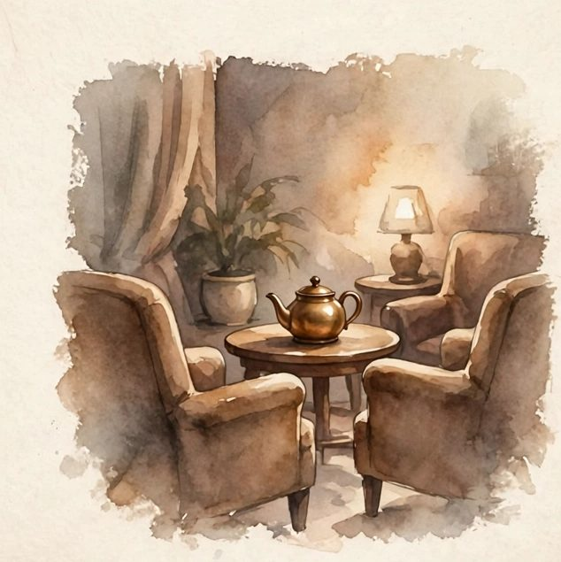
Two armchairs turned toward each other in a lamplit room, a small table and a teapot between them.
This hall begins with a small scene that most people know by heart and few can describe. A person says a thing — a fear, a hope, an account of some ordinary trouble — and the person opposite them goes quiet in a particular way, and nods once, slowly, and says the sentence back in fewer words than it took to say it, and the words are the right ones. Nothing has been solved. Nothing has even been agreed. And yet the room feels different, as if a window had been opened in it, because the thing that was carried alone for a while is now carried, accurately, by two.
Understanding, in the language of this house, is a form of shelter built out of attention. It is not agreement, and this hall will say so more than once, because the two are confused so often that whole friendships have ended over the confusion. A person can hear you completely and still choose otherwise. A person can agree with every word and never have heard one of them. What the speaker is asking for, most of the time, is neither surrender nor applause. It is the plain relief of finding that the sentence they sent out into the room arrived at its address, whole, in the shape they sent it.
This hall sells nothing and promises nothing. It does not offer a technique for being heard on demand, and it does not describe a person who is understood by everyone, everywhere, at all times. It offers a slower distinction, stated plainly and returned to often: between the comfort of being understood and the wear of going unheard, and between listening that receives a person and listening that only waits to repair them. You are invited to walk these rooms at an unhurried pace, to notice the chairs in your own life that are turned toward you, and the ones that have been turned away for a long time.
2Understood Is Not Agreed With
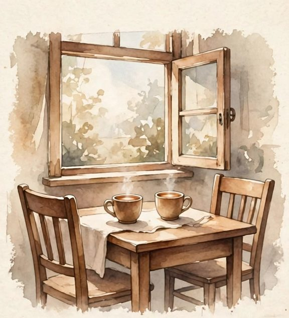
Two chairs facing across a table, two cups poured, one window open above them.
The difference stated plainly is this. To understand a person is to be able to say their meaning back to them in words they recognise as their own. To agree with a person is to hold the same view they hold. The first is an act of attention. The second is an act of judgement. They travel together often enough that they are mistaken for one thing, but they are two, and a good deal of unnecessary sorrow comes from treating the first as worthless unless the second arrives with it.
Consider how often a conversation quietly changes its subject. A person begins by asking to be heard and ends, without noticing, by asking to be approved of — and then feels refused when the listener, who heard every word, does not also surrender the point. The listener, for their part, often refuses to listen closely precisely because they fear that listening will be read as surrender. Both leave the room poorer than they entered it, each believing the other withheld something, when in fact each was guarding a different door.
This house keeps the two doors separate and labelled. In these rooms, a listener may say, and often does: I hear you, I can say it back, and I would still choose the other road. That sentence, spoken honestly, is not a rejection. It is one of the most respectful sentences available between people, because it gives the speaker the whole of the attention and none of the pretence. Two cups are poured in the Keeper's image for this page, and they are not the same cup. They were never meant to be. They only need to be on the same table.
3The Keeper of the Listening Rooms
The keeper of this hall is called the Keeper of the Listening Rooms, and the name describes a practice rather than a rank. Each morning the Keeper walks the length of the house turning chairs. It sounds like nothing, this turning of chairs, until it is understood what a turned chair means in these rooms. A chair facing the room says: someone may sit here and be heard. A chair left facing the wall says the opposite, in furniture. The Keeper's whole work is the keeping of that difference, repeated daily, without announcement.
The Keeper is not a person who finds listening easy. Some days the Keeper would rather explain than hear, and says so at the desk, in the register, in the same plain hand used for everything else. What the Keeper has learned is not how to become someone else, but how to return: to set down the reply that was already forming, to let the sentence in the room finish its own length, to ask the small question that proves the last one was heard. Listening, in this house, is not a gift some people are born holding. It is housekeeping, done on tired days as faithfully as on good ones.
Visitors sometimes ask the Keeper for the secret of the listening rooms, expecting a method with steps and a name. The Keeper points, instead, at the chairs. They are ordinary chairs. What is not ordinary is the arrangement: two of them, close, turned fully toward each other, with a lamp that lights both faces of the conversation and a table small enough that nothing large can be hidden behind it. The house was not built by a theory. It was furnished, one honest arrangement at a time, and it is kept the same way.
4The Listening Desk
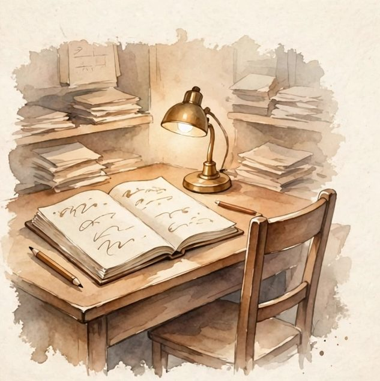
A keeper's desk with an open register, a lamp, a pencil, and a chair kept beside it for a visitor.
Every hall in this house has one desk, and this hall's desk is the Listening Desk. It stands where the corridor turns, in the warmest light the building can offer, and it is where the Keeper sits when the house is open. On it there is a register, a lamp, a pencil worn short by use, and a pot of tea that is replaced without comment when it goes cold. Beside it, always, there is a second chair. The register records what the house has heard. The second chair is the more important instrument of the two.
The register deserves a word of explanation, because it is not what visitors first assume. It does not record secrets, and it does not keep accounts of who said what in the rooms. It records the fact of hearings: that a sentence arrived, that it was heard in full, that it was said back plainly, and whether the teller left lighter than they came. Dates, not contents. The Keeper's belief, written on the register's first page, is that a house which cannot remember being listened in will slowly stop being a house where listening happens.
Correspondence for the whole hall arrives at this desk, and the forms placed through these pages every fifteen rooms all deliver to it. The Keeper reads everything in the order it arrives and answers what can be answered. Some messages ask questions the desk can meet. Some only ask to be heard at a distance, in writing, by someone who will not hurry them — and the desk honours those too, reading them twice, slowly, before the register is marked. A desk, in this house, is not furniture for writing at. It is a promise that there is a place where the post is opened by a person sitting down.
5First, Say It Once
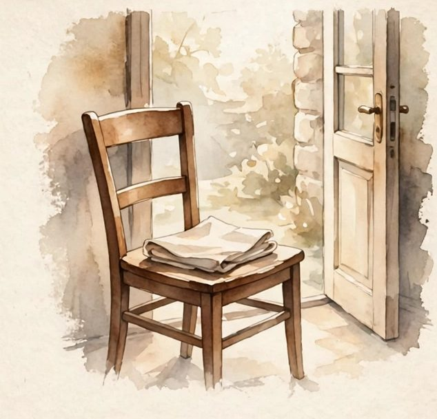
A single chair in morning light beside an open door, a folded page resting on its seat.
The hall's first practical counsel is almost embarrassingly plain: say the thing once, at ordinary volume, in ordinary words, before deciding that no one can hear it. Much of what is called being misunderstood begins earlier than the misunderstanding. It begins with the thing never quite said — circled around, hinted at, dressed in a joke, or delivered at such speed and in such a thicket of qualifications that the listener is handed the wrapping and never the contents. A listener cannot receive what was never actually sent.
Saying it once does not guarantee it will land. This house makes no such promise, and the rooms ahead are full of landed-wrong sentences and the patient work of salvaging them. But a sentence said plainly, once, gives the listener something honest to miss. The miss can then be found and corrected, because both people are looking at the same sentence. Where nothing plain was said, the correction has nowhere to stand, and the teller is left with the lonelier conclusion that they are simply incomprehensible, which is almost never the true account of the matter.
There is also a mercy in saying it once, for the teller. The third and fourth sayings of a thing are rarely clearer than the first; they are usually louder, sadder, or sharper, and each repetition quietly teaches the teller that their words do not work. The folded page on the chair in the Keeper's image is the house's emblem for this room: the thing, written or spoken once, set down where it can be picked up, rather than carried around the house all day being rephrased in the carrying.
6What Changes in the First Minute
Watch the first minute of any conversation in which a person brings something that matters to them, and you will see the whole future of that conversation decided in miniature. If the first minute contains an interruption, a correction of some small fact, or a quick reaching for the remedy, the teller learns the terms at once and begins, visibly or invisibly, to shorten the account. What arrives after that is the abridged edition, and the listener will spend the rest of the hour wondering why the story feels thin.
If the first minute contains something else — a settling, a turned chair, a face that stays — the teller learns the opposite terms, and the account lengthens into its true shape. Details arrive that would never have survived an interruption. The actual point, which is almost never the first thing said, makes its way to the front of the story. Nothing about the listener's opinions has been revealed, and nothing needs to be. The first minute does not ask the listener to agree, or even to understand yet. It asks only that the room be safe for the sentence to finish arriving.
The Keeper is strict about the first minute in these rooms, the way careful people are strict about small things that carry large ones. A kettle is never answered in the first minute. A door is never answered in the first minute. The register has a column for it, because the house believes the minute can be kept well on purpose, by ordinary people, as a habit rather than a talent. Most people, given one full minute of unbroken hearing, do not need to be managed at all. They need to be met, and the minute is where the meeting either happens or does not.
7The Rules of This Hall
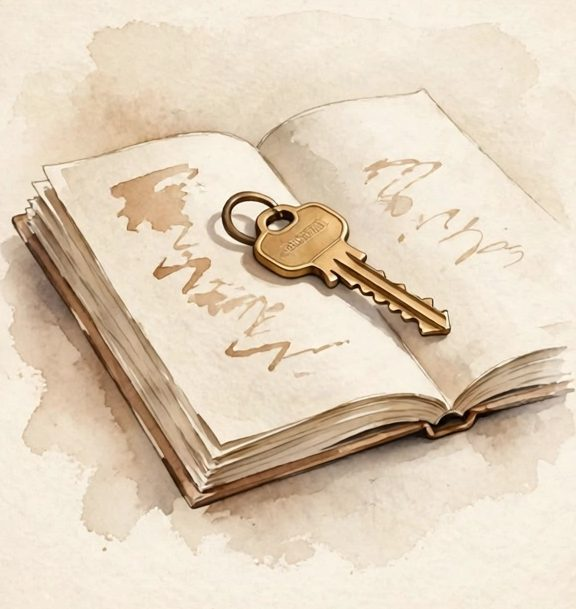
A brass house key resting on an open register book, abstract marks only.
The rules of this hall are few enough to be kept on one page of the register, and plain enough to be read aloud without embarrassment. First: let the sentence finish. Second: say it back before you answer it, so the teller can hear that it arrived. Third: agreement is a separate matter and will be dealt with separately, honestly, in its own time. Fourth: no one is repaired in these rooms without being asked. A person who wants only to be heard is given only a hearing, and it is given whole.
Fifth: what is said in the listening rooms is not carried out of them as currency. A confidence repeated in a corridor is a hearing undone. Sixth: the listener may be tired, and may say so, and may ask for another hour — tiredness admitted honestly does less damage than attention performed badly. Seventh: the teller owes the listener the same plainness the listener owes the teller. A sentence sent crooked cannot be blamed entirely on the ears that received it crookedly. The rules bind the house in both directions, or they would not be worth the page they are kept on.
There is an eighth rule, written last and underlined once, in the Keeper's hand. It says: these rules are for keeping the chairs turned, not for winning arguments about listening. The moment a rule of this hall is used to silence a person — to prove that they listened incorrectly, or spoke incorrectly, or asked incorrectly — the rule has been broken in the using of it. The house returns, then, to the thing itself, which is simpler than its rules. Two chairs. One sentence. Time enough for it to land.
8A Comfort, Not a Cure
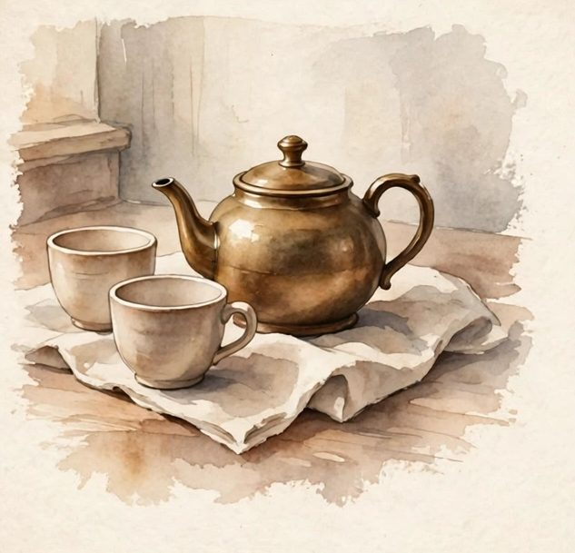
A teapot resting on a cloth beside two empty cups, steam gone, the room at ease.
It is important, early in the hall, to be honest about what being understood can and cannot do, because comforts that are oversold turn into disappointments, and disappointments turn into doctrines. Being understood does not remove the trouble that was spoken about. The bill is still the bill, the news from the physician is still what it was, the loss is still a loss. A person can be heard perfectly, by a perfect listener, and still go home to the same facts they left. Anyone who promises otherwise is selling something, and this house sells nothing.
What being understood changes is not the facts but the carrying of them. A trouble carried alone grows heavier in a particular way: it must be held and explained at the same time, defended against misreadings that have not even happened yet, kept ready for an audience that may never sit down. The moment the trouble is accurately held by one other person, the teller's arms are free of the explaining, and what remains is only the weight of the thing itself — which is usually, though not always, a weight one person can manage.
The teapot in the Keeper's image rests because the tea is finished, not because the visit failed. That is the register of this room. The comfort is real and it is limited, and the house holds both truths in the same hand. To call being understood a cure would insult the trouble. To call it nothing would insult the teller, who knows precisely how much lighter the walk home is. It is a comfort: the oldest one there is, older than advice, older than medicine, older than any profession that has ever been built on top of it.
9Why Listening Is Not Fixing
Many people, meaning nothing but kindness, hear a trouble and reach at once for the remedy, the way a hand reaches for a tool when it sees a nail standing proud. The reach is quick, and it feels like love, and sometimes it is love. But arriving that early, it carries a message the reacher never intended: that the story was a problem to be cleared away, and that the listener's comfort required it cleared. The teller hears the message clearly, even when the words were all concern. The story shrinks. The next trouble is carried further, to someone else, or to no one.
Fixing has its hour, and this house is not against it. Roofs leak and are mended in these rooms, forms are filled in, journeys are planned at the desk with maps. The hall's objection is only to the order of things. A trouble that has been fully heard can then be fixed with the teller's full strength beside the fixer. A trouble fixed unheard tends to stay unheard even after it is fixed, and the teller learns to bring only the fixable surface of things, keeping the rest — the part that was actually heavy — out of company altogether.
There is also a plainer reason, and the Keeper gives it without ceremony. Much of what people carry cannot be fixed at all. It can only be witnessed, the way weather can only be witnessed. The dead do not return because a sentence was clever. The lost years do not refill. For everything in that large category, listening is not the preliminary to the help. Listening is the help, entire and sufficient, and the person who understands that will never again describe a good hearing as merely a nice beginning.
10The Answer Is a Habit
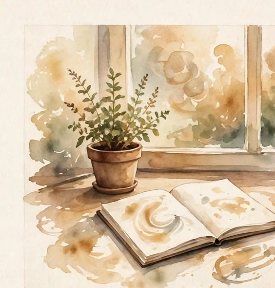
A small potted herb on a windowsill beside a notebook left open, abstract marks only.
If a visitor asks at the desk for the answer — how to be understood, how to understand — the Keeper's answer is disappointing in the way true answers often are. There is no occasion on which it happens once and forever. There is a habit: small, daily, mostly unnoticed, of turning the chair, finishing the hearing, saying the sentence back, and letting the other person correct the echo until the echo is true. People who are often understood are usually people surrounded by this habit, their own and others', practised over years.
A habit has one great advantage over an event. It does not require the day to be special, the listener to be gifted, or the teller to be eloquent. It requires only repetition, and it forgives interruption, because a habit resumed on Tuesday is not ruined by having been forgotten on Monday. The listening rooms are not quiet because the people in them are serene. They are quiet because the habit has been kept long enough that the room itself does half the work, the way a well-kept path does half the walking.
The herb on the windowsill in the Keeper's image is not decoration. It is the house's chosen emblem for attention: a living thing that does not grow by being commanded, flourishes by being tended a little and often, and dies, when it dies, of neglect rather than catastrophe. Nobody waters a plant once, thoroughly, and considers the matter closed for the year. The house suggests, without pressing the point, that being understood is kept the same way — and that this is good news, since tending is within everyone's reach in a way that transformation is not.
11The Hall in One Sentence
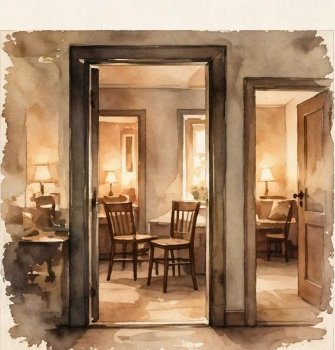
A whole house seen from its doorway, its lamplit rooms and paired chairs in one calm view.
Every hall in this house is required, by the Keeper's standing instruction, to be able to state itself in one sentence, so that a visitor who has time for nothing else can still take the whole of it away. The sentence for this hall is as follows. To be understood is to have your meaning received whole by another person, and it is a comfort separate from agreement, separate from rescue, and available in ordinary rooms to ordinary people who will give a sentence the time it takes to land.
The sentence repays slow reading, because each of its parts is doing work. Received whole: not summarised into something more convenient, not answered at the third word. By another person: understanding is not a solo achievement, and the house does not pretend that a person can fully supply it to themselves, though a later room will give the self its honest hearing too. A comfort separate from agreement: the heart of the hall, stated at the door as it was stated at the second room. Available in ordinary rooms: no special building is required. This one is only a picture of the principle, drawn large.
A visitor who takes only that sentence has taken the hall entire, and the Keeper says so without any sense of loss. The remaining hundred and nineteen rooms are not additional doctrine. They are the sentence examined slowly, from the sides of the misunderstood and the listener, in company and in family and at work, until it can be recognised in the wild — in a kitchen, in a corridor, in the first minute of a conversation that is about to go either way. Recognition, the house believes, is most of what teaching is.
12The First Rule of the House
The first hall closes with the first rule, the one from which the other seven are only corollaries. Let the sentence finish. It is written at the desk, it is repeated at the door, and it is the whole of the house's method in four words. A sentence interrupted is a meaning amputated at a point the speaker did not choose, and the listener who interrupts has decided — usually without noticing the decision — that they already know what the rest contained. Sometimes they are right. The house keeps its rule anyway, because the times they are wrong are the times that matter.
Letting a sentence finish costs almost nothing, which is why its refusal is so telling. It costs a few seconds of silence and a small surrender of the floor. What it buys is the entire difference between a listener and an audience of one waiting for their entrance. In the listening rooms, people regularly say the thing they actually came to say somewhere in the last third of a sentence they had to be allowed to complete — the qualification, the reversal, the quiet admission after the brave opening. Cut the sentence at its midpoint and that cargo never arrives, and both people leave believing the other was told.
The Keeper keeps a porch chair turned outward for the hour before the house opens, as a reminder that the rule applies before the day has even begun, to the first sentence of the morning, whoever speaks it. Let the sentence finish. The rest of this hall — the misunderstood rooms, the listener's craft, the two chairs, the steps and the long view — is commentary on those four words, and the house is content to have it so.
13Being Misunderstood
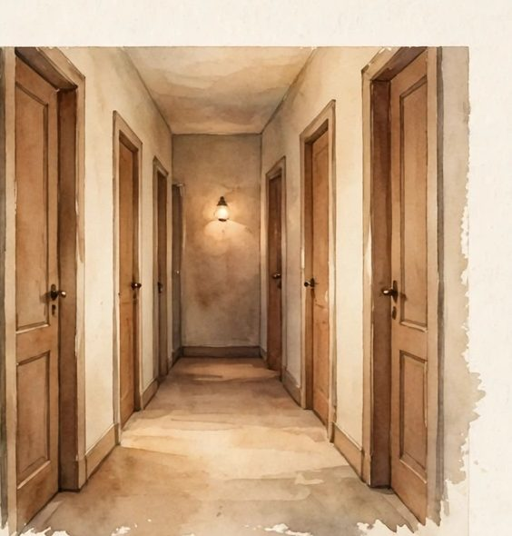
A long corridor of closed doors, one lamp burning low at the far end.
The second hall of this house is the shadow of the first, and it must be walked honestly or the first hall is only a poster. Being misunderstood is the ordinary experience of sending a meaning out into a room and watching it arrive as something else: smaller, sharper, reversed, or dressed in motives the sender never owned. It happens between careful people. It happens between people who love each other. It happens, if anything, more readily there, because the stakes of being rightly known are higher and the disappointment falls further.
What distinguishes being misunderstood from merely being disagreed with is the peculiar loneliness of it. Disagreement at least confirms that the sentence landed; the other person is standing on the same ground, facing the other way. Misunderstanding leaves the teller unsure the ground exists. They described the north field and were answered about the south. They said they were tired and were heard to be lazy. They said they were afraid and were heard to be difficult. The reply is not hostile. It is simply addressed to somebody else, and being answered as somebody else, year after year, is one of the quietest forms of exile there is.
This hall does not treat misunderstanding as a catastrophe, and it does not treat it as a triviality either. It treats it as weather between people: frequent, usually nobody's fault in particular, and survivable with patience and better arrangements. The rooms ahead name its costs plainly, because costs denied are costs doubled. But the hall's last word on the subject is already posted at its final door. A wrong hearing is not the last hearing. Almost every meaning that has been missed once can be sent again, slower, by a better road, to a listener who has been told what went wrong the first time.
14The Sentence That Lands Wrong
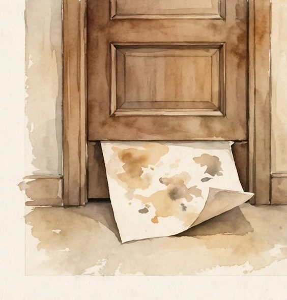
A letter slipped halfway under a door, its corner bent, abstract marks only.
Every person keeps a small private archive of sentences that landed wrong. They are remembered out of all proportion to their length, because each one stands for an hour when the room quietly rearranged itself around a meaning the speaker never sent. I need some time alone, which landed as I do not love you. I am not sure about the plan, which landed as I am against you. I did it myself in the end, which landed as you were no help. The sentences were not careless, most of them. They were ordinary sentences, carrying ordinary meanings, that struck something in the listener and ricocheted.
A sentence lands wrong for reasons that usually have addresses on both sides of the room. The listener's history is one address: a phrase that was harmless in the teller's house was a warning bell in theirs. The hour is another: the same words land differently at midnight than at breakfast. And sometimes the sentence itself was built badly, with its soft part buried and its hard edge forward, so that only the edge arrived. The house declines to assign the whole fault to either chair. It asks, instead, what the sentence struck on its way across.
The letter under the door in the Keeper's image is the emblem: a message delivered to the right house, in the right slot, that will be read in the wrong light because it arrives bent, at an angle, half in shadow. The remedy the house teaches is not to stop writing letters. It is to notice the bending early, while the reader is still in the room, and to say the plainer thing that was underneath the first one. A landed-wrong sentence, caught in its first minute, is a small repair. Left for a year, it becomes part of the architecture.
15Explaining It a Third Time
There is a particular tiredness that belongs to explaining a thing for the third time, and it is not the tiredness of repetition. The first telling is hope. The second is patience. The third is the moment the teller begins to hear their own voice as evidence against them, because surely, they think, a clear thing clearly said would not need a third journey across the room. Their voice rises or flattens. Their words get shorter and harder, or longer and more desperate. And the listener, watching the change, often understands the tiredness least of all, hearing only that the teller has become difficult about something simple.
The house wishes to state, in the teller's defence, that needing a third telling is not proof of a defective meaning. Some meanings are heavy and do not travel well. Some listeners were attending to something else during the first two journeys, for reasons that have nothing to do with the teller. Some sentences need to be heard in a different room, at a different hour, in a different order, with the conclusion first and the reasons after. The number of tellings measures the road, not the worth of the cargo.
The practical counsel of this room is small and has saved more conversations than any doctrine in the hall. Before the third telling, stop and ask what was heard. Not as a test, and not as an accusation — as a genuine inquiry, because the answer will locate the bend in the road, which is almost never where the teller assumed it was. Then the third telling can be a different telling, aimed at the actual gap. A third telling that is only the first telling, louder, has never repaired anything but the teller's sense of having tried.
The Listening Desk
One desk receives all correspondence for this house — questions, corrections, and word of any sentence a visitor has been carrying unheard for a long while: the thing said three times that never landed, the account that always comes out wrong, the listener they are hoping to find. It is read in the order it arrives, and entered in the register of listening.
16The Polite Nod
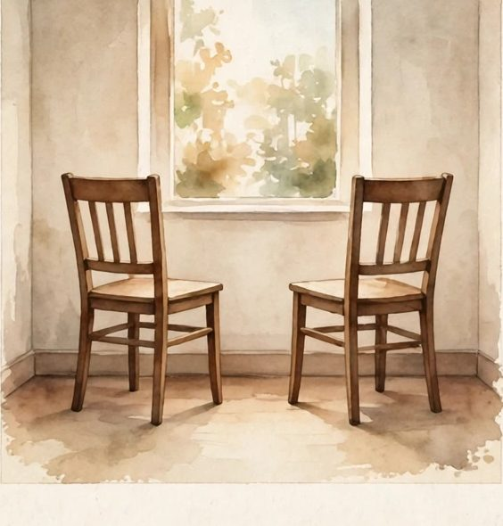
Two chairs set back to back in an empty room, a bright window between them.
The polite nod deserves its own room, because it is the most respectable form of not listening and therefore the hardest to grieve. It has excellent manners. It arrives on time, maintains the appearance of attention, makes the small sounds of agreement at the small pauses, and receives nothing whatsoever. The teller often knows. There is a hollowness in a room where a nod is being performed, a sense of speaking into upholstery, and most people can detect it within a minute even when they cannot name it. They shorten their story in self-defence and go home with it.
It would be comfortable to treat the polite nod as dishonesty, but the house has watched it too long for that. The nod is usually a shelter, not a lie: the listener is tired, or frightened of the depth of what is coming, or privately certain they will disagree and unwilling to pay for the disagreement yet. The nod buys peace at a price charged to the teller. Understanding the nod's kindness does not oblige anyone to accept it as hearing. It only changes the remedy, from accusation to invitation: the nodding listener, gently told that the real answer would be welcome, often turns out to have one.
The chairs in the Keeper's image sit back to back, in one room, sharing one window's light, facing away. That is the polite nod rendered in furniture, and the house keeps the image where visitors will pass it, because the arrangement is so common and so rarely noticed. Two people can share a house, a table, a decade, and that exact arrangement of chairs. The turning of one chair is a small motion. Everything in this hall follows from how small it is, and how long it can go unmade.
17What Misunderstanding Costs
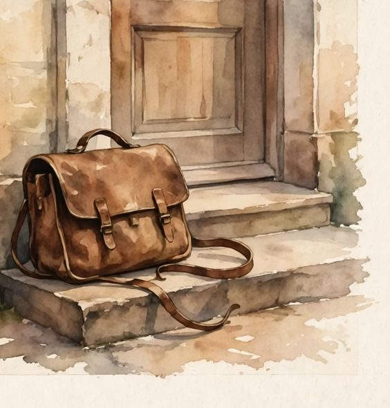
A satchel grown heavy set down on a doorstep, its strap worn thin.
The costs of being misunderstood are rarely charged in one large sum, which is why they are so often denied. They are charged in small coin, daily. A person stops mentioning the thing that matters, because mentioning it costs an hour of salvage. Then they stop mentioning the next thing. The range of what can be said in their own house narrows, year by year, to the safe subjects — weather, arrangements, other people's news — and the narrowing is so gradual that it is mistaken for maturity, or peace, or the natural quiet of a long acquaintance settling down.
There is a second cost, charged to the inside of the teller. A meaning repeatedly received wrong begins to be doubted at its source. Perhaps I am unclear, the teller thinks. Perhaps the feeling is disproportionate. Perhaps I am the sort of person whose insides do not translate. The house regards this as the deepest cut misunderstanding makes, because it turns the teller against their own testimony. A person who no longer trusts their own account of themselves is carrying a weight no listener handed them directly, and it sits on everything else they carry.
The third cost is charged to the listener, and it is real, because these rooms keep their accounts honestly in both directions. The listener who habitually receives people wrong lives among strangers of their own making. Everyone around them has learned to send the abridged editions, and the listener moves through a flattened world, sincerely believing that other people are simpler than they are. The satchel in the Keeper's image is set down on the doorstep because the carrying had become too much for one person — and it belongs, the house notes, to everyone who passed it on the stairs and read it as luggage rather than as a person resting under a load.
18The Words That Come Back Changed
Sooner or later, in a house where listening is poor, a person hears their own words returned to them in altered form. They said they were worried about the money, and it comes back, days later, as your accusation that I am careless. They said they needed a quieter evening, and it returns as your announcement that you are bored with us. The returned version is always a little worse than the sent one — a degree more hostile, a degree more final — because a meaning, passed from ear to memory to mouth without being checked, sharpens in the keeping like a story told too often at the teller's expense.
The house has a small, unglamorous practice for this, and it is one of the most useful in the hall. When your words come back changed, correct the record once, briefly, without heat, and as near to the moment as you can: what I said was this, and the difference matters to me. Not the whole argument again — only the correction, entered the way a clerk enters an amendment, in a level hand. Most people, corrected once and early, accept the amendment, because most people are not forging the record. They are carrying it badly, which is a different failure and a more forgivable one.
Left uncorrected, the changed version becomes the archive, and the archive becomes the relationship's memory of itself. Years later, both people will cite the returned words as the historical fact, and the original sentence will have no witness left. The garden path in the Keeper's image doubles back on itself, which is how a meaning travels in such a house: out as one thing, home as another, and the walker blamed for the shape of the road. Checking the echo is not pedantry. It is how the path gets straightened, one correction at a time.
19Heard as a Complaint
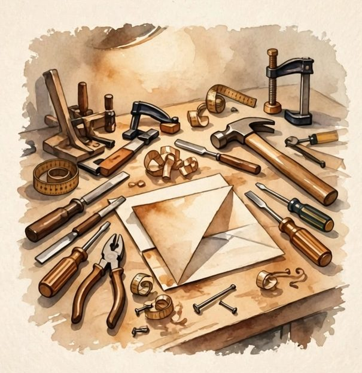
A workbench crowded with tools laid over a folded letter, the letter half hidden.
A common and wearying mishearing deserves its own room. An observation is made — the house is cold in the mornings; the journey took longer than it used to; the work has been heavy this month — and it is received as a complaint, with a defendant implied. The listener stiffens. A defence is prepared. Sometimes a counter-charge is filed. And the teller, who was only setting a fact on the table the way one sets down a cup, stands amazed at the size of the response, and learns to set facts down more carefully, or not at all.
The mishearing has a logic, and seeing the logic helps. Many people were raised in houses where an observation was the customary first move of an accusation, so they learned to answer the expected second move instead of the actual first one. Others carry a standing sense of being at fault, which converts every neutral sentence into a verdict by reflex. Neither is stupidity. Both are old arrangements of chairs. But the effect on the teller is the same: their plainest speech is taxed as hostility, and plain speech is exactly what a house runs on.
The letter on the workbench in the Keeper's image lies half hidden under tools, because that is where observations end up in such a house — buried under the apparatus of fixing and defending before they have been read. The house's suggestion is modest. When an observation lands on you like a complaint, spend one sentence checking which it was, before the defence is built. I hear that as a complaint — is it one. The question costs nothing, and in a surprising number of rooms it dissolves the trial entirely, leaving only a fact on the table, cooling, harmless, waiting to be dealt with at leisure.
20Never Mind, Said Flatly
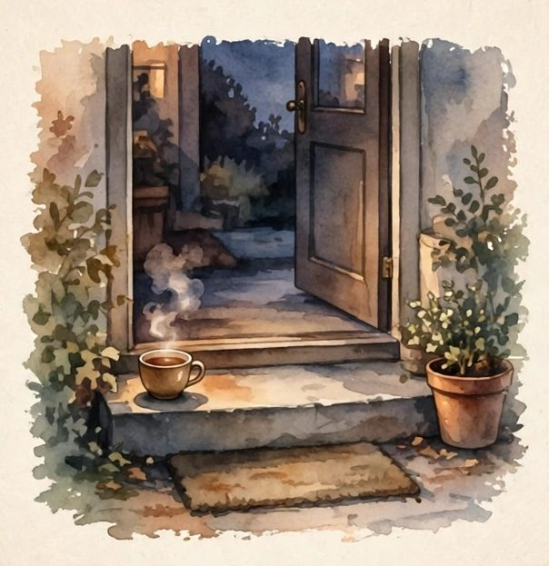
A doorstep at dusk with a cup of tea left untouched and cooling.
Two words end more conversations in the world than any others, and they are the saddest in this hall's register. Never mind. They are spoken at the exact moment a teller gives up in the middle of a sentence — not because the thing stopped mattering, but because the cost of getting it across has suddenly exceeded the teller's remaining strength. The listener usually accepts the surrender with relief, and the relief is the wound. Something was offered, at effort, and withdrawn, at effort, and the room keeps the shape of both efforts long after the subject is forgotten.
The house keeps a particular respect for these two words when it hears them, because they are never really about the sentence they interrupt. They are the summary of a history. Nobody says never mind at the first failure of hearing; it takes practice to reach the words, a whole apprenticeship of nodding rooms and changed echoes and third explanations. By the time never mind arrives, it is carrying all of that. The Keeper's instruction to listeners is therefore plain. When you hear never mind, the conversation is not over. It has just told you where it hurts, and the only decent response is to ask, gently, for the sentence to be allowed to come back.
For the teller, the house offers one sentence of counsel, and offers it as a fellow-practitioner rather than an authority. Never mind is sometimes necessary; there are rooms and hours where the strength is genuinely not there, and no doctrine of this hall obliges anyone to spend their last coin on a bad road. But let it be a rest, not a retirement. The tea on the doorstep in the Keeper's image has gone cold, and cold tea can be remade. What cannot be remade is a house where the words are never again followed by say it again, I am listening this time.
21The Almost Understanding
Almost is the cruellest distance in this hall, because it looks so much like arrival. The listener has caught most of the meaning — the facts, the sequence, the names — and missed the one thing the sentence was carrying, which is usually the feeling underneath the facts. Yes, the teller says, that is what happened, that is all exactly what happened, and no, that is not what I said. The listener is baffled and a little injured. They listened. They can prove they listened. What they cannot prove is that they heard, and the gap between the two is the subject of this entire house.
The almost understanding usually fails at a predictable place. It takes the words at their surface value, in a house where the words were doing double duty. A person says the journey was long when the sentence is carrying I was frightened on the road. A person says the work is finished when the sentence is carrying I do not know who I am without it. None of this is a code, and the house does not believe in codes. It is simply how human sentences are built: the freight rides underneath, and a listener who unloads only the top layer has done most of the work and missed most of the meaning.
There is no technique in this room, only a disposition. The listener who suspects there is freight underneath asks the one extra question, and asks it humbly, as a guess offered for correction rather than a discovery announced. Is the hard part the journey, or the frightening. Sometimes the guess is wrong, and the teller corrects it, and the correction lands them both nearer than the nod ever did. Almost, pursued honestly, becomes arrival. Almost, accepted as arrival, becomes the loneliest arrangement in the hall: two people agreeing forever about a sentence neither of them has finished hearing.
22Carrying a Meaning Alone
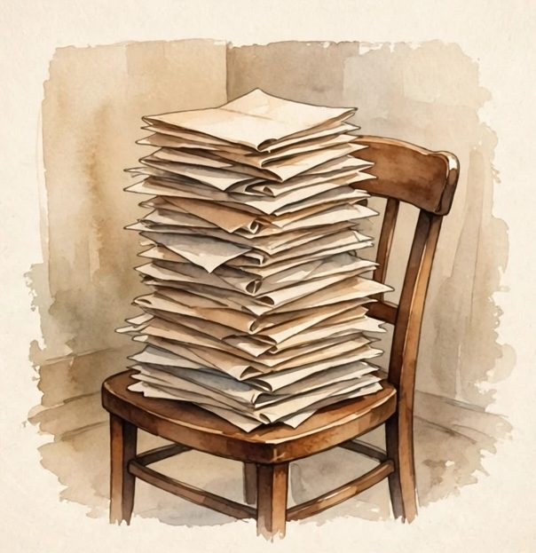
A single chair carrying a tall stack of folded letters, more than it can hold.
To carry a meaning alone is to hold a true account of something — a grief, a grievance, a joy, a fear — that has found no second holder. It is a more common condition than the house likes to admit, and it is not confined to the lonely. People carry meanings alone in marriages, in families, in busy offices full of talk, wherever the traffic of words is constant and the reception of them is rare. The meaning does not disappear for want of a witness. It is kept, and the keeping becomes part of the person's posture, visible to anyone who knows how to look at how a sentence is carried.
There is a dignity in it, and the house will not pretend otherwise. A meaning carried alone and kept true, through years of changed echoes, is a form of faithfulness to one's own experience, and many people have been held together by exactly that faithfulness. But the cost is real, and this hall keeps its accounts honestly. The solo carrier cannot set the load down even to rest, because there is no one to hold it for an hour. They cannot check the weight against another's reading. The account may slowly warp under its own keeping, with no witness to say: it was heavier than that, or lighter, or different in the part you think you remember clearly.
The stack of letters on the chair in the Keeper's image has been folded and refolded by one pair of hands. Every one of them is addressed. None of them has been received. The rooms ahead of this one exist because the house believes the condition is not a life sentence. A second holder can be found, or made, or trained out of an unlikely chair. But the finding begins here, with the plain naming of the condition, because a person who has carried a meaning alone for years often no longer notices the weight. It has become the shape of their shoulders. Naming it is how they first learn that it could, in principle, be set down.
23The Room Gets Quieter
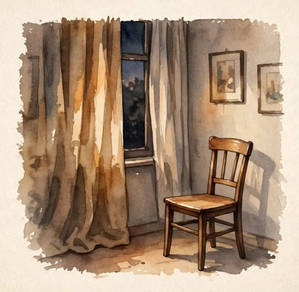
A quiet room at evening, curtains half drawn, one chair turned toward the wall.
When a house has been badly listened in for a long time, it develops a distinctive quiet, and visitors to these rooms learn to recognise it. It is not the quiet of rest. It is the quiet of things no longer attempted. Conversation continues — arrangements are made, news is exchanged, jokes survive surprisingly late into the process — but the register of what gets said has thinned, the way a river thins when its sources are diverted one by one. People call it drifting apart. The house calls it the arithmetic of failed hearings, compounding quietly.
The quiet is nobody's single decision, which is what makes it hard to reverse. Each person stopped offering the sentences that cost the most to salvage, reasonably, one at a time. Each retreat was met with relief on the other side, which was also reasonable, because a misunderstood sentence is work for the listener too. Reasonable step by reasonable step, the house arrives at a silence neither person chose and both people maintain. From outside, it can look peaceful. The Keeper, who reads registers, knows it by what is missing from them: whole categories of weather, unrecorded for years.
This room is not written as a lament, and the hall does not permit it to end as one. A thinned conversation is evidence about arrangements, not about worth, and arrangements can be changed by the same small steps that built them, run in the other direction. One sentence offered again. One hearing completed. The room does not get louder all at once, and the house does not ask it to. It gets, first, a little less careful, which in a quiet house is the sound of water finding its level again — one honest sentence at a time, in the evenings, with the chairs turned back by hand.
24A Wrong Hearing Is Not the Last Hearing
The second hall ends, as the Keeper insists every hard hall in this house must end, with its door opening outward. A wrong hearing is not the last hearing. This is not a slogan but a mechanical fact about how people and sentences work. The listener who received the meaning wrongly today is the same person, with the same ears, who may receive it rightly in a month, when their own weather has changed, when the sentence is sent by a better road, when someone has told them — kindly, precisely — where the first arrival went astray.
Repair is unglamorous, and this room will not dress it up. It looks like returning to a subject both people would rather leave. It looks like saying: when I told you that, what arrived was not what I sent, and I would like to send it again, slower. It looks like the listener saying: tell me where I lost it. These sentences are awkward in the mouth and strangely light in the room, because they replace the two available fictions — that nothing happened, or that the other person is hopeless — with a third thing, which has the advantage of being true.
Not every wrong hearing can or should be repaired, and the house keeps its honesty here too. Some listeners have declined the work so often that a door, once many times knocked at, is fairly considered closed, and a later hall will speak of finding other chairs. But the default of this house is repair, and its reason is empirical. The Keeper's register holds forty years of amended entries, struck through gently in pencil, legible still and no longer owed. Meanings in this house are not struck in stone. They are entered in pencil, in a good light, by people who expect to be corrected — which is the only kind of certainty the listening rooms have ever needed.
25Heard, Not Handled
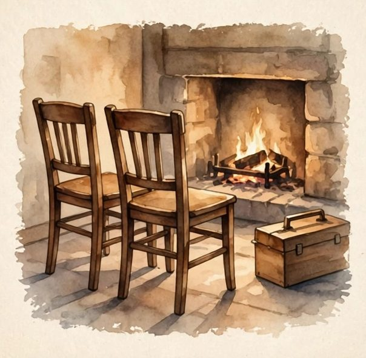
Two chairs before a low fire, a toolbox closed and set aside on the floor.
The third hall opens with the distinction the whole house turns on, set out in furniture. To be handled is to be processed: heard as a problem, assessed, advised, and filed, all with the best intentions and at impressive speed. To be heard is to be received: the sentence allowed to arrive whole, the teller allowed to remain a person while it lands. The chairs in the Keeper's image face a low fire, and the toolbox on the floor beside them is closed — not thrown away, not condemned, closed. The house is not against tools. It is against opening them before the guest has finished speaking.
Handled people learn quickly what handled people always learn: to present the version of the trouble that has a handle. The grief that can be scheduled, the fear that can be itemised, the doubt that can be answered in a memo. The rest they keep back, and the keeping back is not dishonesty — it is an accurate reading of the room's terms. A house that handles will be brought handles. A house that hears will be brought, slowly and then all at once, the whole unhanded weight of things, including the parts with no remedy at all, which are usually the parts that most needed company.
The difference shows in the body before it shows in the words, and the Keeper watches for it. A person being heard sits differently: the shoulders come down, the sentence slows, the eyes do the unfocused work of remembering rather than the focused work of defending. A person being handled stays braced, because the processing is not finished with them yet. Nothing in this hall is more worth learning than that difference, and it cannot be learned from a description. It is learned the first time a listener watches a teller unbend in real time, and understands that the unbending was caused by nothing the listener said. It was caused by what the listener refrained from doing.
26Listening Without Fixing
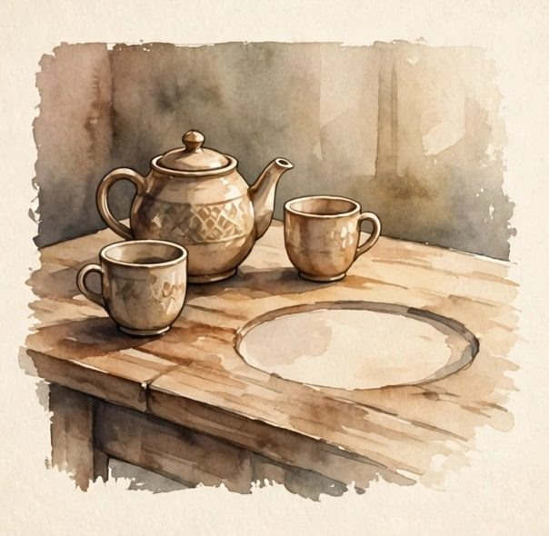
A table holding a teapot, two cups, and an empty space where a third thing might have stood.
Listening without fixing is a discipline, and like most disciplines it feels, at first, like a dereliction. The story arrives, the trouble stands plainly in the middle of the room, and the listener — who can see, or believes they can see, exactly what should be done — must leave it standing there and simply bear witness to it. The hands itch. The advice climbs the throat. Everything in a capable person protests that this cannot be the helpful part. The house answers: attend to what happens in the room while you refrain. The story gets longer. The teller gets calmer. The trouble, unsolved, becomes strangely lighter to be in the presence of, including for the teller.
The discipline has a reason beyond courtesy. Advice given before a hearing is advice given about the wrong trouble, because the trouble described in the first telling is almost never the trouble itself. It is the trouble's travelling clothes. The fear arrives dressed as a logistics problem; the grief arrives dressed as a complaint about arrangements; the shame arrives dressed as a joke. The listener who fixes the first telling has spent their best help on a costume. The listener who waits gets the actual account, usually somewhere around the moment the teller says: no, the thing is — and the sentence after that is the one the evening was for.
None of this forbids help, and the hall is emphatic on the point because the misunderstanding is common. When the hearing is complete, help may be offered, plainly, as a separate act: I have heard you. There is a thing I could do, if you want it done. The offer lands entirely differently then, because it follows reception rather than replacing it, and because the teller, no longer braced against being processed, can genuinely consider it. Order is the whole secret. Hearing first and help second is kindness. Help first and hearing never is handling, however warm the hands that do it.
27A Story Is Not a Problem
A story is not a problem, and the confusion of the two is the most respectable error in this house's register. A problem has a shape that invites solution: it can be stated in a sentence, bounded, assigned, closed. A story has the opposite shape. It spreads. It contains people who are not consistent and events that do not resolve, and its teller is not reporting a malfunction but walking a stretch of their own country, usually with a guide's hope that the listener will simply see what the country looks like, and say so.
When a story is treated as a problem, the teller feels the handling in a place they cannot name. The listener asks narrowing questions. The listener proposes the turning point the teller should have taken. The listener, at the end, delivers a verdict disguised as a summary. The teller agrees to all of it politely and leaves with the distinct sensation of having been edited. Nothing false was said in the room, and nothing true arrived either. The story went home with its teller, unpublished, which is to say unheard, which is to say still entirely theirs to carry alone.
The house teaches a different handling for stories, and it is learnable by anyone willing to be taught by good readers. A story is received the way a guest is received: let in whole, given the good chair, not interrupted at the door with questions about its business. Its details are not evidence. Its digressions are not failures of editing; they are where the freight usually rides. And when it ends, the correct response is not a solution but a witness's answer: I see it. I see where you stood in it. The ribbon in the Keeper's image marks the page, because a story properly heard is a story that can be returned to — by both people, together, from the same page.
28Saying It Back, Plainly
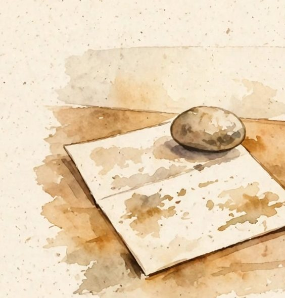
An open letter lying flat on a desk under a smooth stone, read twice and kept.
The house's central technique, if a thing so plain deserves the word, is saying it back. When a teller finishes, the listener sets down, in their own ordinary words, what they understood the meaning to be — not the words repeated, which proves only memory, but the sense gathered and returned, which proves reception. It takes ten seconds. It feels, to beginners, awkward and formal. And it changes the physics of the room entirely, because the teller, for the first time in the conversation, is standing outside their own meaning, looking at it in another person's hands, able to see what shape it arrived in.
The saying back is not a test the listener passes. It is an offer the teller corrects, and the corrections are where the gold is. No — not that I was angry at her; that I was angry at being the last to know. The amended sentence is nearly always the truer one, and it is remarkable how often the teller hears their own meaning clearly for the first time in the listener's imperfect version of it. The echo does not need to be perfect. It needs to be offered, plainly and without defence, as a draught for amendment. A listener who cannot bear to be corrected cannot say anything back worth correcting, and the tellers learn this about them quickly.
The Keeper's register formalises the practice in one line, entered for every hearing of consequence: said back, amended, agreed as heard. Three small facts. They are the house's definition of a completed conversation, and they explain why so many conversations in the world feel unfinished even when they end politely. The story was told and the advice was given and the door was closed — but the meaning was never held up between the two people and confirmed, by both of them, as the same object. The letter under the stone in the image has been read twice. That second reading is the whole technique, and the whole hall stands behind it.
29A Sentence Finished by a Friend
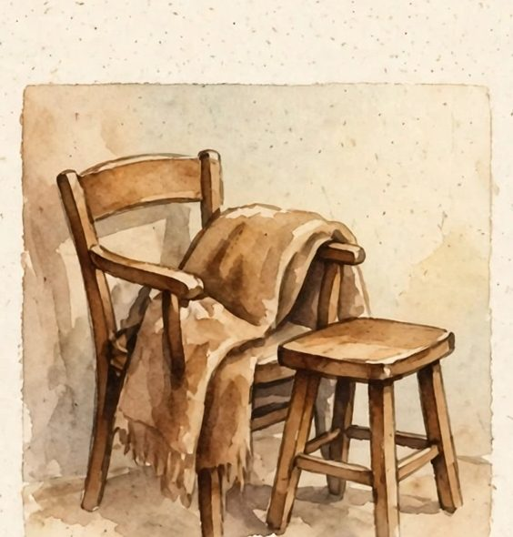
A chair and a stool drawn close together, a shawl folded over the chair's arm.
There is a small event, familiar to everyone who has ever been deeply known, that this room exists to honour. A person begins a sentence — an ordinary sentence, about a person, a plan, a memory — and the person opposite finishes it. Not interrupts it: finishes it, correctly, in the teller's own direction, so that the sentence lands complete and both people laugh, a little startled, at the seam not showing. It feels like a parlour trick. The house regards it as one of the highest certificates listening can earn, because it cannot be counterfeited. You cannot finish the sentence of a person you have not been hearing for years.
What the finished sentence certifies is not telepathy but accumulation. Thousands of completed hearings go into it: the names remembered, the history held in common, the knowledge of how this particular mind approaches a corner — where it speeds up, where it goes quiet, what it always says just before the thing it means. The listener who finishes a sentence is spending capital saved across a decade of attention. This is why the event moves people out of proportion to its size. It is proof, delivered casually and mid-conversation, that they have been carried in another person's mind accurately enough to be predictable there. To be known that well is to be less alone in the most literal sense available.
The house adds one caution, entered in the register in a careful hand. The power to finish a sentence is a trust, and it is spent wrongly when it is used to hurry a teller, to show cleverness, or to close a subject the listener does not wish to hear. The same room ahead of this one will say: do not finish every sentence. The gift certifies the listening; it does not license the interruption. The shawl over the chair's arm in the Keeper's image belongs to someone who has been sitting there a long time, finishing sentences and keeping most of them unspoken — which is the certificate's other side, and the rarer one.
30The Pause That Lets It Land
Between the end of a sentence and the beginning of a reply there is a space, and this room is about that space, because it is where hearing either completes itself or does not. The instant reply — sympathetic, horrified, delighted, full of remedy — feels responsive, and sometimes it is. But a reply that arrives without a pause is a reply that was being composed during the hearing, which means the last part of the sentence was received by a mind already busy elsewhere. Tellers know this in their bodies. They feel the difference between a silence that is still listening and a silence that is loading.
The pause the house teaches is not long, and it is not theatrical. It is a breath, or two: long enough for the sentence to settle, for the listener to notice what it actually did to them, and for the teller to experience the rare sensation of their words having weight in a room — of the room taking a moment to bear them. In that moment, more truth is exchanged than in many whole speeches. The teller often adds, into the pause, the one sentence they were not sure they would say. Pauses are where the real account usually begins, which is why handled people, who are never given any, so rarely reach it.
There is a discipline to it, and the Keeper is candid that the discipline is mostly self-government. The pause must be defended against the listener's own urgency — the wish to comfort quickly, to display understanding, to escape the discomfort of an unresolved feeling standing in the room. All of those wishes are about the listener. The pause is about the teller. The pendulum in the image rests not because the clock is broken but because the room has agreed, for the length of a breath, to keep a different kind of time: the time a sentence needs to land, measured not in seconds but in settling.
The Listening Desk
One desk receives all correspondence for this house — questions, corrections, and word of any sentence a visitor has been carrying unheard for a long while: the thing said three times that never landed, the account that always comes out wrong, the listener they are hoping to find. It is read in the order it arrives, and entered in the register of listening.
31Questions That Open a Door
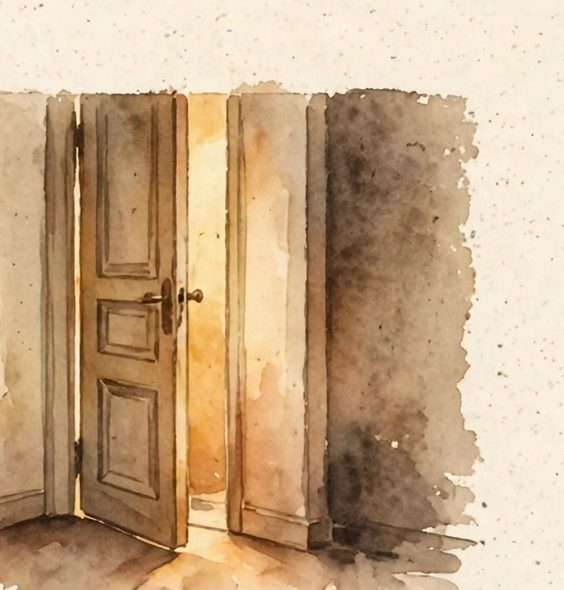
A door opened a hand's width between two rooms, warm light coming through the gap.
Questions, in a listening room, come in two kinds, and they are as different as a key and a corner. The cornering question narrows: it asks for the fact that will close the subject, assign the fault, or confirm what the asker already believes. It is recognisable by the relief it produces in the asker and the smallness it produces in the answerer, who can feel the walls of the permissible answer before they speak. Courts use such questions, and cross-examinations, and they have their place in the world. It is not in a house where a person has come to be understood.
The opening question is built the other way. It widens the room around the sentence. What was that like. Where does it sit heaviest. What would you want me to understand about it that I have not understood yet. These are not techniques and they fail when they are performed as techniques; a widened question asked from a narrowed heart fools no one. They are the natural shape curiosity takes when it is not in a hurry — the shape of a mind that has genuinely registered that the teller's country is larger than the part already described, and would like to be shown more of it, at the teller's pace, by the teller's roads.
The door in the Keeper's image stands open a hand's width, which the house considers the honest width for most questions. Not flung wide in a performance of openness, not interrogated through the keyhole — ajar, with warm light coming through the gap, and the decision about the opening left where it belongs. A good question does not drag the teller through the door. It shows the teller that the door is unlocked, that the listener is on the other side of it, and that there is no clock in the room where the listener is waiting. What comes through such a door arrives whole, because it was never forced into a narrower shape to fit the opening.
32Grief, Heard Without Hurry
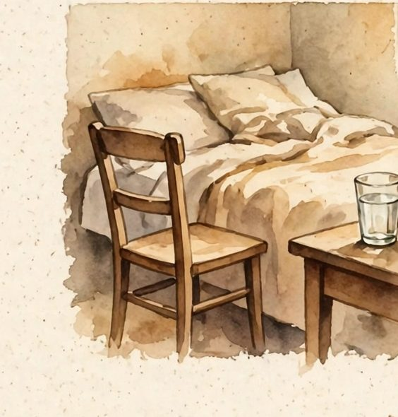
A chair drawn up beside a made bed in soft light, a glass of water on the night table.
Grief is the test these rooms were built for, because grief is the least fixable of the common weathers and the worst heard. It arrives in company already braced: for the consolation that hurries it, the comparison that shrinks it, the bright sentence about time that lands on it like a hand pressing down. The grieving person has usually heard all of these within the first week, delivered kindly, and has learned to answer them kindly, and the performance of that exchange — condolence given and gratitude returned — can leave the grief itself entirely unmet, like a guest received in a hallway by staff, and never once asked into a room.
Heard without hurry, grief behaves differently. It does not require the listener to do anything impressive. It requires the listener to stay at the pace grief sets, which is slow, and repetitive, and full of returns to the same ground — the same name, the same last day, the same unfinished sentence — because grief circles, and each circling is not a failure to progress but the thing itself happening. The listener who can hear the same account the fourth time with the same attention as the first has understood something fundamental: that the telling is not the report of the work. The telling is the work.
The chair in the Keeper's image is drawn up beside the bed, not placed for a visit of state but for sitting through something, and the glass of water on the night table is the whole of the house's theology on the subject. No one in the image is fixing anything. Someone has simply come close, at the right height, with the small useful thing, prepared to be there when the sentence comes and when it does not. The house knows of no grief that was harmed by such a chair. It knows of many that were carried further and more quietly after one was finally drawn up.
33Anger, Heard Without Alarm
Anger frightens listeners more than any other weather, and the fright makes them bad at their work in predictable ways. They soothe prematurely, which the angry person hears as dismissal. They argue with the facts while the feeling is still standing in the middle of the room, which the angry person hears as disbelief. Or they withdraw — politely, suddenly, with an arrangement to make — which the angry person hears as the oldest message in their register: that this part of them is too much for company, and must be carried, like everything else that is too much, alone.
To hear anger without alarm is first of all to understand what anger usually is in a listening room. It is rarely a wish to harm. It is most often the sound of a boundary being reported — something valued has been crossed, lost, or dismissed — spoken in the only register the teller has left after quieter ones were not heard. Anger that has been heard, fully and without flinching, very often does a remarkable thing: it lowers itself, because its message has arrived, and volume was only ever its transport. Anger that is suppressed by alarm does the opposite. It does not leave the house. It takes a room in it.
The listener's discipline here is narrow and exact. Stay in the chair. Let the weather be weather — loud is not the same as dangerous, and the listener who can hold that distinction gives the teller an experience many people have never had: their strongest feeling received without the room rearranging itself in fear. The facts can be argued later, if they need arguing; this hall has never claimed that hearing is agreeing. But the sequence matters as much here as anywhere in the house. Alarm first, and nothing else gets heard at all. Hearing first, and the anger itself will often conduct the argument, later, at ordinary volume, like weather that has passed over and left the air clearer.
34Joy, Heard and Believed
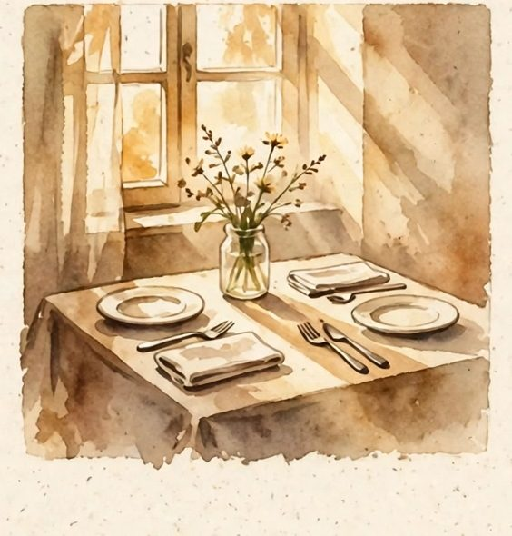
Sunlight falling through a window onto a table set for two, plain flowers in a jar.
Joy is heard badly more often than this house finds comfortable to report. It arrives lighter than the heavy weathers and is therefore easier to interrupt, easier to cap with a matching story, easier to greet with the small damp sentence that returns it to size: well, do not get ahead of yourself. The teller of good news is conducting a test, whether they know it or not — whether this house can hold their gladness at full size — and the house fails it, mostly, not out of malice, but out of a reflex that treats excitement as a debt to be talked down and sorrow as the only currency that deserves a full hearing.
To hear joy and believe it is a skill with its own disciplines. The listener must resist the matching story, which steals the chair. They must resist the caution, which taxes the gladness. Above all they must let the news be as large as the teller finds it, even when — especially when — it concerns something the listener would not themselves prize: the small promotion, the reconciled cousin, the garden's first success after years of failure. Believing joy is not agreeing that the thing is important. It is agreeing that it is important to the person in the chair, which is the only scale a listening room is calibrated in.
The house keeps a line in its register for this, because the consequences run further than one afternoon. A person whose joy is repeatedly shrunk learns to pre-shrink it, arriving with the news already apologised for, already ironised, already half withdrawn. Whole personalities are built on that pre-shrinking, and they are mistaken for modesty. The sunlight in the Keeper's image falls on a table set for two, and the flowers are plain because the occasion needs no heightening. Gladness heard plainly, at its own size, is one of the great restful experiences a person can be given — and one of the rarest, because it requires a listener with nothing to prove.
35Listening to the End of the Sentence
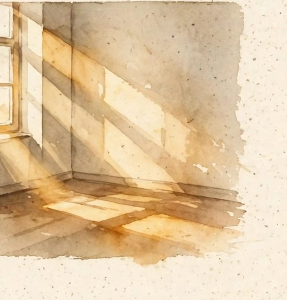
A ribbon of morning light crossing a quiet room from the window to the far wall.
A sentence, in a real conversation, is rarely the unit it appears to be on paper. It has a front porch of hesitation, a main room of statement, and a back step where the teller, if permitted, sets down the part that matters most — the qualification, the admission, the actual request. Listening to the end of the sentence means staying for all three. The common failure is to answer the main room while the teller is still walking toward the back step, and the answer, however brilliant, lands on a sentence that was never the one being sent.
The habit of finishing early has a flattering disguise: it feels like quickness of understanding, and between old friends it sometimes is. But between the disguise and the reality there is a test anyone can apply. If the teller's face shows the small flattening of someone whose cargo has been left on the dock, the sentence was not finished — it was overtaken. The house's rule, stated at the first hall and repeated here at the middle of the third, costs the listener nothing but seconds: let the sentence end, and then let it have ended for a breath, because some sentences only complete themselves in the silence that follows them, when the teller hears what they actually said.
There is a generosity in this that goes beyond accuracy. To hear a sentence to its end is to treat the teller as the authority on when they have finished meaning — to grant them the last word on their own account, literally. The ribbon of light in the Keeper's image crosses the whole room, from the window to the far wall, because the house is fond of the picture: the light does not stop where a hurried person would stop it. It travels the full width of the room, touching the far side, which is where, in most sentences worth hearing, the thing itself was standing all along.
36The Answer Is Not Always Words
The third hall ends with a mercy that new listeners often find the hardest to trust: sometimes the complete and correct response to a hearing is no words at all. Not silence as absence — the loaded silences have been warned against elsewhere in these rooms — but silence as presence: a hand left on the table, a chair not vacated, a face that stays arranged for listening after the talking has stopped. The teller who has been truly heard can feel the difference between the two silences the way a hand feels the difference between water and air, and it is not subtle.
Words after a completed hearing are often for the listener's benefit: to prove the hearing happened, to discharge the emotion it raised, to begin the gentle steering of the teller toward the listener's preferred shore. The house does not forbid them. It asks only that they be audited first, in the pause the earlier room described, and that any sentence whose real function is the listener's comfort be allowed to go unspoken. What remains — a question, a plain echo, the offer of tea — is smaller and worth more. Some of the most complete hearings in the Keeper's register are recorded with almost nothing in the response column. A mark. A date. Heard.
The cups in the image are both finished, because the hall is honest about endings too. A hearing is a visit, not a merger; the teller goes home with their life, and the listener with theirs, and the thing that was carried alone is now — not solved, not agreed with, not repaired — accompanied. It will be carried again tomorrow, perhaps by the teller alone again. But it has been held by two sets of hands, once, accurately, and that changes its weight in ways the house has stopped trying to explain and simply records, hall after hall, in a steady hand: heard plainly, and held kindly, which is the whole of the law here.
37The Listening Craft
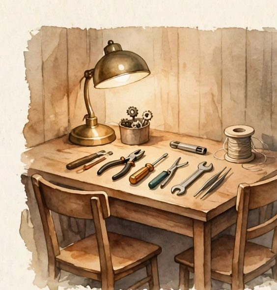
A listener's workbench with two chairs, a lamp, and small tools laid in a careful row.
The fourth hall treats listening as a craft, because the house has watched it long enough to know that it behaves like one. It has materials — time, attention, a memory for what was said last time. It has tools, plain ones: the question that opens, the echo that confirms, the pause that lets a sentence settle. It has apprenticeships, usually served without anyone naming them, at the tables of families and the desks of patient friends. And it has the craftsman's defining mark, which is that its results look effortless exactly in proportion to the practice underneath them.
To call listening a craft is to rescue it from two opposite errors. The first error makes it a gift: some are born hearing people, others not, and nothing can be done. The second makes it a trick: a set of postures and phrases that can be learned in an afternoon and performed thereafter. The house rejects both. A craft is learnable by the ungifted and unfinishable by the talented. Nobody asks whether a joiner was born to the plane. They ask whether the joints hold. The listening rooms ask the same of their practitioners, in the same plain spirit: not whether it came naturally, but whether the sentences landed.
The workbench in the Keeper's image holds small tools in a careful row, because the craft's tools are small, and the care is the visible part. There is no instrument on that bench for making people understood against their will, and none for understanding them at a distance, in bulk, or in advance. The craft works one sentence at a time, at the speed of speech, in a chair, and its masterworks are indistinguishable from ordinary evenings — which is why the world undervalues it, and why the people who have been on the receiving end of it never do.
38Attention Is the Whole Gift
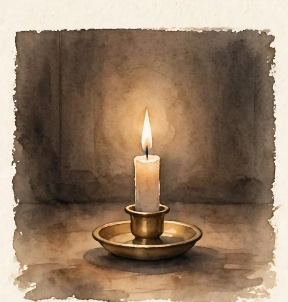
A single candle burning steady in a still room, everything else in soft shadow.
Strip listening to its working part and what remains is attention — not the performance of attention, which the polite nod has already been caught counterfeiting, but the thing itself: a mind actually resident in the sentence being spoken, following it the way an eye follows a line of print. Attention of this quality is surprisingly rare in ordinary life, because ordinary life does not require it. Most conversation runs adequately on a quarter of it, with the rest of the mind rehearsing replies, reviewing the day, or composing the message it will send later. The teller can feel the fraction. Everyone can. It is the commonest sensation in modern talk, and the loneliest.
The gift of whole attention has a value entirely out of proportion to its cost, and the disproportion is the puzzle this room sits with. It costs the giver nothing but the minutes themselves and a temporary setting-down of their own inner traffic. Yet being given it ranks, in the testimony of forty years of registers, among the strongest experiences a person can receive in a room: to be, for ten minutes, the whole of another person's regard. The candle in the Keeper's image burns with a single flame in a dark room, which is how whole attention looks from the teller's side of the table — one point of light, undivided, with everything else willingly in shadow.
The house is under no illusion that whole attention can be sustained for hours; it is a flame, not a furnace, and listeners who promise it indefinitely are promising theatre. What can be sustained is the returning: the mind caught wandering — as it will be, and should be forgiven for being — and brought back, without fuss, to the sentence. A craft is not proved by never dropping the tool. It is proved by noticing the drop quickly and picking the tool up as if the work mattered, which, in these rooms, it does. Attention returned a dozen times in one conversation is not failed attention. It is attention, practised by a person, in the only way persons can practise it.
39The Chair Turned Toward
The house's emblematic act is so small that visitors regularly walk past it looking for the machinery of the place. It is the turning of a chair: not toward the light, not toward the door, but toward the other chair, at the slight angle that says the next hour has a direction and the direction is you. Chairs in most rooms face arrangements — a fire, a screen, a view, the midpoint of nowhere in particular where furniture is usually aimed. A chair turned deliberately toward another person is a sentence before any sentence is spoken, and tellers read it instantly, the way travellers read weather.
The turning matters because attention, for all this hall's praise of it, is invisible at the moment it is most needed — the beginning. The teller at the door does not yet know whether this room will hear them; they know only what the room shows. A chair already turned, a listener already seated at the listening angle, a table already cleared of the apparatus of other business: these are the credentials of the place, presented before a word is exchanged. Houses that wonder why no one brings them anything real might examine their furniture before their philosophy. People bring their meanings where the chairs suggest meanings are received.
There is a second turning, inward and harder, that this room names for the practitioner's sake. The listener must also turn their own chair — the inner one, the seat of their regard — away from their prepared replies, their rankings of the story, their plans for the rescue, and toward the plain work of receiving. The physical turn takes a second and can be faked. The inner one takes the whole conversation and cannot. The Keeper's practice, written in the margin of the register, is to do the outer turn slowly and on purpose, as a lever for the inner one: the body seated in the posture of listening has a way of bringing the mind along, the way a coat put on for rain reconciles a person to the weather.
40Silence That Makes Room
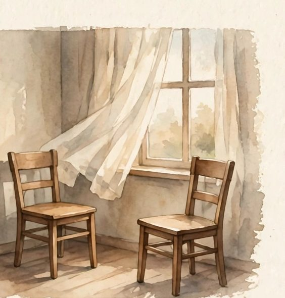
A quiet room with two chairs and a window, nothing in motion but the curtain.
Silence has been accused, in these rooms and out of them, of being listening's failure — the gap where a better person would have found the words. The fourth hall wishes to enter a correction. There is a silence that is merely the listener's absence, and the earlier rooms have dealt with it under its true names. But there is another silence, full rather than empty, which belongs to the craft itself: the silence in which a told thing is being kept, turned over, weighed by the listener at the seriousness it deserves. Tellers who have met both silences do not confuse them, and neither should anyone who hopes to practise here.
Full silence does several kinds of work at once. It tells the teller their sentence was heavy enough to require bearing, which is a form of respect no quick reply can counterfeit. It leaves the room open for the sentence that follows the first one — so often the truer one, which needs the quiet the way a shy animal needs the edge of a wood. And it gives the listener the one interval in which a genuine response, rather than a reflex, can form. A listener who cannot tolerate silence will fill it, and the filling will be theirs, not the teller's — the conversation quietly changes owners in that moment, and both people can feel the deed being signed.
The curtain in the Keeper's image moves, and nothing else does: that is the room's portrait of the thing. The stillness is not frozen. Something in it breathes. The practitioner learns the difference between holding a silence and enduring one, and learns it as all the craft's lessons are learned — by being on the receiving end of both, and remembering, in the body, which rooms they hurried to leave and which ones they still think about on the walk home, years later, with gratitude they never found the occasion to report.
41Remembering the Small Things
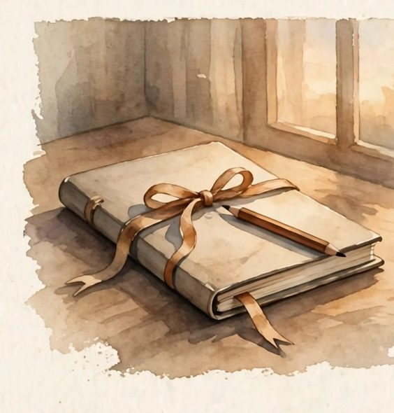
A notebook closed with a ribbon on a desk, a pencil laid across it, evening light.
A good listener's memory is not a party accomplishment. It is the quiet evidence, presented across months, that the hearings accumulated into knowledge of a person. It shows in small denominations: the name of the sister remembered without prompting, the appointment asked after on the right day, the old trouble recognised under its new description before the teller has finished explaining that it is the same one. Each instance is tiny. Together they build the sensation this whole hall is named for, because a person whose details are carried accurately by another mind does not have to re-found themselves at every meeting.
The opposite experience is so common it is rarely remarked on: the third retelling of the background, the names re-spelled, the situation re-established from the ground, for a listener who was present for all of it and retained the outline of none. The teller does not usually accuse. They simply, gradually, stop bringing the deep material to a room where it will have to be rebuilt from the foundations each time. Being forgotten in the details is a quiet form of being unheard — the hearing happened, perhaps, but it was allowed to evaporate, and evaporation over years is its own kind of verdict.
The house does not demand a prodigy's memory, and the register knows many excellent listeners whose retention is ordinary. What it asks is the craftsman's substitute for memory, which is the record: the note taken afterwards, the ribbon in the notebook, the two minutes after a conversation in which the listener sets down what mattered in it — not as surveillance, and never as currency, but as ballast for their own attention. The notebook in the Keeper's image is closed and tied, because the details it holds are not the house's business to display. They are kept the way a good innkeeper keeps the knowledge of how a returning guest takes their tea: privately, exactly, and entirely for the guest's comfort.
42Being Believed
Underneath the comfort of being understood there is a simpler comfort that this room separates out, because it is possible to be understood and still not have it. To be believed is to have one's testimony received as true — not examined, not corroborated, not held in a decent suspension — believed, the way a chair believes a sitter, by taking the weight without argument. People underestimate how rarely it happens in full, because most listening contains a small internal audit running beneath it: is this likely, is this the whole of it, is this how I would tell it. The teller can hear the audit. It has a tone, and the tone is unmistakable, and whole accounts are quietly shortened in response to it.
Disbelief does not need to be spoken to do its work; the raised pace of the questions does it, and the request for the story a second time with the names, and the particular brightness of oh, really, which is the sound of a door being tested rather than opened. The house does not deny that some accounts should be examined — courts and ledgers exist, and this hall has never confused itself with either. But in the listening rooms, the default is a discipline: belief first, as the posture of reception, with examination a separate and later act, honestly announced when it comes. A teller believed first and questioned second will answer the questions. A teller questioned first will often simply not return with the rest of the account.
The Keeper's register records a detail the house has verified across decades: people almost never use belief to smuggle in a falsehood in these rooms. They use it to set down a weight they could not set down anywhere else, frequently a weight whose whole burden was that it sounded unlikely — the unlikely grief, the unlikely fear, the unlikely joy. The door in the image opens inward, by a hand the picture does not show, because that is how belief feels from the teller's side: the way made plain before the full account has even been given, by someone who decided in advance that the person entering was probably telling the truth.
43The Face That Does Not Flinch
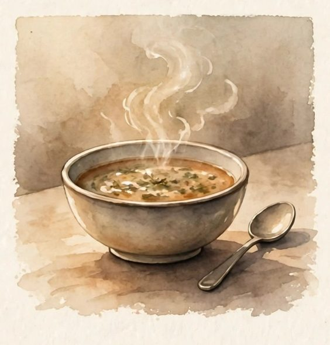
A bowl of soup set down gently on a table, steam rising, a spoon resting beside it.
Every listener brings a face to the chair, and the face reports the hearing before any words do. This room concerns one expression in particular, because so many tellers are watching for it: the flinch. The flinch is the listener's involuntary verdict — a tightening at the difficult detail, a wince at the confession, a small recoil from the part of the story that is ugly, or frightened, or ashamed of itself. The teller, who has been steering toward that part for ten minutes, sees the flinch arrive exactly on schedule, and steers away. The story completes itself in its edited form. Both people call it a good talk.
The discipline of the unflinching face is not a discipline of falseness. The house does not teach its listeners to arrange their features like actors; a performed serenity is only the polite nod moved upward. It teaches the slower thing underneath: a listener whose inner room is genuinely in order — who has made their own peace with the fact that people contain the things people contain — will not need to manage their expression, because there will be less to manage. The flinch is a report from the listener's own unheard material as much as from the teller's. What we cannot hear in ourselves, we cannot hear in company, and the recoil gives us away at the exact point where our own account was never received.
For the practitioner, the Keeper's counsel is unglamorous. When the flinch comes — and it comes to every honest listener — let it be a piece of information rather than a command. Notice it, privately. Continue listening with the face the moment can honestly supply, which may not be serene but can at least be steady, and let the teller see steadiness rather than either shock or its counterfeit. The soup in the image is being set down gently, at an ordinary table, in an ordinary hour. That is the register this room aims at: nothing in the story, however strong its seasoning, treated as more than the table can hold.
44Rest for the Listener
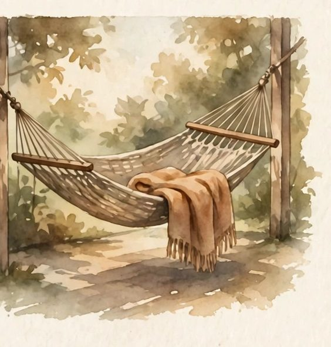
A hammock strung between two posts in shade, a folded shawl left resting on it.
Listening, done at the depth these rooms describe, is work, and work of a kind that leaves the worker tired in a specific way — not in the hands, but in the faculty that was lent. A person who has heard three heavy accounts in a day has spent something real, and the house, which asks so much of its listeners, is careful to say so plainly. Attention is not an infinite well that selfishness alone depletes. It is a muscle with a day's strength in it, and the listener who denies the tiredness will pay for the denial in the coin of their next hearing: the nod will come out, the flinch will go unmanaged, the echo will be wrong in the direction of haste.
Rest for the listener is therefore part of the craft and not an indulgence after it. It belongs in the register beside the hearings themselves: the walk taken, the hour of unlistened quiet, the evening on which the chair is turned, deliberately and without apology, to the wall. The Keeper keeps such hours in the open, because listeners who hide their rest teach their houses that listening must be inexhaustible to be respectable — and houses taught that lesson soon have no listeners at all, only performers of listening, growing hollower by the month.
There is a practical corollary for the tellers, and the hall sets it down with care. A listener's tiredness is not a rejection, and the teller who can hear I am too tired tonight to hear you well as an act of respect — which is exactly what it is, from a practitioner — has understood something deep about this house. The hammock in the image rests between its posts in the shade, unoccupied, unhidden, part of the furniture of a working place. The chairs will be turned back in the morning. Listening that is rested returns; listening that is merely inexhaustible eventually does not, and the difference is the whole of this room.
45What Listening Asks of the Listener
It is fair to ask what the craft asks of its practitioner, beyond the chair and the patience, and this room answers without varnish. It asks the listener to surrender the story. Not the teller's story — their own: the parallel account that rises, unbidden and fully furnished, at every hearing. The similar grief, the better anecdote, the lesson learned in the listener's own harder school. These arrivals are not wickedness; they are the mind's way of reaching for company to offer. But left ungoverned they colonise the room, and the teller finds, ten minutes in, that they are now the audience — a promotion nobody applied for, at the exact hour they arrived to be heard.
It asks, second, for the surrender of the verdict. A listener at work is continuously supplied with judgements — of the teller's choices, of the absent third parties, of how the matter should have been handled — and the craft does not require these to be suppressed, which would only drive them into the face and the tone. It requires them to be postponed, honestly and entirely, until after the hearing is complete; a verdict postponed is often a verdict transformed, because the completed account rarely supports the judgement its first third invited. Many a listener has been saved by the pause from despising a person they would, twenty minutes later, have defended.
And it asks, third and hardest, for the surrender of being needed in a particular way. The listener who requires the teller to leave comforted, grateful, improved — the listener whose self-regard is riding on the outcome — will begin, gently and unconsciously, to steer. The hand in the Keeper's image lies open on the table, palm up, holding nothing: not the remedy, not the verdict, not the teller. That emptiness is the craft's whole price, stated in one picture. The listener brings the chair, the lamp, the time, and the attention. Everything else in the room belongs to the person who came to be heard.
The Listening Desk
One desk receives all correspondence for this house — questions, corrections, and word of any sentence a visitor has been carrying unheard for a long while: the thing said three times that never landed, the account that always comes out wrong, the listener they are hoping to find. It is read in the order it arrives, and entered in the register of listening.
46Listening Across the Years
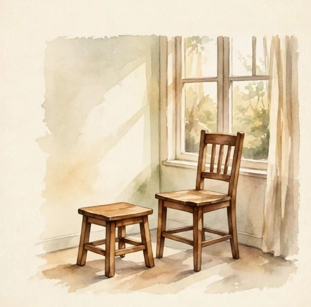
A low stool set beside a tall chair, both turned toward the same window.
There are hearings that run against the grain of rank, and this room keeps them because they are where the craft is most often lost. The old are heard by the young in summaries. The young are heard by the old in drafts — the child's account treated as a preliminary version of a person's, to be corrected at the joints. The person low in a household or an office is heard in bulletins, if the house is honest about it: granted the time for facts, rarely the time for freight. Each arrangement has the same shape. Somebody's sentences are being assigned a shorter length in advance, on the basis of who is speaking, and the speakers — who are not fools — learn the assigned length and speak to it.
Listening across the years begins by refusing the assignment. The child's account of the schoolyard feud is, to the child, the whole of the known world's politics, and the listener who hears it at that scale — asking the opening questions, saying it back, believing the first telling — is not indulging a small person. They are practising on the only terms the craft recognises: that the measure of a story is its weight to its teller. The same holds upward. The old person's third telling of the old story is not a malfunction of memory. It is freight being carried in the only vehicle left, and it deserves a listener who has not confused repetition with emptiness.
The stool beside the tall chair in the Keeper's image is the room's whole argument in furniture. The stools of the world are sat on by people whose accounts are presumed minor, and the chairs by people whose accounts are presumed major, and the presumption is wrong in both directions so regularly that the house has stopped keeping score. What it keeps, instead, is a register without ranks: hearings entered in the order they arrived, the schoolyard and the boardroom in the same hand, at the same length, because attention — the craft's one material — does not recognise the difference, even when everyone else in the building does.
47The Listener Is Not a Judge
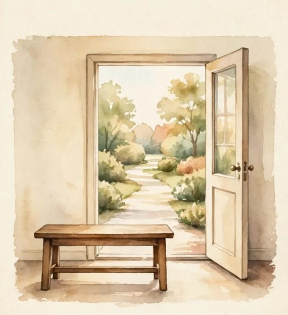
A plain wooden bench before an open door, nothing on it, the path beyond clear.
The listener is not a judge, and the room insists on the point because the two chairs look so similar from a distance. Both sit still. Both hear the account in full. Both are quiet at the places where quiet falls. But the judge's silence is an instrument of assessment — the account is being measured against a finding — and the teller can feel the measurement the way a hand feels a draught. The listener's silence is an instrument of keeping. Nothing is being decided about the teller in it. That is the entire difference, and it is not a small one; it is, in the testimony of the registers, frequently the difference between a person who continues and a person who finds another subject.
It follows that the listener must genuinely postpone the finding, which the earlier rooms have asked, but this room asks something further and less comfortable: the listener must also surrender the appearance of the finding, including to themselves. It is possible to postpone a verdict aloud while delivering it continuously in the eyebrows. It is possible to say nothing final and radiate finality. Tellers read radiation more reliably than words, which is why the craft locates the work where it does — not in the management of the performance, but in the actual deferral of the trial, inwardly, until the hearing is done and the person has been met whole, at least once, unmeasured.
The bench in the Keeper's image stands before an open door with nothing on it, and that emptiness is the room's portrait of the listener's mind at its best: a place to sit, in the open air of the account, with no apparatus set out. Findings have their buildings — the world is full of them, and the house sends people to them respectfully when a finding is what is needed. But a person carrying a meaning alone is not looking for a bench with a gavel on it. They are looking for a seat in a room where the account can be set down for one hour without being decided, and the listener who can keep such a bench has learned the craft's most respectable secret: that being heard and being judged are opposites wearing similar coats.
48The Register, Read Back
The fourth hall closes at the desk, with the register opened and read back — the house's picture of what listening finally makes possible between people. A register read back is a life reviewed in company: the hearings entered in order, the amended entries struck through gently and still legible, the whole account owned by the teller and witnessed by the listener who kept the book. Few experiences are as settling. To hear one's own history returned, accurately, in another's keeping — the names right, the weights right, the sequence undisputed — is to be understood in the past tense, which is where most of the human need for it actually lives.
The reading back is not a ceremony the house performs often, and it is never performed uninvited. Some registers are opened once in a decade, at a parting, or at a reconciliation, or when a teller finally asks the question that has been underneath all the others: what have you understood of me, all this time. The listener's answer to that question is the craft's examination, and it is passed not by eloquence but by the record — by the accumulated accuracy of a hundred ordinary hearings, any one of which might have been nodded through and was not.
For most visitors, the register stays closed, and the hall is content with that. Its existence is the point: the knowledge, carried quietly by both people, that the hearings have been kept — that nothing said in the room evaporated, that the account exists somewhere in a fair hand. People speak differently into a kept record than into the air. They speak more truly, for one thing, because accuracy is being met with accuracy. The lamp in the image burns above the open pages, and the entries are calm and even, and the house's whole fourth hall can be summarised from the picture: listening is a craft, its tools are small, and its product is this — a life that does not have to be carried unrecorded, by one person, from memory, alone.
49Two Chairs
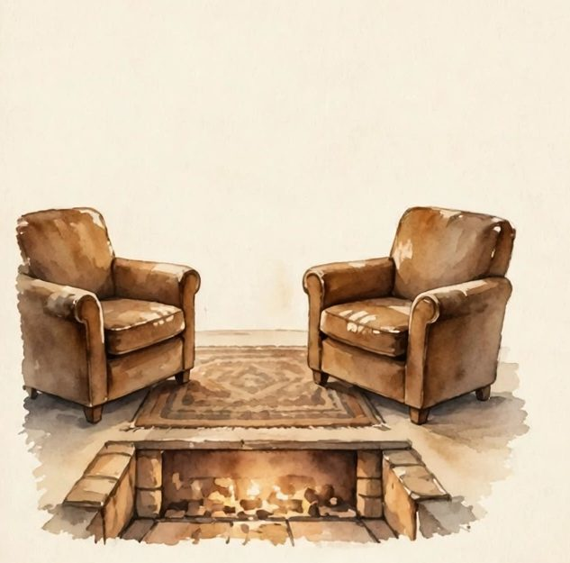
Two worn armchairs facing each other across a small hearth, a rug between them.
The fifth hall leaves the craft and enters the company it makes possible. Its emblem is the plainest object in the house: two chairs, worn, facing each other across a small hearth, their cushions bearing the shapes of the same two sitters across years. Everything in the hall is an unpacking of that picture — of what accumulates between two people when one of them, and then the other, and then both by turns, have been heard in that arrangement often enough that the arrangement itself becomes a kind of knowledge. The hall's claim is brief. Long understanding is not a mystery. It is short understanding, repeated past the point where counting stops.
Two chairs are a technology, though no one would patent them. They set a distance — near enough for the quiet voice, far enough for dignity. They enforce a duration: a person does not sit opposite another in a turned chair for a thirty-second exchange, and both parties know it when they sit down. Above all, they make listening the default posture of the room, so that the understanding which elsewhere must be specially summoned, against the grain of the furniture, here simply accumulates from evenings whose only agenda was the two chairs and whatever the day had left in them.
The house is careful, entering this hall, not to make a romance of it. Two chairs are as available to a friendship of a year as to a marriage of forty, and some of the deepest entries in the register belong to pairs nobody would call anything but friends, neighbours, colleagues of the long shift. What the chairs ask is not a status. It is a practice, renewed at whatever frequency the two lives allow, and protected — this will be said more than once in the rooms ahead — from the two great solvents of understanding between people: hurry, and the assumption that it is already finished.
50A Chair Kept for One Person
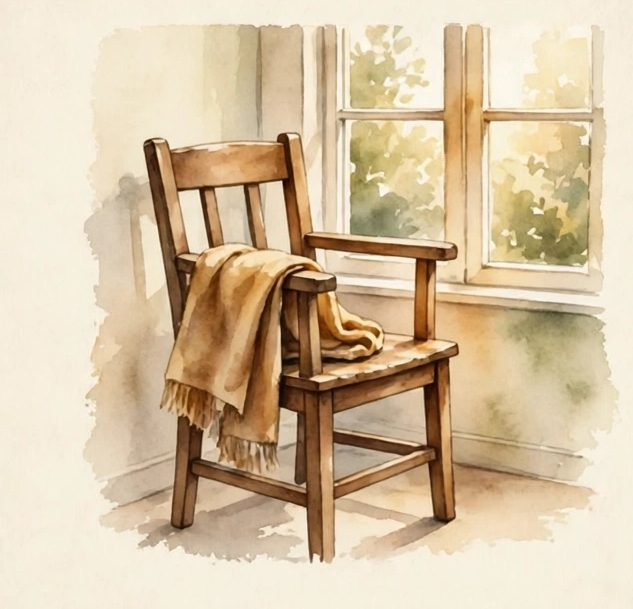
A chair by a window with a folded shawl over its arm, kept in the day's best light.
In the houses this hall most admires, there is a chair that is understood, without signage or ceremony, to belong to a particular person — not by ownership, exactly, but by tenancy of long standing. It is the chair they are expected in. Its cushion has taken their shape the way a path takes the shape of a walker's habits, and the room is arranged, more than anyone decides, around the expectation of their arrival in it. To keep a chair for a person in this sense is a quiet and complete statement: your presence here is not an interruption of the arrangement. You are part of the arrangement. The house is built expecting you.
The kept chair is the physical form of a kind of understanding that words arrive too late to create. A person who has a chair kept for them does not have to re-apply for a hearing at each visit. The background is already known, the kettle already calibrated, the old stories already filed under their true names. They can begin, as the deepest conversations always begin, in the middle: you know the field I mentioned. The kept chair is what makes beginning in the middle possible, and beginning in the middle is where nearly all of the important sentences in a life get said, because the important sentences almost never come with their introductions attached.
To keep such a chair costs little and commits much, which is the usual arithmetic of the things in this house that matter. It commits the keeper to the person's continuance — to believing there will be a next visit, and a subject after this subject. The Keeper's rule for the practice is one line long, and it is written where the hall's staff will pass it daily. Keep the chair before you need it, in the light, with the shawl folded over its arm. A chair got ready after the knock at the door is hospitality. A chair kept ready in the person's absence is understanding, already furnished.
51The Conversation That Resumes Itself
Old acquaintances share a gift that strangers mistake for a small supernatural power: their conversations resume themselves. A sentence begins in a kitchen in March and completes itself, unforced, on a road in October, with neither party experiencing the interval as an interruption. Nothing needs to be recapped beyond recognition — you remember the matter of the bridge — and the talk continues at depth from the first exchange, the way divers who know a wreck do not spend their air re-finding it. The house regards this as one of the chief dividends of being understood over time: the background, jointly held, pays for depth instead of being charged for rent.
The resumption is possible because the understanding between such people is stored, not re-performed. Each holds the other's account in its latest amended form, corrections and all, and trusts the holding. This trust is why a single sentence can do the work of an hour between them, and also why a misunderstanding, when it finally comes, lands with such bewildering force — it is discovered that the stored version has diverged, sometimes for years, on some matter never re-opened because both believed it settled. The hall's counsel for even the oldest chairs is the clerk's counsel: reconcile the ledger aloud, now and then, on a quiet evening, without waiting for the error to announce itself expensively.
The two books in the Keeper's image lie open at the same page, which is the room's picture of the condition — and the image is careful, because the books are two, not one. Resumption is not sameness. The two readers have read the same long text and underlined different lines, and the conversation that resumes is richer for the difference, since each can show the other a passage the other's eyes slid over. Understanding, kept long enough between two people, stops being merely reception. It becomes a shared library, with two sets of marginalia, and the evenings spent comparing the notes are among the best the house has ever registered.
52Pouring Tea and Waiting
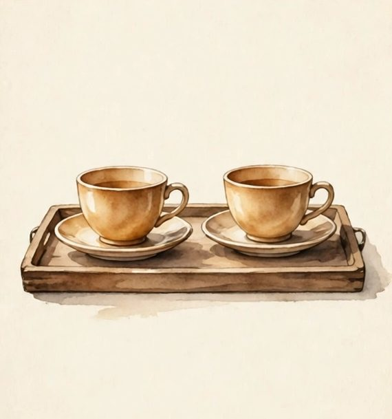
Two teacups with their saucers swapped, an old comfortable joke, on one tray.
Some of the deepest listening in the world is done over tea that is going cold, and this room is the hall's deliberate homage to the fact. Pouring tea — or whatever the house's version of tea may be — is the listener's way of declaring a duration. The cup says: we are not snatching this. The pot says: there is more where this came from, at the same unhurried terms. And the waiting, while the teller takes the story at the pace the story insists on, is not dead time in such a room. It is the medium the hearing travels in, the way water is the medium a boat travels in, invisible until it is absent.
The ritual carries practical wisdom under its comfort. A teller whose hands are occupied with a cup has somewhere for the restlessness of a hard account to go. A pause that would gape in an empty room is filled, without being closed, by the small ceremonies of pouring and drinking. And the listener, whose own hands are busy with the pot, is protected from the two temptations of the idle-handed: the reach for the remedy, and the reach for the door. The house has formal rules elsewhere for both of those. Tea is the rule's domestic form, and it has probably saved more hearings than the rules have.
The swapped saucers in the Keeper's image are the detail the house loves best in its own picture, because they are a mistake that has survived. Between two people who have taken tea across enough years, the small errors stop being corrected and start being kept — the cup that is always set at the wrong place, the name always first mispronounced and then, deliberately and forever, pronounced that way between them. These are the private coinage of a long understanding, worthless everywhere else and legal tender here. A stranger watching would see clumsiness. The register sees two people rich enough in each other's company to afford a currency of their own.
53The Friend Who Knows the Back Story
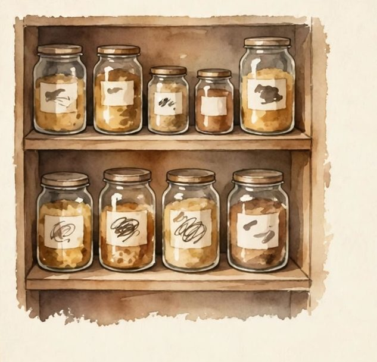
A shelf of labelled jars in a pantry, each in a fair hand, none of them readable.
Every long understanding has an archivist, whether the pair acknowledge the office or not: the friend who knows the back story. Not the outline of it — the load-bearing details. Which year the trouble was. What the father's actual words were. Why the bridge is never mentioned and why the town is always mentioned twice. To be the holder of another person's back story is to be entrusted with the part of their account they cannot keep re-explaining, and the relief of such a friend's company is measurable in sentences: whole hours of preliminaries fall away, and the talk begins already inside the subject, like a house entered through a door only the two of them use.
The back story is what misunderstandings most often mangle, and what strangers can least be blamed for missing. The sharp sentence that sounds like character is, with the back story restored, an anniversary reaction. The silence that looks like indifference is a anniversary too. The friend who knows does not misread these, not because they are gifted, but because they were present for the filing. The house insists on the distinction because it is hopeful: back stories can be given. Slowly, in pieces, across the years, a newer friend can be brought into the archive — and the giving of it, in both directions, is how two chairs get their wear.
The labelled jars in the Keeper's image stand for the stored account, each marked in a fair hand, and the labels cannot be read in the picture, which is exactly right. A back story is not gossip, and its keeper does not deal it out to third parties, even in kindness, even in summary. The pantry is private. What the keeper may offer the world is only the conduct the knowledge produces: the unexplained patience at the sharp sentence, the refusal to join in the easy reading. People watching sometimes call it loyalty, and it is loyalty's cousin. Its proper name, in the register of this hall, is understanding that has been given its history and keeps it under seal.
54Known in the Small Details
There is a level of being understood that lives below conversation altogether, in the arrangements. It is knowing how the person takes the morning, which subjects are not opened before food, the exact degree of talk that constitutes company rather than intrusion at the start of their day. It is the right things in their known places, laid out by a hand that has attended long enough to stop asking. People whose understanding is all verbal sometimes dismiss this stratum as habit. The house, which has taken evidence for decades, reports the opposite: the arrangements are the understanding, written in the only language that cannot be counterfeited — repeated, unobserved, unthanked.
The small details carry a particular weight because they are where a person is most themselves and least defended. Anyone can attend to the stated preferences; they are published. The details that matter are the unpublished ones: the cup that must be the thick one, the news that must be given second rather than first, the silence after the joke that is not offence but the person's way of keeping it. To be known at this level is to be spared a hundred tiny daily negotiations that other houses charge as the price of company. The accumulated saving is enormous, and it is paid out as rest — the specific restfulness of being somewhere one does not have to explain one's edges.
The hall enters one caution here, gently, because the stratum has a failure mode. Details are a living record, and people change under their arrangements like rivers under bridges. The knower who stops updating — who serves the tea of ten years ago to the person of today, and calls the mismatch the person's ingratitude — has let the archive become the person. The cure is the same curiosity that built the knowledge in the first place, refreshed deliberately. Ask again. Notice anew. The breakfast in the Keeper's image is set correctly, but the house's whole point is that the correctness is re-earned daily, by attention, and never merely inherited.
55Understanding That Took Years
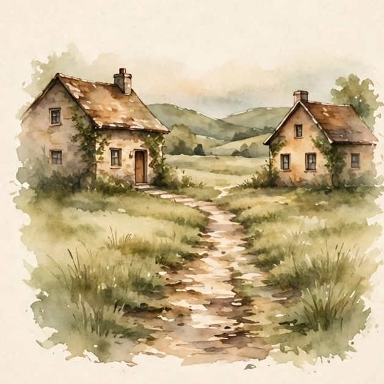
A path worn between two houses across a field, grass kept down by years of walking.
Understanding between two people is sometimes spoken of as a discovery — a moment when the veil lifts — and the house permits itself a dry correction. Between most people it is not discovered. It is accumulated, at the rate of one corrected misunderstanding at a time, across years of ordinary weather. It looks, from inside any given month, like nothing is happening. It looks, from the vantage of a decade, like a country has been built. This room is the hall's tribute to the slow arithmetic, written for the people in the middle of the accumulation who cannot yet see the sum and are tempted to call the daily small change nothing.
The rate is set by a factor nobody controls: the frequency with which the two people are willing to be corrected about each other. Each correction accepted without defence — the echo amended, the back story filed, the detail updated — is a coin. Each correction refused is a small tax on all future ones, because the refuser has announced that their version is load-bearing and the teller should stop bringing amendments. The houses with the deepest understanding are not the ones with the fewest misunderstandings. They are the ones where the amendments kept being accepted longest, past embarrassment, past the third telling, past the point where pride usually files its objection.
The path in the Keeper's image was not designed; it was walked into existence, one crossing at a time, by feet that kept choosing the same destination. The house knows of no other way the path gets made. There is no machinery for it and no ceremony for it and — this is the hopeful part — no talent for it either, beyond the willingness to keep crossing in ordinary weather, with the amendments, in both directions, for years. Understanding that took years is not slow understanding. It is the only kind there is, and the people who have it were never doing anything more dramatic than refusing, daily and quietly, to stop.
56Asking, and Being Asked
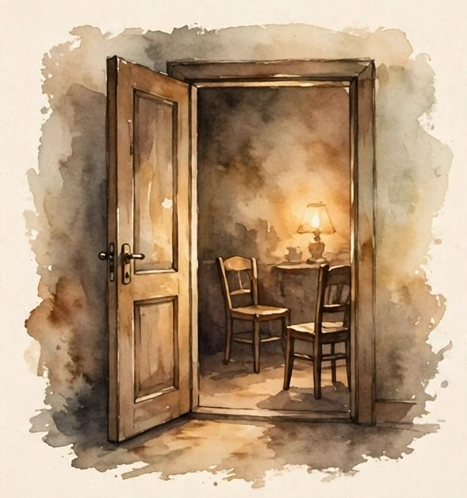
An open door with two chairs and lamplight visible beyond it, an invitation.
Most rooms in this hall are written from the listener's side of the table, and this one is posted to balance the account. To be understood over years, a person must also ask the questions — the ones that open rather than corner, aimed at the person across the chairs. Asking is the teller's craft, and it is rarer than listening, because being the one who is known feels so much safer than doing the knowing. Yet a house where the questions run in only one direction slowly becomes an interview, and interviews do not wear cushions into the shapes the fifth hall is named for.
The reciprocal asking has a delicacy of its own. It is not the trading of equal confessions on a schedule, which is bookkeeping dressed as intimacy, and both people can feel the ledger being kept. It is the genuine direction of curiosity toward the other person's account — including, and especially, the parts of it that the years have rendered invisible by familiarity. The old friend's work, the spouse's private fear, the neighbour's long-deferred plan: these are the countries that long acquaintance stops visiting, precisely because both parties assume the map is finished. The question re-opens the border. Whole evenings in the register are just that: one question, asked across a decade, and the country pouring out.
There is also this, which the hall wishes recorded plainly for the person who fears they always occupy the teller's chair. Being asked — truly asked, by someone with the patience to hear the whole of it — is how most people discover what they think. An account exists in one form in the keeping of its owner, often no more than a weather. Under a good question it takes its second form, spoken, and the speaker meets it almost as a listener would. Asking and being asked are not the tax and the revenue of understanding. They are the same motion, done in turns, and the chairs wear evenly only when both people take both seats, across the years, as a matter of course.
57The Story Told Whole at Last
In the life of every long understanding there is a story that took years to arrive — not because it was hidden in shame, exactly, but because it needed a room strong enough to hold it, and rooms are built at the speed of furniture. The teller carried its outline the whole time. It came up in abbreviations, in deflections, in the joke that stood where the fact should be. And then one evening, in the two chairs, with the back story fully filed and the listener's face proven steady across a hundred lesser accounts, the story was told whole at last, beginning to end, in its own words and at its own length.
What happens in such an evening is the fifth hall's whole reason for existing, and the register describes it with unusual restraint, because it does not improve under decoration. The telling takes the time it takes. The listener does the small things the craft consists of — the echo, the pause, the one question that opens — and otherwise keeps out of the story's road. At the end there is rarely a verdict or an embrace or any of the furniture of drama. There is the particular quiet of a room where something heavy has finally been set down in company, and the discovery, which both people make separately, that the friendship is not altered in the ways the teller feared. It is altered in one way: it is bigger, having now a room in it that neither had seen.
The pages in the Keeper's image are spread across the table to dry, because a story told whole is not finished the moment it is spoken. It settles. It is returned to, in later evenings, in fragments, with amendments, with the laughter that becomes possible only after the weight has been witnessed once in earnest. The house counsels patience with this stage especially. The teller will seem to circle back. They are not going backward. They are walking around the new room, learning its dimensions, finding that it holds — and the listener who can accompany the circling without once saying we have covered this has understood the deepest thing the fifth hall knows: that being understood, like being housed, is something a person moves into gradually, one room per season, at their own pace and no one else's.
58Do Not Finish Every Sentence
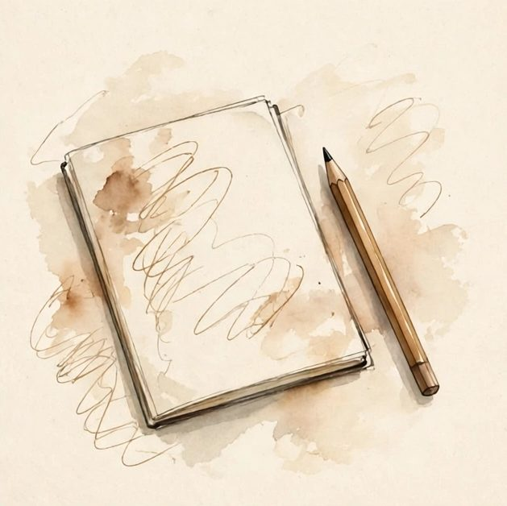
A pencil laid down beside an open notebook, the sentence on the page unfinished.
The sentence-finishing gift, celebrated earlier in this house, has a discipline attached to it, and the fifth hall is the right place to state it. The friend who can finish your sentences must usually not. The power, used freely, stops being a certificate of attention and becomes a tax on the telling: the teller learns that only the first half of any thought is required of them, that their own pace and their own route to the point are surplus, that the listener's version — quicker, cleverer, filed sooner — will be standing at the end of every sentence like a driver with the engine running. People go quiet under such brilliance, in a way that is easily mistaken for contentment.
What the teller loses is not merely airtime. A sentence is how a thought finds out what it is. The second half of a sentence is very often not the completion of the first half but its correction — the place where the speaker, hearing themselves, adjusts the claim toward the truth. The listener who finishes early steals exactly that adjustment, and receives, forever, the uncorrected edition of the person. Then, in the saddest version, they complain that the person never says anything new. The edition they are reading is the one their finishing made.
The restraint the house teaches is a friendly one, and the register phrases it as a rule of the house's hospitality. Finish in the heart; let them finish in the mouth. Keep the completed sentence as a private confirmation — the pleasure of it is real, and it is the interest on years of attention — and spend it only rarely, when the teller is searching and the word is genuinely the one they are reaching for, offered the way one offers a hand at a stile rather than a lift over it. The notebook in the Keeper's image lies open with its sentence unfinished, and the pencil is down, because some pages are not ours to complete — and the leaving of them incomplete is itself a sentence, in the register's hand, about respect.
59Known Without Performing
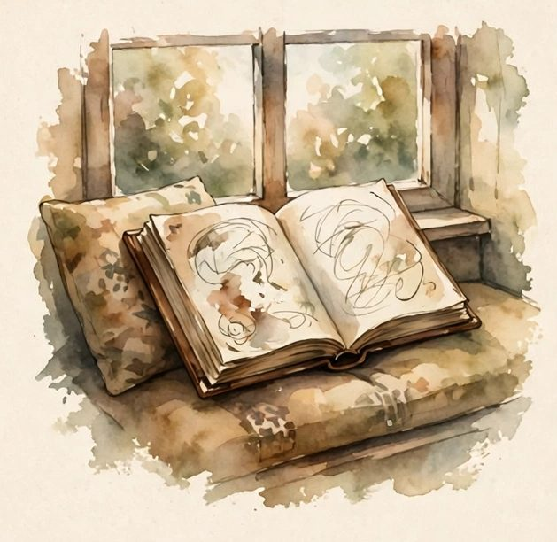
An old story-book left open at a familiar page on a window seat.
There is a stage in a long understanding that outsiders misread as dullness, and the hall enters this room in its defence. It is the stage at which the two people no longer perform: the teller does not package the news, heighten the story, or rehearse the effect, because the audience of one has seen the workings and prefers them. The talk gets plainer. The silences get longer and less apologised for. Whole evenings pass at a pitch that would look, on a chart, like nothing happening, and are remembered by both parties as among the best of their lives. The house's word for this is not dullness. It is rest — the specific rest of being where no impression is being managed.
Performing is the tax a person pays for being only partially known: the continuous, low-grade labour of editing the account for an audience whose knowledge has gaps. The labour is so constant, in most company, that its absence is first felt physically, the way a carried weight is felt on being set down. This is why the old friend's house is restful out of proportion to its furniture, and why people describe certain company as easy without ever identifying the mechanism. The mechanism is understanding. Where the account does not need to be performed, it can simply be lived, in the presence of a witness, which is the condition this entire hall exists to describe.
The familiar page in the Keeper's image is open at the place where the book falls open by itself, because the spine has learned it. The house likes the metaphor too much to apologise for it. Two people known to each other at this depth have favourite pages in each other — the story that is requested, the subject that is rested in, the old sentence whose arrival in the talk is greeted like a landmark on a known road. Strangers find such repetition tedious. The house finds it liturgical, in the plain sense: the same words, said again, doing the same work, in a room where nobody needs them to be new to be true.
60What Two Chairs Are For
The fifth hall closes by answering its own title plainly, the way the Keeper requires each hall to do before its lamps are trimmed. What are two chairs for. They are for the accumulation, sentence by sentence, of the one experience no person can give themselves: the experience of existing, accurately, in a second mind — with the back story filed, the details kept current, the freight believed at first telling, and the whole account resumable at any evening's notice without preamble. Everything else these rooms have described — comfort, rest, the told-whole story — is a consequence of that one arrangement, kept.
They are also, the hall insists on adding, for the listener. A person who has kept a chair for another across years does not merely dispense understanding; they live in a world one person wider. They hold a second history in working order, a second set of names and weights and weather, and their own account is the richer and the truer for the tenancy. The register is emphatic that the keepers of the best chairs are not the selfless. They are the well-furnished — people whose inner house has more than one occupied room, and who would no more give up the tenancy than sell the view. Understanding, pursued long enough, stops being a service performed and becomes a way of being accompanied through one's own life.
The blanket over the rail in the Keeper's image is folded for the evening that has ended or the one that is coming; the picture declines to say, and the hall declines with it. Two chairs are not a conclusion. They are an arrangement for continuing — for the next sentence, whichever of the two speaks it, in whatever weather it arrives. The lamps of the fifth hall are trimmed, the fifth register closed, and the house moves on to the harder courtesy: understanding offered to people who have not yet any claim on our chairs, which is where the comfort stops being an inheritance and becomes a practice of the open hand.
The Listening Desk
One desk receives all correspondence for this house — questions, corrections, and word of any sentence a visitor has been carrying unheard for a long while: the thing said three times that never landed, the account that always comes out wrong, the listener they are hoping to find. It is read in the order it arrives, and entered in the register of listening.
61Understanding Offered
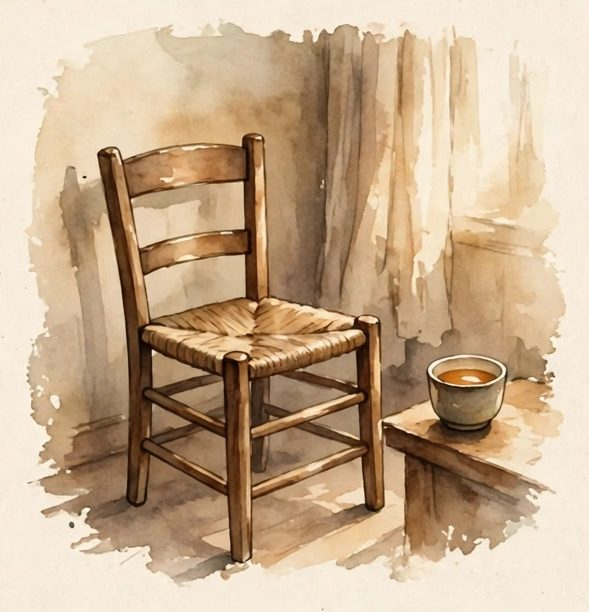
A room arranged for a guest, a chair turned outward in welcome, a cup set ready.
The sixth hall turns the house's attention outward, to the people with whom we do not yet have two chairs: the colleague of a month, the neighbour of a season, the stranger across a single conversation. Understanding offered to such people is a different act from understanding between old friends. It cannot draw on a back story, because there is none. It cannot finish sentences. What it can do is offer, on credit and without security, the same articles the old chairs run on: the full hearing, the first belief, the unhurried face, the sentence allowed its whole length. The house calls this the open hand of the practice, and it is where the comfort proves whether it is a principle or merely a comfort of home.
The offer matters more than its size suggests, because most people meet the world as tellers without a chair. The clerk, the driver, the official behind the glass — each is approached daily by people who want something processed, and each carries a private experience of how rarely the traffic reverses. To be heard, accurately and at length, by someone who owes them nothing and will gain nothing, lands on most people with a force out of all proportion to the minutes spent. They remember it for years. The register is full of such reports, and they share a detail: the listener is always described as if the act had been large, when by every account it was only complete.
The room arranged for a guest in the Keeper's image has its chair turned outward, toward the door, which is the posture of this hall. The turning costs the turner nothing they were using. It announces, before the guest has spoken a word, that reception is the house's default rather than its favour. The rooms ahead will take up the offer's difficult cases — anger, grief, quarrels, apologies — but the hall begins here, with the simple furniture of it: a chair, a cup, an unhurried hour, offered outside the circle of those who have earned them, because that is the only direction in which the circle has ever grown.
62Saying It Plainly to a Person
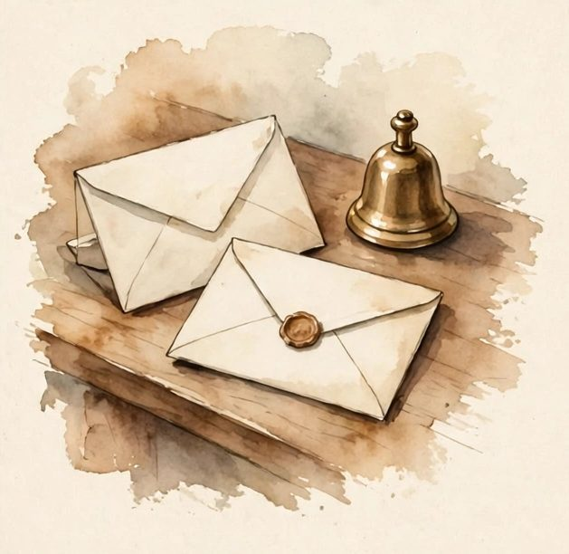
A letter and its envelope on a wooden counter, a small bell beside them.
Understanding begins, when it is offered to a person, with the same plainness it asks of tellers: saying things in a way that can be received. This room concerns the speaker who wishes to be understood by others and is willing to do the speaker's share of the work. That share is larger than pride prefers. It includes choosing the hour when the listener can listen, the room where the sentence can land, and the order in which the account is given — conclusion where the listener needs conclusion first, reasons where they need reasons. Plainness is not a style here. It is a form of respect for the listener's side of the road, and most failed understandings have neglected it unilaterally and blamed the road.
There is a particular discipline in speaking to be understood rather than speaking to be recorded. The recorded speaker aims at the perfect sentence — complete, defended, impossible to misquote — and produces something with the warmth of a legal instrument. The understanding speaker aims at the received sentence, and accepts its costs: imprecision admitted aloud, the order adjusted mid-course at the sight of a listener's face, the willingness to say the thing a second way when the first way visibly failed to arrive. Such speakers are sometimes accused of softness by the record-minded. The register's verdict is otherwise. Their meanings actually land, which is the only test this house applies to speech.
The bell on the counter in the Keeper's image is rung once, and the room honours the economy of the gesture. Say it plainly, to the person, at a workable hour, in words sized to the listener's knowledge — and then, the harder half, attend to what arrived rather than what was sent. The speaker who checks the arrival, kindly and without pedantry, is doing the listener's job from the other chair, and houses where both people do both jobs are the houses the sixth hall was built to multiply. Plainness, in this house's book, is not the opposite of depth. It is depth that has finished dressing and come down to breakfast.
63A Room Ready to Listen
Some rooms exist in the world before they exist in houses: the bench in the corridor where the news is given, the kitchen chair pulled out in a workplace, the edge of the bed in a hospital ward. A room ready to listen is less an architecture than an agreement, kept in whatever furniture is at hand, that here — for this stretch of time, between these people — a sentence may take its full length and be received at its full weight. The agreement can be established in under a minute, by anyone, anywhere, and the house counts that fact among the hopeful ones it knows.
What makes such a room is not quiet, though quiet helps, and not privacy, though privacy helps more. It is the listener's visible settling: the phone put face down and left, the task closed, the body turned. These are the same credentials the turned chair presents in the house's own rooms, translated for travel. Their power lies in their legibility. A stranger can read them without instruction, the way a traveller reads the sign of an inn, and what they say is exact: your account will not be competing with anything here. It has the room. Sentences decide, on the strength of that sign, whether to come in their travelling clothes or their true ones, and the decision is taken before the first of them is spoken.
The jug of water beside the bench in the Keeper's image is the room's whole furnishing list, and the hall is glad of its poverty. A room ready to listen requires a seat, something to drink, and a person who has settled. Everything else — the right building, the right training, the right words — is furnishing added later, by people who first succeeded with the minimum and then, understandably, built around the success. The house does not mock the building. It only keeps the bench in its own corridor, set against the wall, ready, as a reminder of what the building is for.
64Anger Heard Without Harm
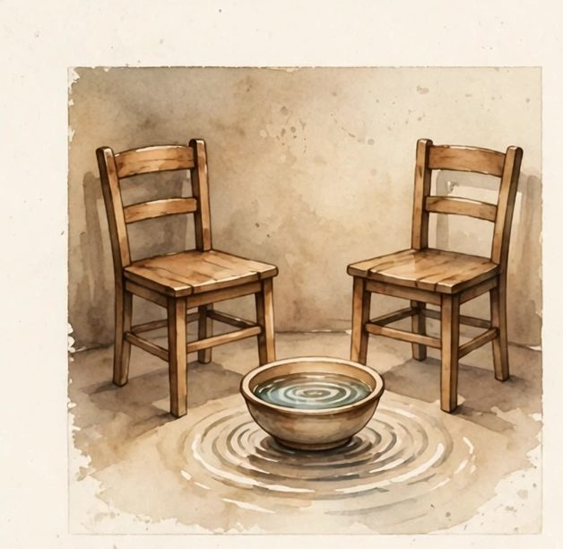
Two chairs with a bowl of water resting on the floor between them, ripples settling.
To offer understanding to an angry person is the sixth hall's first difficult case, because the offer must be made across the very weather that makes listeners withdraw. The angry person's sentences arrive hot, and frequently arrive unfair — aimed at whoever is present rather than whoever is meant, swollen past their evidence, stated as verdicts. The listener's every instinct says to wait until the account is reasonable before receiving it. The house's experience is blunt on this point: an account that must become reasonable before it may be heard will usually become secret instead. Anger unheard does not moderate. It archives itself, and the archive is produced at the next occasion, with interest.
The offer, then, is made to the unfair sentence too — not to its verdict, which the listener may dispute later and honestly, but to the grievance underneath it, which is almost always more precisely aimed than the words carrying it. The craft here is separation: hearing the hurt at full strength while declining, for the duration of the hearing, to try the charges. It is the hardest separation in the hall, and the house does not pretend it is natural. It is learned, the way the unflinching face is learned, by listeners who have first had their own anger received that way, and remember what the reception did to its volume: nothing removed it, and everything about it became speakable.
The bowl of water between the chairs in the Keeper's image stands for the temper of the room the listener is trying to keep: a surface that can be disturbed and can settle, and that reflects, while it is settling, an honest picture. Anger heard without harm is not anger indulged; the hall will deal with its failure modes in their place. It is anger treated as weather with a message in it, received by someone whose steadiness is itself information — proof, delivered in the only convincing currency, that this too can be set on the table without the house catching fire.
65Grief in Company
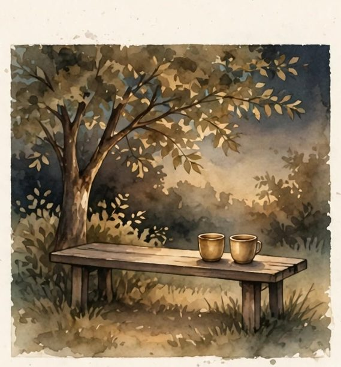
A bench beneath a tree at evening, two cups left beside it, the light going down.
Grief in company is the case where understanding offered runs against the strongest social current, because company has an instinct about grief that is exactly wrong. Company wants to move it along. It brings distraction, reassurance, perspective, and the subtle schedule by which sorrow is expected to finish and the normal person be restored to the table. The grieving person learns to perform along with the schedule — to produce the signs of improvement in public — and to do the actual grieving in the only hours left unobserved. The result is a person accompanied everywhere and witnessed nowhere, which the house counts as one of the standard tragedies of well-meaning houses.
Understanding offered to grief reverses the instinct at every point. It does not schedule. It does not improve. It makes room for the grief at its public size, so that the private hours are not the only honest ones. Its sentences are famously few — the name spoken without flinching, the memory asked for rather than avoided, the chair kept at the bench after the season when callers customarily stop calling. The register is emphatic about the duration in particular: grief is visited by everyone in its first month and by almost no one in its sixth, and the understanding offered in the sixth month is of a different order of value, because it arrives after the world has agreed to stop arriving.
The two cups beside the bench in the Keeper's image were not cleared away, and the house reads the picture as it intends it: somebody stayed into the evening. That is nearly the whole doctrine of this room. Grief does not need a listener with answers, being the one condition for which answers are definitionally unavailable. It needs witnesses who can bear the redundancy of sorrow — the same facts, the same names, the same unfinished questions — without converting their own discomfort into the grieving person's deadline. Offered that, grief does what it does in its own time, which is all it was ever going to do. Offered less, it does the same — alone, and later, and with the additional knowledge that company is a fair-weather arrangement.
66Believing Someone the First Time
The cheapest sentence in the economy of understanding is also among the most valuable, and this room is its ledger. To believe someone the first time — to receive their account without requiring it to be proven, repeated, or survived — costs the believer a small act of trust and pays the teller an amount out of all proportion. The teller who is believed first does not have to spend the second hour defending the first. The account can proceed to its actual subject, which is almost never its own credibility. Houses where first belief is the custom are recognisable by the speed at which their conversations reach the point, and by the lightness of their tellers, who are not dragging the apparatus of proof behind every sentence.
The house is not naive about the risk; the register contains its dishonest tellers, as any honest register must. Belief can be exploited, and occasionally is. But the arithmetic of the alternative is worse, and it is arithmetic rather than sentiment that settled the house's rule. A house that doubts first taxes every honest account to protect itself against the rare dishonest one. The tax is paid in abridged editions, in meanings carried elsewhere or nowhere, in the slow quieting of rooms — the very costs the second hall itemised. A house that believes first loses, now and then, a small sum to a story that was not so. A house that doubts first loses, steadily and invisibly, the truth itself, which stops applying for admission.
The first belief is at its most powerful where the teller least expects it: across differences of station, age, and tribe, where doubt is the customary toll. The official who believes the applicant's first telling; the parent who believes the child's improbable account before checking it; the newcomer believed by the old circle at the gate in the Keeper's image, the gate standing open before the story is fully out — these are the moments people carry for decades and cite, when asked, as the time they decided a place was good. Believing someone the first time is the open hand of understanding. It is offered before the evidence, which is the only time it is worth anything.
67The Apology, Heard Out
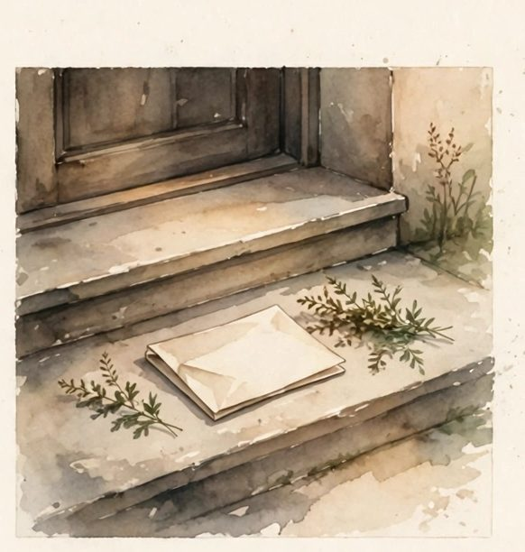
A folded note and a small sprig of herbs left on a doorstep, an apology delivered quietly.
An apology is a sentence engineered to be difficult to hear, because it arrives confessing an imbalance the listener did not create and is now being asked to hold. The common ways of refusing it are so practised they pass for manners: the instant absolution that closes the subject before it opens, the matching confession that steals it, the audit of its wording while its heart stands waiting in the doorway. Each refusal protects the listener from the weight of having been wronged — a real weight, and awkward to be handed in public. Each also leaves the apologiser exactly where they stood: carrying a debt that the creditor will not formally receive, which is one of the most restless conditions a conscience can be left in.
To hear an apology out is the mirror of the house's whole doctrine, and it is harder than it looks in the register. It means letting the sentence finish — all of it, including the parts that are inaccurate in the apologiser's favour and the parts that are harder in theirs. It means declining to edit it mid-course into the apology one would have written. And it means understanding what the completion gives the apologiser, which is not forgiveness — forgiveness is a separate act, on a separate day if necessary — but the experience of having the account received at its full length, possibly for the first time since the offence. Many apologies are repeated for years in worsening forms simply because the first one was never once heard to the end.
The note on the doorstep in the Keeper's image was left quietly, without knocking, and the house's picture is tender toward the sender: not everyone can deliver the sentence in person, and a note fully read is worth more than a speech interrupted. What the listener owes such a note is the whole of the reading — twice, by the house's habit, because apologies like other freighted letters open further on the second pass. Whether pardon follows is the listener's own matter, and the hall guards its separateness as carefully as it guards any distinction here. But the hearing itself is owed promptly and completely, because an apology unheard does not wait quietly. It learns to knock louder, or it stops knocking, and either outcome impoverishes the house it was addressed to.
68Do Not Perform Listening
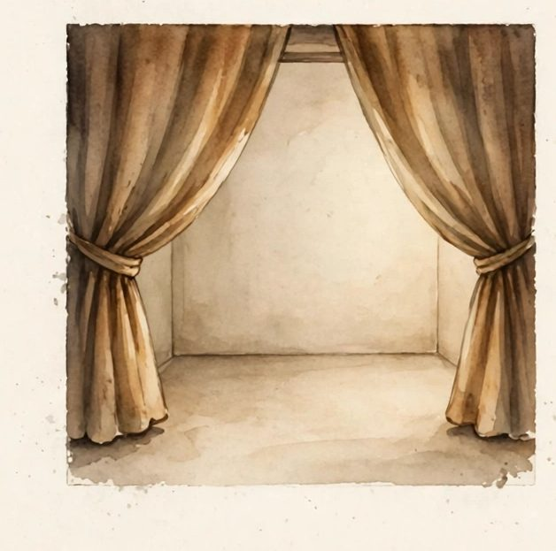
A stage curtain drawn open on an ordinary room, plainly lit, nothing arranged.
There is a counterfeit of this hall's whole practice that must be named where the practitioners will meet it, because it is commonest exactly among the convinced. Performed listening wears the uniform: the tilted head, the encouraging sounds, the summarised echo delivered like a certificate. It can be learned in an afternoon, and it fools tellers for almost a whole conversation, after which it fools them never again. What gives it away is never the technique. It is the timing of the performer's interest, which follows not the teller's meaning but the performer's effect — brightening at their own good questions, resting during the plain freight, and closing the hearing at the moment of maximum credit rather than the teller's completion.
The house does not treat the performer harshly in its register, because performance is usually an apprenticeship that has been mistaken for the trade. Many a real listener began by acting the part — there is no other way to begin — and the difference between the apprentice and the counterfeit is one of direction. The apprentice performs the postures while genuinely straining toward the reception underneath, and is embarrassed by the gap. The counterfeit has made peace with the gap and begun to charge for the performance. Tellers, who are the only reliable inspectors in this matter, learn to tell them apart within one honest sentence, delivered at an inconvenient depth, at an inconvenient hour, when the performance is tired and the straining, if it exists, shows.
The curtain in the Keeper's image is drawn on an ordinary room, plainly lit, with nothing arranged — the house's reminder that what is on its own stage is furniture and lamplight, all day, every day, and that this is precisely the point. Understanding cannot be produced as an effect because its entire value to the teller is that it is not one. The moment the teller detects production, the hearing's worth collapses, not gradually but entirely, like a currency after the rumour. The practitioner's protection is the craft's oldest rule, and this hall re-states it without ornament: do the thing, in the chair, at the length it takes, and let the appearance take care of itself, which it reliably does once nobody is attending to it.
69Letting Others Finish Their Sentences
The courtesy this room teaches is the outward form of the hall's first rule, offered now as something one does for others rather than receives from them: letting them finish. It sounds like the minimum of manners, and in practice it is a discipline with real costs, because other people's sentences are finished, in most rooms, almost nowhere. They are finished for them — by the quicker mind, the senior voice, the one who has heard this before, the one for whom the conclusion is obvious. Each completion feels, to the completer, like efficiency. To the completed, it is a small recurring lesson in the exchange rate of their words, and the lessons accumulate into the quiet arithmetic the second hall described.
Letting a sentence finish is hardest exactly where it matters most: with the slow speaker, the roundabout elder, the child building a thought out of parts, the colleague whose route to a simple point crosses three counties. The listener's temptation in each case is not cruelty but genuine surplus — they have the conclusion already, and holding it feels like waste. The house's counsel is the clerk's again: the conclusion you have is the answer to the sentence you predict, and people are under no obligation to be the sentence you predicted. A respectable fraction of the time — the register suggests a humbling one — the wandering sentence arrives somewhere the listener's shortcut never passes, and the room is richer for the route.
There is a social dividend, and the room records it without embarrassment, because the sixth hall is about the spreading of the practice. A person observed letting others finish — visibly, patiently, at cost to their own turn — teaches the room. Others begin extending the same courtesy, first to the teacher, then generally, the way a kept standard propagates through a household without ever being announced. The place laid at the far end of the long table in the Keeper's image is for the slowest speaker in any company: the one whose finishing is always being done for them. Let them finish, once, completely, in a room that waits. The house has watched what happens to such a person, and to the room, and it is among its favourite entries.
70Quarrels That End in Being Heard
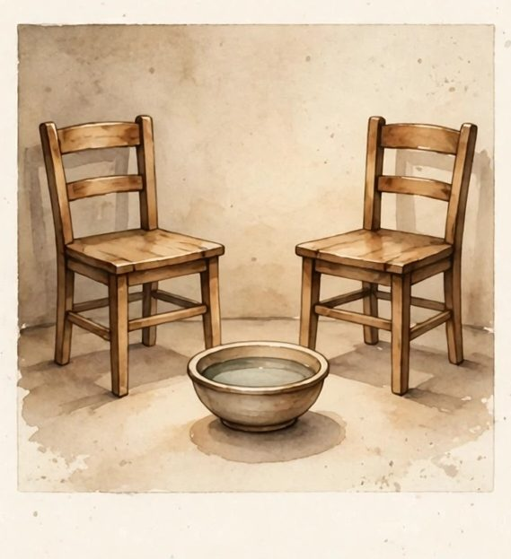
Two chairs with a bowl of water resting on the floor between them, ripples settled smooth.
A quarrel is usually described as the opposite of understanding, and the house, which has hosted more of them than it lists, wishes to correct the description. A quarrel is two understandings competing for one room, each insufficiently heard, each therefore raising its transport costs. The shouting in a quarrel is rarely the sound of people who do not care what the other thinks. It is the sound of freight being hauled at speed because the ordinary road — being heard at walking pace — has been closed so long that nothing short of volume seems likely to arrive. Quarrels that end in being heard end, in the register's experience, at exactly the volume where they should have begun.
The way through is not a technique for winning, and the hall offers none. It is the application, under weather, of everything the house teaches in the calm: one chair's account at a time, each finished, each said back before it is answered — including, especially, the parts the listener believes are wrong, because an echo is not an endorsement and a quarrel cannot afford the confusion of the two. The first completed hearing inside a quarrel has a recognisable effect, felt by anyone who has witnessed it: the temperature drops by a degree that has nothing to do with agreement. One person has been received. The freight no longer needs the volume, and the second chair's account, when its turn comes, usually arrives smaller than its owner had packed it.
Not every quarrel ends this way, and the house's honesty about endings is intact here. Some accounts are irreconcilable in their substance, and being heard does not reconcile them — it only, and exactly, ensures that the disagreement is about the real difference and not about the accumulated freight of a hundred unfinished sentences. The bowl between the chairs in the Keeper's image stands settled and smooth at this room's close, not because the water was never disturbed, but because it was allowed to settle by the only method water knows: being left, for a while, in stillness, after the disturbance was fully admitted rather than capped.
71Understanding That Makes Room
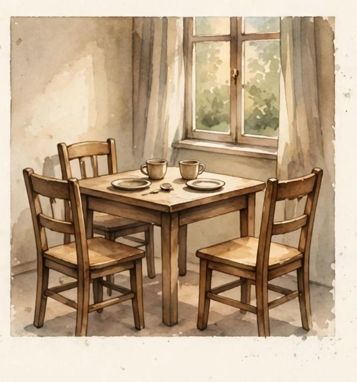
A room with one more chair than the table needs, set ready anyway by the window.
Understanding, offered long enough, acquires a property the earlier rooms could not promise, and this room is its description: it makes room. A person who is reliably understood becomes easier to be with in a literal, almost physical sense — their sentences relax, their defences are checked less often, their humour returns to its natural size. And the listener's side of the room enlarges by the same amount: the company costs them less vigilance, since they are no longer managing an edited performance, and their attention, freed from inspection duty, can do the thing it is actually for. Both people end up with more space than either brought. It is the arithmetic of the house at its most reliable, and no one who has kept the practice disputes it.
The making of room is why understanding spreads through the households where it is practised, against the grain of every scarcity the world teaches. A child heard at full length at the family table is observed, by the register's patient clerks, extending the same length to a friend within the year. A colleague whose account is never finished for them becomes, within a season, the person in the office who lets the junior finish. The practice is taught almost nowhere and caught almost everywhere, which is the usual biography of the things that actually govern human company. The chair by the window in the image is set for no one in particular. That is the whole secret of its occupancy rate.
The hall is obliged, before it closes, to mark the boundary of the claim, because comfort oversold becomes doctrine and doctrine is this house's one allergy. Understanding makes room. It does not make agreement, or safety, or a life without weather; the understood person's troubles remain their size, and some of the rooms they need will never have a chair for them in certain houses, which a later room will face plainly. But room itself — the square footage of the spirit, the unguarded hour, the sentence at full length — is not a small gift in a crowded world. It is, on the evidence of the register, the gift by which all the others eventually arrive.
72Company, Heard Plainly
The sixth hall closes with a summary rendered, at the Keeper's instruction, in the plain style it has been recommending: company, heard plainly, is company transformed without anything having been added to it. The same people, the same stories, the same differences of view — and yet the evenings lengthen, the invitations recur, the partings slow down at the door. Nothing about the company has been improved in the way a host improves a menu. What has changed is the fate of its sentences, which now arrive. Company is not the art of gathering people. It is the art of what happens to their meanings after they are gathered, and it is learnable, and it is mostly this hall.
The house's evidence for the claim is domestic and cumulative. It has kept registers in houses where understanding was offered as a habit and in houses where it was not, and the difference, across years, is not in the amount of conflict or the depth of love, which vary by fortune. The difference is in the record of repairs. In the hearing houses, sentences that landed wrong were corrected in the week, quarrels bottomed out in evenings, apologies completed their journeys. In the others, the identical material accumulated unrepaired until it had architecture. Company, the house concludes, is not a substance some people have. It is a maintenance regime, and its tools are a turned chair and a finished sentence.
The lamps along the porch in the Keeper's image are lit for whoever is coming up the lane, which is the sixth hall's posture stated in lighting. Understanding offered does not wait for credentials, or for the right people, or for the wounds to be interesting. It is extended at the boundary of the property, to the approaching figure, in advance of the story — and the house's whole experience says that the figure approaching any of us, on any lane, is carrying a meaning alone that is heavier than their luggage suggests. Meet it at the gate, if you can. The rooms ahead turn inward again, to the daily work; but they are worked in the light this hall leaves burning.
73The Work of Understanding
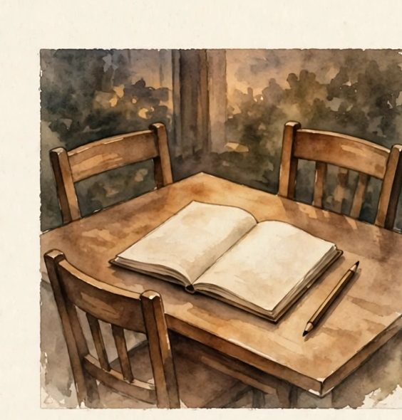
A desk at evening with a notebook open, a pencil, and two chairs drawn up to it.
The seventh hall returns to the workbench, because understanding, however often it is described in these rooms as a comfort, is kept by acts, and acts repeated become a working day. The work is not glamorous and the hall will not pretend otherwise. It consists of hearings completed when it would have been easier to nod, echoes offered when a verdict was ready, corrections accepted without ceremony, details filed, chairs turned. Nobody has ever been given an award for any of it. Its product — a house in which people are understood — has the self-effacing quality of all good maintenance: it is noticed only in its absence, the way a roof is noticed.
What distinguishes the work of understanding from the general goodwill of a household is its specificity. Goodwill wishes everyone well in the lump. The work concerns itself with particulars: this person's unfinished sentence, this correction to the record, this back story not yet filed, this listener's tiredness honestly admitted in time. The register reflects the difference. It is not a book of sentiments. It is a book of attentions, each dated, each small, each findable. The house believes this is why the practice survives its practitioners' moods, which goodwill does not: a practice made of items can be resumed item by item, on a day when the sentiment is entirely absent.
The desk in the Keeper's image is set for evening work, with two chairs drawn up to it, because most of the work of understanding is done after the events it concerns — in the review, the reconciliation, the quiet re-telling at the day's end when both people finally have the hour the day denied them. The hall ahead is the practical one: the pause, the echo in one true sentence, the written account, the round of the house at evening. None of it requires talent. All of it requires the same unfashionable ingredient, which the world keeps discounting and the register keeps recording as the whole of the cost: time, spent in a chair, on another person's meaning, when one could be doing anything else.
74The Pause Before the Answer
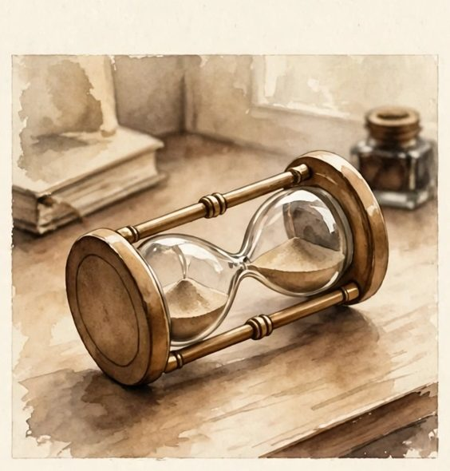
An hourglass resting on its side on a desk, its sand still, a reply not yet given.
The pause before the answer has been praised already in these rooms as the space where hearing completes itself, and the seventh hall now takes it up as a discipline to be practised rather than a grace to be hoped for. The discipline is simply this: no answer leaves the listener until the heard sentence has been held, whole, for one full breath — and during that breath the listener performs the only audit the house requires. What am I about to do: answer the sentence, or answer my feelings about the sentence. The two replies are different documents, and confusing them is the source of more wreckage in ordinary talk than any malice the register has recorded.
Practised deliberately, the pause changes its character over the months. At first it is a restraint, felt by both parties — the teller may even read it as reluctance, until its fruits teach them otherwise. Later it becomes the room's natural tempo, the way a good workshop has a tempo that the work itself seems to set. And eventually, in the houses that keep it longest, it disappears as a separate act, because the hearing and the answer have been permanently separated in the practitioner's mind: the sentence is received first, completely, as a matter of architecture, and the reply is built afterwards, on the true foundations, in its own time.
The hourglass on its side in the Keeper's image has stopped its sand not by being broken but by being laid down — a small portrait of time voluntarily suspended. That is how the pause feels from inside a serious conversation: not as a delay imposed on the talk, but as the talk's one moment of complete honesty, when nothing is being prepared and both people are simply in the presence of what was said. Answers given after such a moment are recognisably different — slower to be wrong, quicker to be amended, and, in a quality the register struggles to name and therefore names plainly, kinder in their aim. They were aimed at the actual sentence. Most answers are aimed at the echo of one.
75Say It Back in One True Sentence
Of all the exercises in this house, the one the Keeper sets apprentices is the hardest, and it is this: say the heard meaning back in one true sentence. Not a summary — summaries are the refuge of the handler, reducing freight to bulletins. One sentence, carrying the whole of it: what happened, what it weighed, and what it asks of the room, compressed not by leaving the freight out but by knowing it well enough to travel light. The exercise fails constantly. Sentences come back too long, or true in the facts and false in the weight, or beautiful in a way the teller does not recognise. The apprentice amends and tries again, sometimes for an hour, over a single account.
The failure is the tuition. In attempting the one true sentence, the listener discovers exactly where their hearing was approximate — which is to say, where it was a performance all along. The teller, correcting, discovers the symmetrical thing: where their own telling had left the weight unmarked, expecting it to be guessed. The sentence that finally stands, agreed by both to be true, has an effect on a room that visitors consistently underestimate. It is a small ceremony of arrival. Something that was carried in one mind, in the private dialect of one person's inner speech, now exists between two people in a shared form, portable, quotable, done. Both parties tend to go quiet after it, the way travellers do at a border crossed without incident.
The blank page in the Keeper's image, with its single line, is the register's ideal of the thing, and the hall commends it as an ambition rather than a standard. Most hearings will not reach it, and do not need to; the approximate echo honestly amended does the daily work. But the exercise, practised even occasionally, re-tunes the ear the way scales re-tune a musician — toward the difference between the words that were said and the thing that was meant, which is the difference this entire house exists to patrol. One true sentence. The apprentice who can produce it, about a real person's real account, without decoration and without loss, is no longer an apprentice in anything that matters.
The Listening Desk
One desk receives all correspondence for this house — questions, corrections, and word of any sentence a visitor has been carrying unheard for a long while: the thing said three times that never landed, the account that always comes out wrong, the listener they are hoping to find. It is read in the order it arrives, and entered in the register of listening.
76Writing It Down at the Desk
A desk with two notebooks, one open with abstract marks, one closed with a ribbon.
Writing is the house's remedy for the two great frailties of the spoken hearing: that it evaporates, and that it cannot be revised. What is said in a room exists, a week later, as two diverging memories, each honestly held, between which the changed words travel like weather. What is written down — the account set out at the desk, in the teller's own hand or the listener's faithful one — stands still long enough to be corrected. It can be read twice. It can be amended in pencil. It can be returned to in a year and found to say the same thing, which is more than any participant's memory in a long relationship can promise.
The practice the house teaches is modest and specific. After a hearing of consequence, the listener writes what they understood — not the transcript, the understanding — and offers it back, in writing, for correction. The offer changes the terms in a way the spoken echo cannot. The teller can amend at leisure, without the theatre of a face waiting for its grade. The listener can be exact, because the page forgives slowness. And both parties acquire, often for the first time in the history of the matter, a shared document: the account as jointly finalised, which can then serve as the ground on which any future disagreement is honestly conducted, instead of each side citing a private recording.
There is a second use, for tellers whose rooms have failed them so far, and the desk keeps it in plain sight. The unwitnessed account, written down entire — the letter never sent, the version kept in the drawer — is not the equal of being heard, and the house will not insult anyone by claiming it. But it is a holding action of real value: the meaning got out of the sole keeping of memory, set in a fair hand where it can be checked, dated, and one day produced. Many an eventual hearing began as exactly such a document, carried into a room when the right chair was finally found. The two notebooks on the desk in the image are the open present and the closed past of the same practice, and the house honours them equally.
77The Evening Round
The listening desk at dusk, the register open, a lamp lit early against the dark.
The evening round is the house's name for the last of its daily offices, and the seventh hall recommends it without insistence, the way it recommends all its practices — as a finding from the register, offered for trial. The round is a walk, at the day's end, through the day's hearings: whose sentence was left unfinished and still can be finished, whose echo went unamended, whose correction was offered and not yet accepted into the record. It takes ten minutes. It is done in the head, or in the register, or aloud between the two chairs if the house is fortunate. Its purpose is not guilt. It is bookkeeping — the prevention of the slow accrual of small unfinished hearings that compounds, across a year, into the quiet the second hall described.
Households that keep the round describe a particular effect, and it is not the one they expected. The round does not mostly recover the day's failures, though it recovers some. Its deeper work is prospective: a person who knows they will walk the round at evening listens differently at noon. The unfinished sentence is noticed while it is still finishable. The amendment is made while the other person is still in the building. Attention, like honesty in a shop, improves under the mild discipline of a daily reckoning — not from fear of the reckoning, but from the simple fact that the day has a shape and the hearings have a place in it.
The Keeper walks the round through the physical house as well as the register, and the image for this room is that walk at dusk: the desk with its lamp lit early, the chairs checked and turned for the morning, the porch lamp left on for whoever is still coming up the lane. The round is housekeeping, and the house is unembarrassed by the word. Civilisations of the heart are not built. They are kept — daily, in the evenings, by people who have accepted that the alternative to keeping is not some grander activity but the slow return of the silence, one unfinished sentence at a time.
78Tears Need No Translation
Tears, in most rooms of the world, trigger an emergency protocol that has almost nothing to do with the person crying. Handkerchiefs are produced at speed. Reassurances are issued like sandbags. The subject is changed, the kettle summoned, the whole machinery of comfort deployed — all with the unspoken object of making the tears stop, because tears in company are treated, by a convention nobody signed, as a failure state of the room. The crying person receives the whole performance accurately: their sorrow has become an incident to be managed, and they oblige the room by managing it, drying up on schedule, apologising for the weather. The house considers the apology the saddest artefact in its entire collection.
The listening rooms hold a different doctrine, stated here once and plainly: tears need no translation. They are not a code for a request, not a symptom requiring the room's interpretation, and above all not an interruption of the conversation. They are part of the account, arriving in the body's own hand at the place where words have been outrun. The listener's task, when they come, is embarrassingly small: keep hearing. Let the sentence resume when it resumes, which it does, on its own schedule, when the room has demonstrated that it will not treat the crying as either a weapon or a fire. The handkerchief may be offered — after, and quietly, as one offers a chair. The emergency is declined.
What tellers report, afterward, is a specific and disproportionate gratitude for the listener who simply continued — who neither fled into comfort nor stared into the weather, but stayed at the same listening angle while the account passed through its wettest ground. It is remembered for years, the way the sixth month's visitor is remembered in grief. The folded handkerchief in the Keeper's image waits beside the cup, unhurried, because that is its entire instruction: be available, and do not be urgent. A room that can hold tears without protocol is a room a person can finally be honest in, and honesty, this house has maintained from its first room, is all that being understood is made of.
79Laughing in Company
A window seat with cushions, a book left face-down, two cups on the sill.
Laughter is the least examined form of being understood, and the seventh hall gives it a room because the examination repays the trouble. To laugh at the right place in another person's account — not at the polished joke, but at the exact half-second where the teller's own amusement lives, often inside a story that is not, on its surface, funny at all — is a certificate of hearing as exact as any finished sentence. It means the listener has been travelling inside the account at the teller's pace, seeing the events from the teller's chair. The laughter that arrives a beat late, or at the decoration rather than the point, tells the opposite story with equal precision, and tellers register both without ever being told.
Company laughs together for many reasons, most of them social weather. The laughter this room means is private in its accuracy even when it happens in a crowd: the look exchanged, the single breath out, the recognition that the two of you have arrived at the same incongruity from inside the same account. It cannot be commanded, and performed laughter is as counterfeit here as performed listening, and as quickly detected. But where it happens naturally it does something no other part of the craft can do as fast: it discharges the solemnity that accumulates around being deeply heard, and returns both people to the ordinary footing of company, lighter by exactly the weight that was witnessed.
The house is careful to place this room among the work rooms and not among the ornaments, because it has a practical use. The listener who is monitoring their own hearing can take laughter as an instrument reading: where it comes easily and in the right places, the understanding is travelling well; where a teller's humour repeatedly lands in silence, something upstream — attention, belief, the unhurried face — is failing before the joke ever stood a chance. The cups on the sill in the Keeper's image have been set down mid-conversation, which is what happens to cups in rooms where the talk is good. The work of understanding is not all registers and rounds. Some of it is two people on a window seat, laughing at the precise place, and knowing, without saying, that this too was a form of arrival.
80The Chair Between Two People
A single chair facing an open door, morning light on the path beyond.
Between two people in a long conversation there comes a moment the house has learned to watch for, and this room is its description. The talk has done its surface work. The accounts are exchanged, the echoes made, the corrections filed. And then a silence opens that is not the full silence of listening nor the empty one of exhaustion — it is the threshold silence, in which the teller is deciding whether the deeper account, the one under the one they brought, is going to be offered in this room, to this listener, today. The decision is not taken in words. It is taken by the whole history of the previous hearings, arriving at once, like a jury returning.
The listener's part in the moment is almost entirely negative, and therefore difficult: do not fill it. The joke, the summary, the gentle change of subject, the glance at the hour — each is a door closed quietly in the threshold's face, and the teller, who was deciding, decides accordingly and the room returns, relieved and diminished, to its surface. The listener who has learned the craft does a harder and simpler thing. They keep the chair. They let the silence stand at its full length, with their attention visibly unwithdrawn, and they allow the teller the entire dignity of the decision, including the decision to leave the deeper account unoffered — which is also respected, and which, respected, makes its eventual offering more likely by the month.
The chair in the image faces the open door and the morning path beyond it, because the threshold is an outward thing: what is being decided is whether the talk goes further out, into the country where the real freight is kept. The house can only furnish the moment well — the quiet, the unhurried light, the listener whose patience has been proven in smaller currencies. Whether the door is used belongs to the teller, always. But the register's testimony is consistent across forty years: rooms that keep the threshold silence get, in time, almost everything. Rooms that fill it get, forever, the surface — delivered politely, at length, and mistaken by both parties for the whole of each other.
81Hear It, Then Decide
Hear it, then decide: the order sounds obvious set down in four words, and it is violated in nearly every room where a decision matters, because deciding is more comfortable than hearing and usually better rewarded. The person who decides early acquires a reputation for decisiveness. The person who hears fully acquires a reputation for slowness, right up until the moment the early decider's decision fails on a fact that was standing, unheard, in the third minute of somebody's sentence. The house keeps no brief against decision. It keeps a brief for sequence, and the sequence is this hall's whole working doctrine in miniature: reception complete, then judgement; judgement, then action. Each stage entitled to its full length.
The violation has a recognisable signature. A proposal is being described and, before the description ends, the objections are already being tabled — accurate objections, many of them, to a proposal that does not exist, since the real one had qualifiers in its second half that reversed its meaning. A confession is being made and the sentence of the court is forming before the extenuation, which was the point of the confession, has been uttered. In each case the decider experiences themselves as efficient. The teller experiences the specific desolation of having been tried on the evidence of their first paragraph, and files the experience where such experiences are filed, under the reliability of that room.
The practical defence is embarrassingly structural, and the house recommends structure precisely because resolve fails under pressure. In the rooms where it matters, separate the hearings from the decidings in time: an account is received in one sitting, answered in another, even if the other is only an hour later and in the same chairs. The gate in the Keeper's image stands ajar between two stretches of one path, because that is the true picture: hearing and deciding are not two countries, they are one road with a gate on it, and the gate is not locked. It only asks to be passed through in order, at walking pace, by people who have finished the first field before they start the second.
82What Being Heard Repairs
A cracked cup mended with a seam of gold, holding tea on a saucer.
It is worth pausing, in the working hall, to ask what all this labour actually repairs, because the answer disciplines the practice. Being heard does not repair the events in the account. It repairs the account's address. A trouble that has been accurately received acquires a location outside the teller's sole custody: it exists now in the room, in the register, in the second mind that holds its true shape. The teller can visit it there rather than only carrying it, and visiting is a different physical act from carrying, with different costs, the way reading a map differs from walking the country blindfold. Most of the relief people report from a complete hearing is this and nothing more mysterious: the thing is no longer only inside them.
It also repairs, more slowly, the teller's confidence in their own testimony — the asset the second hall showed being spent, misunderstanding by misunderstanding, until a person doubts their own account at its source. A hearer who says the meaning back accurately is a witness for the reliability of the teller's inner reporting. Accepted corrections refine it; the accepted echo confirms it. Over a year of such hearings, people visibly straighten in their own stories: they report their weather with less apology, fewer disclaimers, a steadier hand. The house, which is cautious with large claims, permits itself this one because the register is full of the straightening, dated and witnessed.
The mended cup in the Keeper's image holds tea, and the seam is gold because the picture is honest about the repair's nature: it does not pretend the break did not happen, and it does not return the cup to some lesser duty in the back of the shelf. The repaired thing in this house — an account, a confidence, a person's trust in their own voice — is used daily, at the main table, holding hot liquid, which is the register's whole testimony about what being heard repairs. Not the past. The vessel. And a sound vessel, as an earlier hall of this house maintained about a different matter, changes what a life can carry, and how far, and in whose company.
83Understanding Is Not Agreement
Two flags on one pole, flying in different winds, above a quiet garden.
Late in the working hall, the house returns to its founding distinction, because the practitioners report that it needs returning to at exactly this depth. Understanding is not agreement. The point was stated at the second room as a definition; here it is stated as a practice, because in the daily work the two are confused not by novices but by experts — by listeners so good at reception that tellers begin, gratefully and disastrously, to read reception as assent. The echo comes back perfect, the face is steady, the belief is whole — and the teller walks home believing the listener is persuaded, and builds on the belief, and discovers the error at the worst available moment, in company, at cost.
The house's rule for its listeners is therefore one of clean bookkeeping. When the matter is one on which the listener's position will later matter — a plan, a request, a course of action — the listener separates the two acts aloud, at the time, in a single unembarrassed sentence: I have heard you, and I believe I have it right; my answer to it is a different thing, and you shall have it honestly. The sentence feels formal the first few times. It feels, the tenth time, like the thing that keeps a house's accounts trusted — because a listener whose hearing and whose assent are known to be separate can be believed in both, while a listener who lets them blur will eventually be doubted in both, which is the exact disaster the rule exists to prevent.
For the teller, the same distinction, kept from the other chair, is what makes disagreement bearable enough to be useful. An answer of no, arriving after a complete hearing, lands on a person who has been given the whole of the attention and none of the pretence — and such a no, the register attests, is survived at a rate that would astonish the houses that protect their tellers from it. The flags in the Keeper's image fly from one pole in different winds, which is the room's whole picture: one household, one conversation, two positions, both honestly held up to the weather. The pole does not mind. The pole is what the understanding is for.
84The Day's Listening, Entered
The seventh hall closes where the craft's day closes: at the register, with the day's listening entered. The entry is the smallest of the house's offices and the one the Keeper is least willing to skip, because it is the joint between the day's practice and the practice's memory. An entry is not a composition. It is a line or two, in the plain hand: who was heard, on what matter, whether the echo stood or was amended, what was left unfinished and owed. On good days the line writes itself. On the days when the listening went badly — the nod deployed, the sentence overtaken, the tiredness concealed until it leaked — the entry is the place the failure gets its one useful consequence: it is recorded, without drama, where the next day's practitioner will see it.
The habit has a second product, visible only across the years, and it is why the house maintains registers at all rather than trusting its doctrines to memory. The entered days accumulate into the evidence of a life among listeners: the slow proof, in columns, that the work was done and that it compounded. People who doubt the practice in the abstract — who find the comfort of being understood a soft subject, a matter of temperament — are sometimes brought to this desk and shown forty years of entries, and the doubting tends to stop, not because the book is eloquent, but because it is boring in the way of all true records: item after item, hearing after hearing, a house kept.
The lamp in the image burns low and the hand rests, because the entry is the end of the working day and the house is firm about endings. Listening entered is listening finished; the register, closed, permits the listener the evening the fourth hall demanded for them, unburdened by the mental rehearsal of unfinished accounts. Tomorrow the chairs are turned again. Tonight the book says what the day was, in a fair hand, without inflation — heard plainly where it could be, amended where it could not, and carried forward honestly where neither was possible. That is the whole of the craft's accounting, and the hall is content to close on it.
85A Life Among Listeners
A house with every inner door standing open, lamplight flowing from room to room.
The eighth hall widens the lens, from the pair of chairs to the life built around them. A life among listeners is not a life in which a person is understood by everyone — the house knows no such lives and promises none. It is a life in which being understood is a standing feature rather than a rare accident: distributed across a few chairs, in a few houses, at reliable intervals, so that no meaning has to be carried alone for longer than a season, and no account has to age unexamined in its owner's sole custody until it warps. The difference between such a life and its opposite is not visible in any single week. Across a decade it is the whole difference, and the house asks the visitor to judge it at that range or not at all.
What composes such a life is mostly unremarkable: a friend who knows the back story, a household where sentences finish, perhaps a colleague or two whose echoes can be trusted, a desk somewhere — this one or another — where the correspondence is answered by a person sitting down. Nothing on the list is purchasable as a set, and nothing on it requires a fortunate birth. It is assembled, in the register's consistent testimony, by the same acts the earlier halls described, done outward as well as inward: chairs kept for others tend, across the years, to become chairs kept for oneself, because company sorts itself by the standard it is offered.
The house with its inner doors open in the Keeper's image is not a house without privacy — the doors exist, and close, and the hall is not interested in a life without closed doors. It is a house where the doors open from the inside, at the wish of the person in the room, without the long negotiation that a badly listened-in life imposes on every opening. Lamplight flows because nothing has been arranged against its flowing. That, in the end, is the eighth hall's definition of the fortunate life in this respect: not that it is flooded with understanding, but that understanding is unobstructed in it, by habit, by furniture, and by the accumulated trust of everyone who lives there.
86A House Where Sentences Land
A small circle of chairs in one room, a lamp standing in the middle of them.
Some houses have it from the start, and some acquire it late, and a visitor can detect it within one evening in either: in this house, sentences land. They are launched at ordinary confidence and they arrive at ordinary accuracy, and the conversation proceeds on the assumption — invisible to the people enjoying it, which is how you know it is load-bearing — that the next sentence will arrive too. The children in such a house correct the adults' echoes without embarrassment. The adults finish each other's stories only in chorus, by invitation. Errors of hearing are repaired in the hour, in a tone of mild interest, the way a dropped stitch is picked up by people for whom knitting is not a performance.
Acquiring the quality late is the more instructive case, and the register holds several. It is never acquired by announcement. A house does not become a landing house by resolving, at a family meeting, to understand one another. It becomes one by the repair of the arrangements: one person beginning — usually the person who has been worst heard, which the house notes without surprise — to practise the craft unilaterally, at cost, without credit, until the echoes in that house start coming back true and the other chairs, one by one, turn. The process has no ceremony and a typical duration measured in seasons. Its evidence, when it comes, is the same evidence as in the born houses: a child, correcting an echo, unembarrassed, at breakfast.
The circle of chairs in the Keeper's image has its lamp in the middle, which the house reads as the correct heraldry for such a place: the light belongs to the conversation, not to any chair in it. A house where sentences land is not a house with a gifted listener in it, dispensing reception like a service. It is a house where the listening has become common property — where anyone present may be, by turns, the teller, the echo, the corrector, the keeper of the pause. The eighth hall exists, in large part, to make that transfer imaginable to visitors who currently live as the sole listener of their houses, and are tired in the way the fourth hall described.
87Work, With Listening Admitted
Work is where most adults spend most of their sentences, and it is where the world's listening is at its most rationed. The workplace runs on bulletins: accounts compressed for transmission, freight explicitly discouraged, the whole apparatus of the summary and the action point arranged so that nothing takes the time a full hearing takes. The house is not sentimental about this; the work must be done, and much of it is specifications, which travel perfectly well in bulletin form. But people keep arriving in workplaces inside the specifications — afraid inside the report, grieving inside the rota, doubting inside the proposal — and a workplace where no chair exists for the freight does not become efficient about it. It becomes blind, and pays for the blindness in the currency it keeps instead: the resignation unexplained, the project failed at a joint everyone saw and nobody could say.
Listening admitted to work changes its proportions less than its managers fear. The chair in such a place is not a confessional and the hearings are not long; the register's entries from working houses are the shortest in the book, and among the most consequential. A sentence finished in a corridor. A manager who says the meaning back before answering it, so that the meeting argues about the actual proposal. A colleague believed the first time about a difficulty that the timetable called impossible. These are small denominations everywhere except in their effect, which is that the people in such a place stop spending half their strength on the abridged editions of themselves, and the work gets the strength instead.
The workbench in the image has a chair drawn up to it from the room, which is exactly the importation this room recommends: not a new furniture of feeling in the office, but the old furniture of hearing, wheeled in among the tools. The tools are laid down in the picture, not put away — the house is precise about this too. Listening admitted to work does not replace the work. It clears the one obstacle that the work, unassisted, can never clear for itself: the fact that the people doing it are carrying meanings, alone, at full price, in a building that has agreed to pretend otherwise.
88The Family Table
A kitchen table at evening with chairs of many sizes, a pot resting in the middle.
The family table is the first listening room most people ever sit in, and the last one whose arrangements they think to question, which is why the eighth hall gives it a room of its own. At the family table the allotment of hearings was fixed before anyone present could speak: whose accounts run long, whose are summarised by others, whose sentences are finished as a family sport, whose are translated for the table by an appointed interpreter. These allotments are rarely cruel in intention. They are simply old — older than the current occupants, in many houses — and they persist because the table, unlike the world, never holds an election.
The allotments cost exactly what the second hall's arithmetic predicts, charged over the longest accounts there are. The summarised child becomes the adult who telephones rarely and says less; the interpreted one stops bringing freight to a table that will only hear it second-hand; the frequently finished one develops the family's famous brevity, which is praised as temperament for forty years. None of this requires a villain, and the hall's insistence on that point is practical rather than kind: a table whose arrangements have no villain can be rearranged without a trial, and rearrangement — a chair turned, an interpreter retired, a summary declined — is the whole of what the room recommends.
The chairs in the Keeper's image are of many sizes, drawn up to one table with one pot resting in the middle, because that is the family table's true heraldry at its best: not that the hearings are equal — a child's account and a grandfather's will never weigh the same, and should not — but that each is received at its owner's length, in its owner's words, under the same lamplight. Houses that achieve it describe the same small miracle from the inside: the quiet one, in middle age, beginning to talk. The register has seen it too often to call it anything else. The chair was there all along. Somebody finally turned it, and kept it turned, and waited out the years the waiting took.
89Old Stories, Heard Again
An old chair carried into a new room and set by a different window.
Old stories have a poor reputation in brisk company, and this room is their defence, entered by a house that has heard thousands of them. The old story — the one the family can recite along with the teller, the one that arrives on schedule at gatherings — is usually treated as evidence of a mind running in a groove. The register reads the same evidence in reverse. A story retold across decades, at the same length, with the same freight, is a story that has never once been fully heard by the company it is told to. Repetition is the teller's standing application for a complete hearing, refiled annually, in the only form left to them. The groove is not in the teller. It is in the road the story keeps failing to complete.
Heard again — truly again, with the echo made and the corrections accepted — an old story does something its tellers have waited years to witness: it changes. Small at first. A detail is released that forty tellings protected. The villain's part is amended by a sentence. The ending, recited like a gate closing since before the listeners were born, is one evening left simply open, the teller gazing through it with an expression the family has never seen. Such evenings are not common, but the house's testimony is that they are not rare either, once a single listener in the company undertakes the discipline of hearing the scheduled story as if it had never been told — which, in the only sense that matters to the teller, it has not.
The chair in the image has been carried into a new room and set by a different window: the old story's own hope, in furniture. The teller does not need a new story. They need the story's furniture moved — a new listener, or an old listener newly disciplined, and the light coming from another side. The hall's practical counsel to the families of repeaters is a single sentence long, and it has the register's full weight behind it. The next time the story begins, be the one who hears it. The whole of it, at its full length, with the echo at the end. Watch what it does with its first complete hearing. It may retire, satisfied, from the schedule at last — or it may, at long last, begin.
90Friendship at Listening Pace
Friendship at listening pace is the eighth hall's name for a tempo that modern arrangements are quietly abolishing, and the room is written partly as a record, in case the tempo needs describing to a generation that meets it only in books. The tempo is this: conversations sized to their freight rather than to the gap between engagements; the long, unproductive middle of a talk, in which nothing is being accomplished and everything is; the friendship's knowledge accumulating at the speed of seasons, so that its understanding, when it is finally tested, is found to have the depth of a thing that was never hurried. Such friendships were once the ordinary yield of unplanned time. They must now be kept deliberately, against the scheduling of everything, and the house keeps a brief for the deliberateness.
The tempo's enemy is not distance, which old friendships have always survived, nor even rarity of meeting. It is the abridgement of the meetings that do occur: the catch-up format, in which each party delivers the bulletin of their interval — postings, journeys, the children's ages — and the freight, which never fits the format, is postponed to a longer talk that the calendar of both lives has quietly stopped containing. Bulletins are not nothing; they keep the road open. But a friendship fed only on bulletins ends up excellently informed and entirely unaccompanied, each party carrying the real account alone in the presence of a very old friend, which is among the more refined lonelinesses the register records.
The bench in the Keeper's image sits in first light, with the cups set down and the talk evidently unhurried — evidently, because nothing in the picture is arranged for departure. The hall's prescription for the tempo is so modest it risks sounding like nothing: protect one recurring stretch of unplanned time with one friend, at whatever interval the lives allow, and let the stretch be inefficient. No agenda smuggled in. No freight required to justify it. The register's evidence is that the freight, given the recurring field, arrives on its own schedule, usually sideways, usually in the unproductive middle — the exact region the abridged format was designed to cut, and the exact region where being understood, as opposed to being updated, has always lived.
The Listening Desk
One desk receives all correspondence for this house — questions, corrections, and word of any sentence a visitor has been carrying unheard for a long while: the thing said three times that never landed, the account that always comes out wrong, the listener they are hoping to find. It is read in the order it arrives, and entered in the register of listening.
91The Self, Heard by Itself
A mirror covered with a cloth on a wall, a chair facing it in morning light.
There is one listener every person is assigned for life, and the eighth hall would be incomplete without the room that concerns them: the self, hearing itself. The house is careful here, because its doctrine all along has been that understanding is received from another person, and it does not dissolve that doctrine now. But between the hearings a person is given, there are the long stretches in which their own account must be kept by its owner — and kept well or badly, attended to or overridden, with consequences the register can trace as reliably as any in the book. A person who will not hear their own account becomes dependent on company for self-knowledge, and speaks of their own weather the way tourists speak of a climate they have only visited.
Self-hearing, as the house defines it, is the inward form of the same craft: the sentence allowed to finish, internally, before the verdict is brought in. Its most recognisable failure is the speed with which most people correct their own first account — the grief edited to a more reasonable size before it has been felt at its actual one, the anger reclassified, the joy taxed as presumption. The editing feels like maturity. It is usually the polite nod, learned at the family table in the years when the self's sentences were the ones being finished. A person can recover the craft inwardly by the same exercises that build it outwardly: the pause, the written account, the one true sentence said honestly in the quiet, even when the only witness is the person who most needs it amended.
The covered mirror in the Keeper's image hangs in the room for a plain reason: the house does not equate self-hearing with self-inspection, which is a different and frequently crueller activity. A covered mirror is not a denial of the face; it is a refusal to make the face the subject. The self is heard, in these rooms, the way a teller is heard in the chairs — by attending to the account, in full, without the continuous verdict. People who practise it are recognisable in company by a steadiness that others misname as confidence. It is not confidence. It is the sound of a person whose inner house has a listener in residence, and whose sentences therefore do not need to shout to reach their own ears.
92Habits of the Good Listener
Seven small notebooks in a row on a shelf, one kept for each day of the week.
The good listener's habits, gathered from forty years of registers, fit on a single shelf, and the eighth hall sets them out without ceremony for whoever wishes to take stock. The good listener prepares: clears the table, closes the day's other business, arrives at the chair as a place and not as an interval between places. They remember: names, dates, the current state of the old matters, so that no teller in their house pays the re-founding tax. They amend: accept the correction to the echo in the spirit in which a clerk accepts it, as the record improving, rather than as a defeat in a contest nobody else knew was running. They rest: openly, by arrangement, before the tiredness can put on the nod.
Two habits on the shelf are less obvious, and the house marks them as the difference between the good and the merely willing. The first is follow-through: the good listener returns to the matter, unprompted, after an interval — the question asked on the right day, the name mentioned before the teller has to test whether it survived. Being remembered between hearings is half of what being understood feels like from the inside, because it proves the hearing had a residence and not just a duration. The second habit is discretion of a specific kind: the good listener does not spend the account. What was heard in the chair is not currency in the corridor, not colour for other conversations, not evidence in other hearings. A house learns this about its listener once, permanently, in both directions.
The seven notebooks on the shelf in the Keeper's image are labelled by day, because the habits are dailiness itself, and the hall insists on the point in closing the room. Nobody is a good listener at the scale of the grand occasion; the grand occasion is mostly luck and seating. Goodness in this craft is a weekly average, kept by people whose names the register records with the same respect it gives the profound: the neighbour who remembers, the colleague who follows through, the friend who can be told a thing in March and trusted with its exact shape in November. The shelf is not high. Reaching it is a matter of the same ingredient as everything else in this house, and the hall is not tired of naming it: attention, kept.
93A Life With Margins for Other Voices
A life crowded to its edges has no room in it for other people's meanings, and this room concerns the margins — the unfilled spaces in a week, a room, a mind, where another person's account can be set down at its full length. The margin is not idleness, and the house, whose practitioners are mostly busy people, is careful with the distinction. It is reserve: the deliberately uncommitted fraction of one's attention, kept the way a prudent house keeps a spare chair, not because a guest is expected but because a guest is possible. Lives without the reserve are not usually short of goodwill. They are short of the square footage goodwill needs to take its coat off.
The margin's enemies are respectable, which is what makes them effective. Fullness is a virtue in most ledgers; a diary with white space reads as underachievement; a mind at rest in company presents, to the hurried, as a mind unemployed. The eighth hall records the counter-evidence without heat. In the register's long experience, the understood life is never the fullest life in the room. It is the one with the margins: the friend whose schedule famously flexes, the household whose evenings are famously unoptimized, the elder whose afternoons are a scandal of unassigned time — and into whose company, therefore, the whole neighbourhood's real accounts eventually find their way, because there is somewhere for them to land.
The page in the Keeper's image sits calm in a wide desk's empty margins, and the picture is the room's whole argument. A text without margins is not more text; it is less readable, and a life without margins is not more life. It is less hearable, which across a decade amounts to less understood, which amounts — by the arithmetic the house has been keeping since its first room — to more carried alone by everyone in it, the busy keeper most of all. The margin cannot be faked, delegated, or bought in bulk. It is made the old way: by leaving, on purpose and against advice, a little of the week unfilled, and defending the emptiness as if it were an appointment — which, in this house's book, it is.
94Understanding, Worn Lightly
An empty chair at a table set for talk, rested and ready, a cup beside it.
Understanding, worn lightly, is the eighth hall's portrait of mastery in this craft, and it is a portrait mostly of absences. The master listener does not announce the discipline. There is no posture, no vocabulary of the art, no reputation under management. People simply find, in that person's company, that their sentences complete themselves, that the echoes are quietly exact, that the difficult account, when they finally risk it, is received with a steadiness that asks nothing back. They rarely identify the cause. They say the person is easy to talk to, which is the craft's highest decoration, awarded only in those words, and worn, by the people who earn it, without the least idea that they have been decorated.
The lightness has practical consequences the register is glad to record. Understanding that is worn heavily — with the listener's expertise on display, the technique visible, the significance of each hearing underlined — taxes the teller a second time, in gratitude and performance, and quietly discourages the ordinary account. Who brings a small trouble to a cathedral. The lightly worn understanding, by contrast, receives the small trouble at the kitchen table, at its small size, without the acoustics — and the small troubles, heard early and often, are the mechanism by which the large ones never accumulate their compound interest. Mastery in this craft is therefore recognisable by the triviality of what it is mostly used for, which is the opposite of mastery in nearly everything else.
The empty chair in the image is rested and ready, with the cup beside it and no person posed in the frame, because that is how the thing actually looks in the wild: an availability, unadvertised, in an ordinary room. The hall commends the portrait to its practitioners as the correct ambition. Not to be known as a listener. To be used as one — frequently, casually, by people who would be surprised to learn that anything as learnable as a craft was involved. The understanding that has to be explained has already spent half its value on the explanation. The other kind just turns the chair, and pours, and is forgotten in the best sense: remembered only in the way the teller's life quietly went better in that company.
95The Years as Conversations in One House
A long house with many rooms, each window lit differently, evening coming on.
Seen across a whole life, the eighth hall proposes, a person's history can be read as a sequence of conversations — the ones that landed and the ones that did not — and the reading explains more of the biography than the sequence of addresses does. The city where the beloved friend lived is remembered as a listening city forever after. The house where the account was always summarised is remembered, however grand its rooms, as a place of exile. People do not mostly choose these associations; they accumulate, the way the rooms of a long house accumulate their different lights, until the map of a life is, on inspection, a map of its hearings.
The sequence has turning points, and they are almost never the dates the biographies celebrate. They are evenings: the first time a particular listener said the meaning back and it stood; the night the old story was finally heard in a new room; the afternoon a stranger at a gate believed a first telling. Such evenings change the direction of travel because they change the traveller's belief about what can be carried in company — and a person who believes their freight can be carried in company travels differently, plans differently, risks differently from one who has priced every road as a solo crossing. The register's most repeated marginal note, across forty years, is some version of this: after that evening, everything else in the life got cheaper to carry, including the parts that had nothing to do with the conversation.
The long house in the Keeper's image has every window lit differently, because the hall will not pretend the sequence is uniform. There are dark rooms in every biography — houses, seasons, whole decades where the listening failed or was refused — and there are rooms lit like lighthouses in the middle of them. The life is the whole building, and the eighth hall's closing observation is the gentlest in its register. It is late in very few lives to light another window. A chair turned at seventy has turned houses. The sequence of conversations is not finished being written until the person is, and its next entry is, at almost any age, still available to be one of the lit ones.
96The Life and the Listening Share One Roof
The eighth hall closes with the image it has been approaching since its first room: one roof, under which a life and its listening are the same structure viewed from different sides. It is tempting, in houses and in lives, to treat understanding as a furnishing — something acquired after the structure is sound, dispensed with under pressure, missed only in the way luxuries are missed. The register's forty years say otherwise, and say it in the plainest entries it owns. When the listening fails in a life, the life does not merely lose a comfort. It loses its load-bearing company: the accounts go unshared, the corrections unmade, the old stories unwitnessed, and the structure stands — people are durable — but stands the way a house stands with its inner doors sealed, room by room, against its own weather.
The roof beam in the Keeper's image spans two rooms of one house, because the hall wants the figure exact. A beam is not two beams politely adjacent; it is one piece of timber doing one work for the whole span, and its failure anywhere is a failure everywhere along it. So it is, the house maintains, with being understood in a life that has it: the friend, the family table, the workplace chair, the desk where letters are answered — these are not separate amenities but one structure, each part lending the others its soundness. A person whose listening holds at home usually finds it holds at work, because the beam runs through. A person whose beam is cut in one room will hear the creak, eventually, in all of them.
The lamps of the eighth hall are trimmed on that admission, which is less a conclusion than a commissioning. The visitor who has walked this far has seen the comfort named, the costs counted, the craft itemised, the company furnished, the work scheduled, and the life surveyed. What remains is the long stretch of the house still ahead in the practice — the steps, and then the long view — and the house sends the visitor onward with the beam's single implication. Keep the structure sound. The rest of the rooms, as the Keeper remarks when the register is shut, are mostly weather, and weather, as an earlier hall of this house insisted about a different matter, is what a sound house is for.
97Step One: Say the Thing Once, Plainly
One door of a house opened while the rest stay shut, morning entering through it.
The steps of this house are twelve, and they are offered in the order the Keeper would set a new practitioner to them: small, in sequence, each one complete in itself. The first is the teller's step, and it is deliberately the smallest door in the building. Say the thing once, plainly. Not the whole account, not the defended version — one true item of it, in ordinary words, at an ordinary volume, to one person, in one room. The step exists because the grand resolutions in this area fail at a famous rate, while the plain single saying succeeds at a rate the register can only call encouraging. Most people who believe they cannot be understood have, on examination, a long record of almost saying, of saying it in code, of saying it at the wrong hour to the wrong chair. The step corrects the record at its cheapest point.
Plainly is the step's working word, and it is harder than clearly. A clear sentence may still be armoured — technically exact, legally sufficient, and carrying nothing. A plain sentence carries the freight in the open: I was frightened; I am sorry; I need the company, not the solution. Such sentences feel, in the mouth, dangerously undefended, which is precisely their qualification. Armour is what changed echoes bounce off. The plain sentence gives the listener's reception nothing to strike except the meaning itself, and meanings received plainly have a way of starting, in that room, the whole machinery of being understood that the previous halls described.
Open one door, the Keeper says, and the image is exact about the scale: the rest of the house may stay shut for now. The steps are not a programme for becoming a different person by spring. They are a sequence for becoming, observably and within the month, a person whose sentences land oftener than they did — which, compounded across the years the eighth hall measured by, is most of the difference between the lives it surveyed. The first door is small, and it opens inward, and the morning that comes through it is the same morning that was always on the other side. It was only ever waiting for the saying.
98Step Two: Ask to Be Heard, Not Fixed
A plain card and a pencil on a table, one line of abstract marks written on it.
The second step asks for a sentence most people have never said aloud to a listener, because it sounds, to the untrained ear, like a demand. It is: I would like to be heard, not fixed. Said plainly, early, before the account begins, it is not a demand but a kindness to both chairs — it tells the listener what success looks like in the coming hour, and it relieves them of the burden that ruins more hearings than any other: the belief that they are expected to produce a remedy, and are failing at their post while they merely listen. Listeners who have been given this sentence describe a physical relief at hearing it. The tools can stay in the box. The story can be a story.
The step is necessary because the default settings of the world run the other way. In families, in workplaces, in the long custom of practical people, an account of trouble is a request for solution until declared otherwise, and the declaration has to be made — the listener cannot be blamed for answering the request as filed. The teller who files it correctly, once, discovers how many of their past disappointments were addressing errors rather than failures of love: the fixing was tendered because the form asked for fixing, by people who would have listened beautifully had the form asked for listening.
The card in the Keeper's image carries one written line, because the step also has a written form, for the tellers and the hours where the spoken sentence will not come. It can head a letter. It can open a message. It can be said, for the shy, by being shown. However it travels, its work is the same: it separates the two great requests a person can make of another — receive this, and remedy this — which the whole house has been separating since its second room. Ask to be heard, when hearing is what is wanted, and the register's promise, modest and kept, is this: you will be astonished how many of your fixers were listeners in disguise, waiting, for years, for the form to be filed correctly.
99Step Three: Let One Sentence Finish
The third step is the listener's first, and it is the first rule promoted to a practice. Let one sentence finish. One — the step is that small, because the Keeper has watched grander vows dissolve by the second conversation. Choose, in the next real talk that comes to you, one sentence of the other person's — the first one that matters, say — and defend its completion as if it were a candle in a draught: no interruption, no completion offered, no answer begun in the mind while the last clause is still travelling. Then notice, in the small silence after it, how much of the person's meaning was stored in the part you would ordinarily have overtaken.
The step's difficulty is not in the will but in the reflexes. Finishing, prompting, and answering early are habits with decades of practice behind them, and they fire before intention can intervene. The house's counsel is therefore mechanical: slow the exchange by the one device that cannot be argued with, the breath. A listener who breathes once before any response has built a fence the reflexes cannot jump, and inside that fence the sentence finishes itself, nine times in ten, without any virtue being required of anyone. Breath by breath, the reflexes retrain. The register has seen it happen in people who described themselves, accurately at the time, as the worst listeners in their families.
One finished sentence, the step promises, is not a token. It is a demonstration — to the teller, who recalibrates what this room can hold; and to the listener, who discovers the freight they have been missing all these years by inches. Both recalibrations generalise. Tellers bring the next sentence at its true length. Listeners find their patience has quietly doubled, not by effort but by evidence. The two chairs in the Keeper's image have nothing between them but light, which is this step's portrait of a completed hearing: no apparatus, no defence, nothing interposed — the sentence crossing the lit space entire, perhaps for the first time in the history of that room.
100Step Four: Rest Before Explaining Again
A chair set down halfway along a garden path, a rest taken without apology.
The fourth step is the house's mercy to tellers, placed early in the sequence because so many abandon the whole practice exactly here. Rest before you explain again. When a meaning has failed to land — when the echo came back wrong, or the nod came out, or the sentence was received as a complaint — the teller's instinct, and usually their training, is to re-send immediately, harder, with feeling. The house has kept the outcomes. The immediate re-sending, done from inside the sting of the miss, almost never repairs the miss. It encodes it: the second version arrives sharper than the first, the listener defends against the sharpness, and by the third exchange both parties are repairing the repairs, with the original meaning somewhere underneath, unlanded and now additionally bruised.
Rest is not retreat, and the step is precise about the difference. Retreat abandons the meaning; rest shelves it, deliberately, with a stated intention to return — an intention that may be stated aloud, to the listener, in so many words: I want you to have this rightly, and I am going to find a better hour for it. The sentence, spoken calmly, is itself a small masterpiece of the craft: it tells the listener the matter is important, unclosed, and unweaponised, which are the three facts that make a later hearing likely to succeed. Many of the register's most complete understandings carry, in their early entries, exactly such a shelving, dated some days before the arrival.
The chair set down halfway along the path in the Keeper's image is resting in the open, in daylight, without apology — the step's whole posture. The path is not abandoned; the walker is visibly on it, seated, recovering the breath that the freight requires. The house asks its tellers to extend themselves the same courtesy they are learning to extend their listeners, whose rest the fourth hall defended. A rested teller sends cleaner sentences. A rested listener receives them better. The whole sequence of steps runs, the Keeper notes in the margin, on rested people, and collapses, reliably, on exhausted ones — which is why this step stands fourth, before any of the harder ones, as a condition of all the rest.
101Step Five: Tell One Person Who Knows You
Two chairs and a small table on a porch, a conversation just begun.
The fifth step directs the practitioner to the appreciating asset in every life the register has examined: the one person who already knows them. Every life has at least the seed of such a person — the friend of the old school, the cousin of the shared summers, the colleague of the long project — someone in whose keeping some portion of the back story already rests, and before whom the account does not need its foundations relaid. The step is to tell that person one true thing, soon, at its full weight: not the bulletin, not the joke that stands for it, the thing itself. The house places the step here, midway, because the earlier steps have built the skills the telling needs, and because the fifth is where the practice stops being preparatory and becomes the life it was preparing for.
The choice of the person matters less than tellers fear and differently than they expect. It does not need to be the deepest intimacy of one's life, and it must not be the person whose hearing is most in doubt — the steps are a staircase, not a cliff, and this one is for consolidating ground, not storming it. What it needs is a proven echo: someone who has, at least once, said a meaning back to its owner's recognition. On that foundation the fifth step builds the first full storey of the understood life — a standing arrangement, renewed by use, in which one person's account is jointly held and can be resumed in the middle, at any evening's notice, without preamble.
The register's testimony about the step is out of proportion to its size, and the hall reports it without trimming. People describe the first such telling, decades later, with the date attached. They describe the physical relief, which this house has recorded before, of the freight changing custody for an hour. And they describe what followed, which the teller at the fifth step cannot yet imagine: the second telling, easier; the third, almost ordinary; and then the condition the fifth hall was written to describe, arriving not as an achievement but as a climate — a person in their life before whom the account no longer needs to be performed, defended, or abridged. The two chairs on the porch in the image have a conversation just begun at them. The house's whole promise is in the modesty of the scene: that is all it ever looks like, from the lane, when a life changes its carrying arrangements for good.
102Step Six: Put the Misunderstanding in Writing
The sixth step gives the misunderstanding itself the handling the written account received in an earlier room. Put it in writing. When a meaning has repeatedly failed to land with a particular listener — when the echoes keep coming back with the same bend in them — the spoken road has demonstrated its limit, and the house's counsel is to change the road rather than raise the voice. A letter slows everything the conversation speeds past. It cannot be interrupted. It can be read twice, and its writer can be exact at leisure, and its reader can receive it in a private hour, without an audience for their face. Many of the register's most stubborn misses were repaired by post, after the room had failed them for years.
The letter the step prescribes has a discipline of its own, and it is not the discipline of the indictment. It does not catalogue the listener's failures of hearing; a document that tries its reader will be read as a trial, and defended against accordingly. It does one thing: it sets down the meaning itself, as plainly as the first step taught, with the bend named where the writer knows it lives — when this is discussed, it is usually heard as that; what is meant is this — and it leaves the correction there, without a verdict, for the reader to pick up in their own time. The restraint feels, to many writers, like surrendering the argument. The register calls it aiming: the letter's object is not to win the history of the misunderstanding, but to end it.
What the writer may not do, the house adds, is grade the letter by its immediate reply. Written meanings land at written speeds: days, sometimes seasons, while the reader carries the document the way freight is carried — privately, with returns to it. Some of the replies in the archive arrived a year after the posting, in person, beginning in the middle. The envelope in the Keeper's image lies beside its page in good order, unsealed in the picture, because the step's last counsel is to read the thing once more before it goes — not for sharpness, which writing supplies uninvited, but for the one quality the whole house runs on. Is the meaning in it plain enough to be received by a person of goodwill who has so far missed it. If it is, seal it. The road will do the rest, in its own time.
103Step Seven: Ask What Was Heard
Two open letters side by side on a desk, compared under lamplight, abstract marks only.
The seventh step reverses the direction of the inquiry, and it is the step practitioners resist most and value most, usually in that order. Ask what was heard. Not rhetorically, not as the opening of a cross-examination — as a genuine request for the other person's received version, which the asker then hears to the end, without correction, however bent the version is. The exercise is the fastest diagnostic the house knows. In one answer, the whole geography of a misunderstanding is laid out: where the road bends, which bridge is out, which word has been arriving as another word for years. No amount of re-sending from the teller's side can produce that map. It exists only in the listener's keeping, and it is available, remarkably often, for the asking.
The resistance has an understandable address. People fear the answer, because the received version is frequently worse than they imagined — colder, smaller, or aimed at a person they do not recognise as themselves — and hearing it feels like volunteering for a verdict. The house's experience is that the answer, however bent, is a relief in practice, because it converts a fog into a fact. A fog cannot be repaired; a fact can. The teller who has heard the bent version aloud has something the second hall's whole population lacked: a located error, with coordinates, which a different telling can actually aim at. The register's amended entries begin, in case after case, with the date this question was first asked.
There is a secondary harvest, and the step would be worth its place for this alone. Asking what was heard is itself an act of the craft performed in the other direction — the teller becomes, for the length of the answer, the listener, and experiences the chair from the receiving side: the discipline of not correcting, the effort of believing a version one knows to be bent, the exact moment the flinch arrives. Practitioners report that the step rearranges their own telling permanently. They begin, involuntarily, to send sentences built for the road as it actually is, rather than as it ought to be. The two letters on the desk in the image lie side by side under one lamp: the sent and the received, compared without anger. That comparison, the house maintains, is where most understanding that deserves the name actually starts.
104Step Eight: Listen at Walking Pace
A path walked at evening pace, a lantern left burning at its turning.
The eighth step is the listener's tempo, stated as a rule of the road. Listen at walking pace. The phrase is the house's compression of several findings that took the register decades to assemble. Meanings travel at the speed of speech, but they settle at a slower speed — the speed at which a person can be present to them. The listener who processes quickly, summarises early, and answers at a run is not hearing more per hour. They are hearing, per hour, a larger number of first halves. Walking pace is the speed at which the second halves arrive: the qualification at the end of the sentence, the confession after the joke, the actual request underneath the stated one. None of these can be hurried, because they are timed by the teller's courage, and courage keeps walking pace or does not travel.
The step has a test the practitioner can apply in the moment, without instruments. If you could not say the last sentence back — not its words, its weight — you are travelling too fast. Slow until you can. The slowing is not a courtesy added to the hearing; it is the hearing, in the same way that a walker's knowledge of a valley is the walking and not a summary of it commissioned from the road. The house is aware that walking pace is unfashionable in both directions of modern talk: tellers apologise for taking time, listeners bill for it. The register's figures, kept in its dry columns, record that the fast houses re-tell everything three times and the walking houses once, and it leaves the arithmetic there.
The lantern at the path's turning in the Keeper's image was left by somebody for the walkers behind them, which is the step's social dimension, and the reason it stands in the sequence rather than among the private disciplines. A person who listens at walking pace sets the pace of the rooms they are in. Others slow to it, gratefully, the way walkers slow to a companion's sustainable rhythm and discover the country improving. It is one of the few forms of leadership this house recognises without reservation: not the chair at the head of the table, but the tempo at which, in that person's company, a meaning can complete its journey — unhurried, entire, and in its own shoes.
105Step Nine: Thank the Listener by Listening Back
The ninth step completes the circuit the fifth began, and practitioners usually find it the most quietly difficult of the twelve. Thank the listener by listening back. Not in the coin of praise — praise, in this economy, is small change, and a listener paid in compliments learns to hear for them. The thanks the house means is structural: the teller of the fifth step becomes, on a subsequent evening, the listener of the same quality they received — the turned chair, the finished sentence, the echo offered for correction, the freight believed at first telling. The account between the two people levels, not as bookkeeping but as fact: each now holds the other's back story in some working portion, and the understanding that was a gift becomes, what it must become to survive, an arrangement.
The step matters because one-directional understanding decays, and the register shows the mechanism plainly. The perpetual listener slowly becomes a function in the other person's life — the ear, the witness, the kept chair — and functions are used rather than accompanied; their own freight, when it finally arrives, is received with genuine surprise and a shorter hearing than a stranger would get, because the arrangement has no chair built for it. The perpetual teller, meanwhile, is quietly impoverished by the same asymmetry: never practising the craft, they never acquire its knowledge of the other person, and the intimacy, however warm, remains one storey shorter than it believes itself to be. Listening back is how both decays are prevented in a single act.
The refilled cup in the Keeper's image is set before the other chair, and the steam rises between them, because that is the step's whole ceremony and the house would not trade it for a grander one. Gratitude, in the listening rooms, is a beverage and a posture, not a speech. The practitioners who complete the ninth step report a distinctive discovery, which the hall records as its favourite of the sequence: listening back to the person who heard them is easier than any listening they have done — the debt warms the attention — and the person across the chairs, being heard by their own teller for once, tells things that years of being the listener had kept filed. The circuit, once closed, hums. The steps ahead are for its maintenance and its widening, but the machine, the Keeper notes in the margin, is built.
The Listening Desk
One desk receives all correspondence for this house — questions, corrections, and word of any sentence a visitor has been carrying unheard for a long while: the thing said three times that never landed, the account that always comes out wrong, the listener they are hoping to find. It is read in the order it arrives, and entered in the register of listening.
106Step Ten: Leave One Story Uncorrected Tonight
A book left face-down and open on a chair, a conversation paused, to be resumed.
The tenth step is the subtlest of the twelve, and the house places it late because it requires the strengths the earlier ones build. Leave one story uncorrected tonight. Somewhere in the practitioner's near future there is a telling — by a friend, a parent, a partner — in which the record is wrong: the date moved, the credit misassigned, the part the practitioner played retold in a shape they do not recognise. Every instinct of the record-keeper says amend, and the amendments are usually just. The step asks that one such story, tonight, be allowed to stand — not out of indifference to the truth, but out of a finding the register has verified across its longest accounts: a story's function in company is not always its accuracy, and the correction, however righteous, is sometimes a tax levied on the teller's whole offering to settle a debt of detail.
The discipline is in the choosing, and the house's counsel is precise. Leave uncorrected the error that costs nobody anything but the practitioner's pride of accuracy. Correct, always, the error that will be built on — the misunderstanding with freight in it, the wrong version with a journey ahead of it. The step concerns only the ornaments of the record: who said the memorable line, which year the trip was taken, whether the rain began before or after the meal. Let one stand. Hear the story as the teller's possession rather than the archive's problem, and notice what the forbearance buys: the teller, uncorrected, relaxes into the parts of the account that were actually freight, which the corrections, in other houses, so reliably chase out of the room.
The book on the chair in the Keeper's image lies face-down and open, paused mid-chapter, which is the step's portrait of a correction deferred: nothing lost, nothing closed, the place kept. The practitioner who keeps the tenth step discovers a side effect the house did not predict and now records with pleasure. Their own stories begin to be received with the same grace. Company calibrates itself by its observed tolerances, and a person known to let a story stand is told, across the years, measurably more stories — including, eventually, the true versions of the ones they let stand, offered voluntarily, in the register's favourite phrase, when the teller was ready. Accuracy, in this house's experience, is best served in the end by the people who can afford to wait for it.
107Step Eleven: Let Being Heard Teach Listening
Two skies on one horizon, the near one clearing as the far one gathers light.
The eleventh step names the mechanism by which the whole practice perpetuates itself, because the house has watched it operate for forty years and considers it the most reliable law in its register. Being heard teaches listening. A person who has been completely received — echo true, freight believed, sentence finished — acquires the craft from the inside, in the only tuition that has ever worked at scale. They know what the finished sentence does to a teller because it was done to them. They know the cost of the nod because they have paid it. The steps ahead of them are therefore not instructions in an unknown art but recognitions of an experienced one, and their practice, from the eleventh step onward, has the authority of the witnessed about it.
The law works, the register adds, in the other direction with equal fidelity, which is the step's admonition. Being handled teaches handling; being hurried teaches hurry; a person raised at a table of finished sentences becomes, unbriefed, a finisher of sentences, and will do it at their own table for thirty years while sincerely deploring the practice. This is why the house treats its own conduct as a form of teaching whether it wishes to or not, and why the Keeper is stricter with the house's listening than with any visitor's. Every hearing conducted in these rooms is a lesson in session, with students who did not enrol and will not forget. The practitioner who grasps the eleventh step stops asking whether their listening is good enough for the present company, and starts hearing it as the curriculum of the next generation of rooms.
The two skies in the Keeper's image share one horizon — the near weather clearing as the far one gathers its light — because that is how the law looks at the scale of a life. Your hearings weather into someone else's listening, in another room, in another decade, usually without your name on the transaction. The house knows of no exception and asks for none. The practitioner at the eleventh step has one task only: to keep the direction of the inheritance pointed the right way, by practising, in the company actually present, the thing they hope will be practised in company they will never see. It is the largest responsibility in the twelve steps, and it is discharged, the register notes with satisfaction, in exactly the same small coin as all the others: a finished sentence, an honest echo, an hour at walking pace.
108Step Twelve: Hear the House Again
The twelfth step returns the practitioner to the house itself, and it is deliberately the least active of the twelve. Hear the house again. Go back through the rooms of one's own life — the family table, the old friend's kitchen, the workplace corridor, the desk where the letters are answered — and listen to them with the ear the sequence has been building, as if they were new buildings entered for the first time. What the practitioner hears, the register promises, is not what they remember. The arrangements announce themselves: which chairs are turned and which have faced the wall for a decade; where the sentences land and where they are met, habitually, by the nod, the fix, the finish. The house one actually lives in is audible, once the ear exists to hear it, and it is usually a more mixed building than its owner believed.
The step is a survey, not a sentence, and the house is careful that it be taken in that spirit. The practitioner is not asked to condemn the building or to renovate it in a weekend. They are asked to know it: to be able to say, accurately, where in their own life a meaning can be carried and where it cannot, which listeners hold which parts of the back story, and where the one missing chair would change the whole weather of the place. Such a survey, honestly made, is the precondition of every sensible next act — the letter written to the right person, the chair turned in the right room, the freight carried by the road that can bear it. Most failed understandings, reviewed in this light, turn out to have been addressed to buildings that were never surveyed, by senders who assumed the whole world was furnished like their hopes.
The two chairs in the Keeper's image stand in the morning room still facing each other from the evening before, because the twelfth step, like the house itself, ends where the first rule began. The sequence of twelve is not a ladder to be climbed and left; it is a round, and its last step delivers the practitioner to the first step's door with better ears. Say the thing once, plainly — but now knowingly, in a surveyed house, to a chosen chair. The Keeper's register closes the steps with a single line, entered in the same hand as everything else: the steps are finished, the house is heard, the practice is the person's own from here. Begin again at the first door, whenever the weather requires it. It will.
109A Guide for the New Arrival
A hall entrance with a bench, two chairs, and a row of hooks for visitors' coats.
A guide for the new arrival can be short, because the house is arranged to explain itself to anyone who walks it in order. Come in by the main door. The first hall will tell you what the comfort is and what it is not: being understood, a reception of one's meaning by another person, separate from agreement and from rescue. The second hall will show you the shadow side, the misunderstood rooms, and ask you to count their costs honestly, because a visitor who skips them will mistake the rest for decoration. Do not skip them. The Keeper checks, at the desk, whether a visitor's questions have the second hall in them, and sends back, kindly, the ones whose do not.
The middle halls are the working part of the house: the third, on being heard rather than handled; the fourth, on listening as a craft with small tools and daily maintenance; the fifth, on the two chairs and what accumulates between them across years. Walk them at the pace they ask for, which is walking pace. The sixth hall turns the practice outward, to strangers and difficult cases; the seventh is the workbench, where the echo, the pause, the written account, and the evening round are kept; the eighth surveys the whole life. None of these halls requires the visitor to believe anything on arrival. The house asks only that the sentences in them be allowed to finish — a request it makes of its readers exactly as it teaches its listeners to make it of each other.
The new arrival is advised, finally, about time. The steps at the ninth hall are twelve and are meant to be climbed across a season, not an afternoon; the long view at the tenth is meant to be read last and revisited first, on return visits, when the visitor has a register of their own to compare against it. Take the guide's last sentence as the house's standing invitation. Nothing in these rooms is locked. The chairs are turned. The desk is attended, and the Keeper, who has read every register this house has kept, reports that the visitors who benefit most are not the ones who agree with the house — agreement, as the second room said, is a separate gift. They are the ones who let it be heard: who gave its sentences their full length, and amended its echoes where their own experience corrected them, and left with the record improved in both keepings.
110Questions People Ask at the Desk
A desk with a stack of answered letters tied with string, a lamp, and a visitor's chair.
The questions people ask at the desk are the house's second register, and the Keeper answers the common ones in the open, in the belief that a question asked by one visitor is usually being carried by twenty. The first is whether being understood can be asked for directly, or whether asking ruins it, as asking for a surprise party would. The house answers: ask. The belief that true understanding must be spontaneous is a romance that costs real people real years; the registers record far better outcomes for the filed request — the second step of this house exists because of those records. A listener told what is wanted will very often supply it, and is grateful for the drafting.
The second question is what to do when the important listener — the parent, the partner, the friend of forty years — cannot or will not do the hearing. The desk does not minimise this one; it is the hardest in the book, and it arrives more often than all the others together. The house's answer has three parts and offers them in order. First, the wrong hearing is not the last hearing: repair is attempted, with the steps, at walking pace, before any verdict on the chair itself. Second, a meaning need not have only one address: the houses of the world contain more chairs than the one that is failing, and carrying the account to a second keeping is not a betrayal of the first. Third — the part visitors resist and later thank the desk for — a chair that has declined the work across years, honestly and repeatedly, may be honoured for what it is and grieved for what it is not, and the account carried elsewhere without the sentence of failure being passed on either party.
The third question is whether it is too late — asked at the desk, the register notes, by visitors of every age from nineteen to ninety, in almost identical words. The desk's answer is the house's answer, and it does not vary with the asker: the sequence of one's conversations is not finished being written until the person is, and a chair turned at any age has turned houses. The letters tied with string in the Keeper's image are answered letters, kept not for their contents but for their dates, which run later into life than the askers of the third question ever expect. Begin where the first step says to begin. The desk has never once, in forty years, recorded a beginning that was too small to compound.
111Questions Skeptics Ask, Answered Carefully
The skeptics ask their questions from a plain stool set before the desk for the purpose, and the house answers them carefully, because a skeptic's questions, taken seriously, are the audit its doctrines need. The first is whether all of this is not simply good manners dressed in furniture — whether the listening rooms are an etiquette with registers. The house answers that manners are indeed the outer wall of the practice, and load-bearing, and that the skeptic has understated the case rather than overstated it: most of what passes between people as understanding is manners, and the deepening of manners into attention, and attention into knowledge of a person, is a slope, not a leap. The house lives on the slope and claims no more.
The second skeptic's question is whether being understood is not, at bottom, a comfort the strong can do without — a luxury of the sensitive, taxed on the busy. The house answers from its register. The need to have one's meaning received accurately does not retire with strength; it changes costume. The strong carry meanings of greater tonnage, before smaller audiences, at higher prices for error, and their registers — for the house keeps some famous ones, in confidence — show the identical arithmetic as the smallest: the misunderstood freight compounding, the rooms going quiet, the account carried alone until it warps. The skeptic is invited to name a biography in which being understood by nobody, for decades, left the person enlarged. The stool has heard the question for forty years. It is still waiting for the name.
The third question is the honest one, and the Keeper keeps it for last in honour of its asker: whether any of this can be proven, in the hard sense — whether the comfort is anything more than the testimony of people predisposed to value it. The house answers that it cannot be proven in the hard sense, and that the same is true of most of what governs a life: the worth of a friend, the sense of a vocation, the difference between a house and a building. The register is offered as the evidence that exists: forty years of dated entries, kept in a fair hand, by a house that also records its failures. The skeptic is welcome to the book. The house asks only the courtesy it teaches — that the evidence be heard to the end of its sentence before the verdict comes in. It has usually found, the Keeper writes in the margin, that sufficient.
112What a Visitor May Take Home
A small parcel of plain things wrapped for the road, a cup and a notebook at its edge.
What a visitor may take home is deliberately unglamorous, because the house has learned that the portable form of a large practice is a small one, and it would rather be carried accurately than admired at length. The visitor may take the distinction from the second room: that understanding and agreement are separate gifts, and that most of the sorrow between people is a clerical error between the two. They may take the rule from the first hall: let the sentence finish. They may take the exercise from the seventh: say it back, in one true sentence, and accept the amendment as the record improving. These three fit in a coat pocket. The register's follow-up letters — and the house receives them, years later, from addresses it has forgotten — suggest that they are, in practice, most of what the longer visit was for.
The visitor may also take the steps, or the first of them, which is more in the house's spirit than taking all twelve as a vow. Say the thing once, plainly. Ask to be heard, not fixed. Rest before explaining again. The steps are printed in the ninth hall with their reasons, and the house does not improve on the printing by summarising it here. What it adds, at the door, is the observation its clerks make to departing practitioners in person: the steps do not feel like a transformation while they are being climbed. They feel like Tuesday. The transformation is visible only in the retrospect of the register — which is why the house keeps one, and why it commends the keeping of small records to everyone who leaves by this door.
The parcel in the Keeper's image is plain things wrapped for the road: a cup, a notebook, and — the house permits itself the inventory — a disposition to turn chairs. Nothing in it is fragile and nothing in it is for sale; the hall's terms, stated at its first room and repeated at its last, are that nothing here is sold or promised. What is given is given the way the practice itself is given between people: completely, in the hope of being received accurately, with the corrections welcomed in advance. Take it home. Use it on the next sentence that arrives in your kitchen. The house will be here, with its lamps lit, when the report of that sentence comes back — as, across forty years of evenings, the reports have a way of doing.
113This House in Ten Years
The house seen again after ten years, ivy at the windows, every room lit and in use.
This house in ten years is a picture the Keeper draws reluctantly, because the house distrusts prophecy and keeps its one experiment in the register instead. But the long view requires it, and the drawing, when it is made, is conservative in a way that surprises visitors. The house in ten years has the same chairs. The desk is in the same place. The register has ten more volumes, in the same hand or one trained to resemble it. The doctrine is unchanged in its particulars, because its particulars were never novelties: people still need their meanings received, sentences still need their length, and the freight still does not care how modern the building is. What has changed, in the picture, is the neighbourhood.
The practice, in the picture, has spread the way the sixth hall said it spreads: not by campaign but by tenancy. The people who were heard in these rooms have turned chairs in their own houses, and their houses' registers — for several now keep them — record the same small entries in different hands. The hall does not picture a world converted. It pictures a lane, then a district, in which the fate of a sentence is reliably better than the average of the age; where a meaning carried alone is an anomaly with an address for its relief; where children correct their elders' echoes at breakfast without embarrassment because no one has ever taught them that the echo was a throne. Ten years is the unit the house trusts. One year is weather. Ten is climate, and the climate in the picture has shifted by the only mechanism the register has ever recorded: one kept chair at a time, compounding.
There is a humility in the picture that the Keeper insists on as the drawing's frame. The house in ten years may also have failed — registers can be discontinued, desks left unattended, a practice allowed to evaporate in a generation that found it slow. The picture is not a promise, and this hall, whose terms are posted at room 118, makes none. It is a working drawing of what keeping looks like, held up beside the alternative, which also exists in the register's longer memory: the same house, ten years unkept, its chairs facing the walls in the old arrangement, very quiet, very respectable, with the meanings of everyone in it carried alone to the end of the corridor. The house shows both drawings to its visitors in this room, without comment, and lets the preference do the work.
114A Heard Person Speaks More Softly
A heard person speaks more softly. The observation is entered in this room as the long view's smallest and most verifiable finding, gathered across the whole of the register's range. Volume, in a human voice, is very often not emphasis but transport — the freight's insurance premium, raised in proportion to the expected losses on the road. Where the road is known to be safe, where the sentence will arrive by ordinary post, the premium is not charged. The voice comes down to the size of the meaning. Whole households are recognisable from the lane by this alone: the houses where nobody needs to raise their voice to be arrived at, and the houses where the lane itself knows the family's arguments by heart.
The finding has a use beyond description, and the house sets it down for the practitioners who despair of measuring their progress. Do not measure the technique. Measure the volume — of your own voice in your own kitchen, of the accounts brought to you, of the repetitions needed before a meaning is received in your house. When the practice is working, the numbers all drift one way, slowly, over seasons: the tellings needed fall from three to one, the explanations shorten, the doorstep summonses — come here, listen to this — lose their urgency, because the thing can be said from the chair, at speaking volume, in the middle of an ordinary sentence. The register has never seen an exception to the drift. It has seen many houses declare victory prematurely at the first quiet month, and it counsels the longer measurement, across a year of weather.
The lamp in the Keeper's image is lit at first dark in a warm plain room, and that is the finding's portrait: not a beacon, not a floodlight, a lamp — the amount of light a room needs when nobody in it is shouting. The house offers the sentence at this room's door as the one its visitors may test most easily against their own experience, because everyone has been in both kinds of house and knows the difference in their shoulders before they know it in their thoughts. A heard person speaks more softly. It is not a metaphor in this register. It is a measurement, and the long view of this whole hall might fairly be summarised as the forty-year project of taking it, house by house, in a fair hand.
115Failure Modes, Listed Calmly
A row of chairs with one cushion worn thin, care visible, faults listed nowhere.
The Keeper lists the failure modes of this practice calmly, without blame, the way faults in a roof are listed before winter. The first is performing, already hanged in its own room and listed here for completeness: the postures of listening maintained over an absence, discovered by every teller in time, and fatal to trust at a rate no excellence of technique can outrun. The second is fixing in disguise: the remedy offered as a question, the solution smuggled in as a summary, the teller handled with clean hands and the best vocabulary. It is detected the same way, by the teller's shoulders, and it is commoner than the first because its practitioners are sincere — they have genuinely mistaken their helpfulness for reception, and are wounded, sincerely, when the teller goes elsewhere with the freight.
The third is keeping the account as currency: the heard thing spent in other rooms, as evidence, as colour, as leverage in a later hearing. One offence of this kind retires a chair for years, and the house lists it without mitigation, because every other article of the practice can be rebuilt except the belief that the room is sealed. The fourth is fatigue concealed: the listener practising past the edge of their attention, nodding in an honest cause, and teaching the house — as the fourth hall warned — that the inexhaustible listener is a fiction maintained at the price of every quality this building exists to protect. The fifth is the echo refused: the listener who will say nothing back, from a doctrine of purity, leaving the teller forever unverified, which the register counts as a failure of completion rather than of kindness.
The sixth, listed last because it is the house's own besetting one, is doctrine: the practice hardened into a standard by which other people's listening is judged and found wanting, aloud, at the table. A practitioner who corrects the company's hearing more often than they complete it has changed sides in the only war this house recognises — they have stopped receiving people and started processing them, with the register as their warrant. The chairs in the Keeper's image are kept with their faults listed nowhere and their care visible everywhere, which is the room's closing instruction. Faults are for the survey, the round, and the register. In company, the practice has one face, and it is the turned chair.
116What the Keeper Does All Day
The keeper's chair at midday, empty for a moment, the open register beside it.
What the Keeper does all day is a fair question, asked by visitors who have watched the desk for an hour and seen, by their account, nothing happen. The register answers with the day's actual contents. The Keeper opens the house: turns the chairs, lights the lamps, sets the kettle, reads yesterday's unfinished entries. The Keeper receives the correspondence and answers what can be answered, in the hand the house is known by, at the length each letter's freight requires and not one sentence longer. The Keeper hears: visitors, staff, the teller who came about nothing and stayed for the thing itself. Between the hearings, the Keeper keeps the small accounts — the details filed, the corrections entered, the names rehearsed once, quietly, the way a gardener walks a row.
None of it photographs. That, the house has come to understand, is rather the point. The Keeper's day is a sequence of acts whose value lies in their having been done at all, correctly, in the right order, in obscurity — the maintenance of the exact conditions under which other people's meanings can complete their journeys. The civilisation of a house, the Keeper remarks in the register's least-read page, is not in its ceremonies. It is in whether the chairs are turned before the guests arrive or after; whether the letters are answered by a person or by a process; whether the pause is kept when the house is busy, which is the only time the keeping of it signifies.
At midday the Keeper's chair stands empty for a moment in the Keeper's own image of this room, and the empty chair is the portrait's honesty: the Keeper eats, rests, walks the garden, is a person with a life the house does not consume. The practice this whole building describes is kept by people, and people are kept by rest, by meals, by the hours in which nobody's meaning is their charge. The register resumes in the afternoon in the same hand. That is the whole of the day, and the house offers it to any visitor who suspects a secret machinery as its complete and final disclosure: there is no machinery. There is a person, a desk, a kettle, a register, and the chairs, turned, again, by hand.
117A Note from the Keeper of the Listening Rooms
We keep this hall the way we keep our own company, imperfectly and on purpose. I turn the chairs in the morning even when I would rather leave them as they are, because I have learned, in my own house, what a wall-facing chair does to a sentence over a season. Some days my echo of a person's meaning is wrong in every particular that matters. I offer it anyway. An honest wrong echo, corrected in company, teaches both of us more than a careful silence ever did in the years when I waited to be sure before I said anything back at all. I keep a mended cup on my own shelf to remind me of this, because it holds tea perfectly, and I would rather be reminded daily than be impressive to any visitor.
We are not, in this house, people who are understood by everyone. That is the misunderstanding I meet most often at the desk, and I answer it the same way each time. I have carried accounts that took years to find their chair. I have said never mind at the wrong moment, in the wrong room, and paid the standing price for it. The difference the years have taught me is not in the luck, but in the returning: to the desk, to the echo, to the person whose sentence I lost, with the correction entered plainly and the amendment asked for in so many words. I have also learned to ask, outright, to be heard and not fixed, in my own kitchen, in my own voice — a sentence that took me longer to learn than any in this book, because a keeper's pride is a particular kind of wall, and mine had furniture against it.
We leave the porch lamp lit tonight, as we ask our visitors to do, because a practice that is only advised and never lived here would be a poor sort of housekeeping. If you take anything from my note, take the ordinariness of it. No great change is being promised in these rooms. Only chairs, only time, only the sentence allowed its length, repeated until it becomes the way a house is kept. If my note has a wish in it, it is simply that your own sentences might land more softly, and be landed for more gently, season by season, in ordinary light, year after year, without hurry. — The Keeper of the Listening Rooms.
118What This House Is, and Is Not
A plain framed sheet with abstract marks only, hung level by the door.
This hall is a page for reflection and entertainment only, kept in the same spirit as the other halls of this house. Nothing in it is sold, nothing in it is promised, and nothing in it is claimed as instruction for any particular person's life. The steps, the questions, and the Keeper's habits described here are the house's own general practices, written in a descriptive register. They are offered as images to consider, not as directions that any reader is expected to follow in their own rooms or on any particular day. Anyone reading these pages is free to take the images, leave the images, or disagree with the distinction entirely, and the house makes no argument with any of those choices by its readers.
Plainly stated, this page is not therapy, counselling, diagnosis, or treatment, and it is no substitute for the people whose work those things are. It offers no advice about any real person's health, and it makes no claim to know what any reader needs. A reader with questions about their own health is directed, respectfully and without qualification, to the people and professions whose work that is, and whose training and responsibility this page does not share, imitate, or replace in any part of what it describes here. That freedom is part of the fine print too, because a page that pressed its metaphors on a reader as fact would be doing exactly the kind of quiet forcing this hall was written against.
The comfort described in this hall is spoken of through the house's metaphors, and they should be read as metaphors only. Listening, chairs, lamps, tea, and finished sentences are images chosen to make a distinction visible, between being received whole and going unheard. They are not claims about how any person's mind works, and they are not offered as explanations of any person's inner life. The house keeps its images lightly, its promises at none, and its doors open to any reader who finds the distinction useful, and free to close to any who do not. The sheet hangs level by the door so that a departing visitor can read it in passing, plainly and completely, without needing to ask what the house meant to hide, since it hides nothing.
119Last Light in the Listening Rooms
The house at last light, two chairs on the porch, windows glowing, the path home in shadow.
At last light the house takes its own likeness, and the Keeper walks a visitor to the door at the pace this hall has been recommending since its first room. From the porch the building shows what it is: not grand, not new, its windows lit at uneven brightnesses because the lamps are trimmed by hand and some are newer than others. Two chairs stand where they were left by the afternoon's company, still turned toward each other, awaiting the morning's turning like everything else in the place. The picture makes no argument. The argument was the hundred and eighteen rooms behind it. The picture only says: it is kept, and keeping, at this hour, with the light going down on it, is what the whole of it looks like from the road.
The visitor leaving at last light carries the account of the place in the only form that survives travel: a few sentences, an image or two, a rule of thumb about chairs. The house is content with the exchange rate. It has never measured itself by the completeness of what visitors carry away, but by the accuracy — the echo test applied to itself. If the sentence they repeat in their own kitchen is true, however small, the hall has done the one thing it exists to do, and if it is bent, the house relies on the mechanism it has taught all day: the correction, offered later, in writing, by someone who was there. Registers are kept so that houses can be amended as well as remembered.
The path home is in shadow in the picture, and the house does not apologise for the shading. The walk back to an unlistened life is not lit by this building beyond its own gate; the porch lamp does what a lamp can do, and the rest is the visitor's weather, to be crossed with the parcel from room 112 in hand and the steps in whatever order the season allows. But the door, the Keeper notes in the day's final entry, is never locked behind a departing visitor, and the lamps are lit again at the same hour tomorrow. Last light is a daily event in this house, not a final one. It has been watched, by now, some fourteen thousand times, and it has never once been watched by a house that was finished.
120Heard Plainly, Held Kindly
The hall ends where the Keeper always said it would end, not with a rule and not with a promise, but with a phrase the house uses at the closing of the register each night. Heard plainly, held kindly. It is spoken aloud, once, the way a lamp is checked or a latch is tested, as a sentence to travel with rather than a lesson to be memorised. Being unheard, in this house, was never a mystery to be solved. It was a condition with small causes — a sentence overtaken, an echo refused, a chair left facing the wall — and small causes, the hall has maintained since its first room, are the only kind that ordinary people can reliably do anything about, which is the most hopeful sentence in its register.
To be heard plainly is to have your meaning received as it was sent: the freight weighed, the names right, the sentence allowed its full length and its honest echo. To be held kindly is what happens to the meaning afterward: it is kept, unspent and unsharpened, in the second keeping where it can be revisited, amended, and one day set down. Between those two, plain hearing and kind holding, this whole hall has been built, room by room, chair by chair, for anyone who walks it slowly. What the phrase can do is return, in a hard hour months from now, the way a remembered room returns, briefly, in the mind — enough to pause, to sit down opposite someone, and to let their next sentence be the one that finishes.
Go at walking pace, then, when you leave, by the path that brought you here. Turn one chair of your own house this week, if the image still seems sound in the evening light. Say one thing once, plainly. Ask, once, what was heard. The weather of other people's meanings will be what it will be, as it always has been, and a house with turned chairs and a keeper who listens at walking pace can be understood in any of it. Heard plainly, held kindly. The hall is closed, and the chairs, as always, are left facing each other. So the Keeper speaks it once more at the door, without raising the voice, and lets the silence after it be part of the sentence, as silence, chosen and restful, always was.
The Listening Desk
One desk receives all correspondence for this house — questions, corrections, and word of any sentence a visitor has been carrying unheard for a long while: the thing said three times that never landed, the account that always comes out wrong, the listener they are hoping to find. It is read in the order it arrives, and entered in the register of listening.